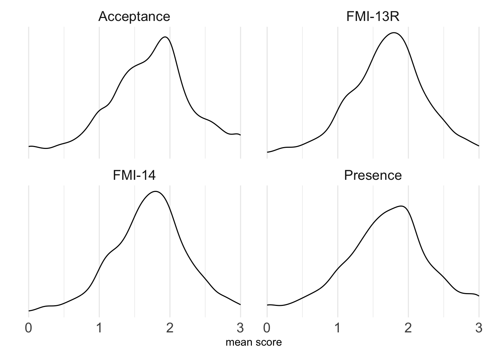

Code
library(easystats)
library(here)
library(tidyverse)
#library(knitr)
library(DataExplorer)
#library(scales)
library(knitr)
library(gt)
library(magrittr) # extract2
library(lavaan)
library(semPlot)
library(psych)Based on the 2009 Paper by Kohls, Sauer and Walach
This analyses comprises (a) descriptive (summary) statistics as well as (b) norm values
All analyses were based on the FMI13 as presented in Kohls, Sauer and Walach (2009):
Kohls, N., Sauer, S., & Walach, H. (2009). Facets of mindfulness – Results of an online study investigating the Freiburg mindfulness inventory. Personality and Individual Differences, 46(2), 224–230. https://doi.org/10.1016/j.paid.2008.10.009
Results are presented for (a) a general factor solution (b) and for the two factor solution, based on the paper of Kohls, Sauer and Walach (2009)
The present norm analyses includes the following norm values: z-values, T values, percentage rank empirical, percentage rank based on a normal distribution
For the descriptive analyses, typical statistics are reproted, ie. mean, sd, range, quartiles, skewness, kurtosis as well as a “0-1-standardized mean”, defined as mean/3 (as 3 is the theoretical upper limit of each score). This statistics is meant to easy comparison.
A number of subgroup results are presented: by sex (female and male), continuous mindfulness training (yes or no), whether intensive mindfulnes retreats have been conducted (yes or noy), whether Vipassana training is practiced (yes or no), age (median split, ie., 49 years)
Load R-Packages and other functions used.
library(easystats)
library(here)
library(tidyverse)
#library(knitr)
library(DataExplorer)
#library(scales)
library(knitr)
library(gt)
library(magrittr) # extract2
library(lavaan)
library(semPlot)
library(psych)source("R-code/funs.R")
source("R-code/01-prepare-data.R")d_w_items <- prepare_FMI_data()Reading data...Variables where all values have associated labels are now converted into
factors. If this is not intended, use `convert_factors = FALSE`.38 out of 56 variables were fully labelled and converted into factors.Following 1 variables are empty:
Filter
Use `remove_empty_columns()` to remove them from the data frame.The following items were matched to the *presence* factor: ffa_1 ffa_2 ffa_3 ffa_5 ffa_7 ffa_10
The following items were matched to the *acceptance* factor: ffa_4 ffa_6 ffa_8 ffa_9 ffa_11 ffa_12 ffa_14
mutating factors to character variablesnames(d_w_items) [1] "Nummer" "STATUS" "Einwilligung"
[4] "Alter" "Geschlecht" "Bildung"
[7] "Haushaltsgrösse" "Religion" "Evang"
[10] "Islam" "Judentum" "keineRel"
[13] "Andere_Religion" "feste_Stelle" "Einkommen"
[16] "Kursteilnahme" "tägl_Übung" "Achts_regel"
[19] "Vip_regel" "Zen_regel" "TM_regel"
[22] "Kontemp_regel" "Yoga_regel" "TaiChi_regel"
[25] "ChiGong_regel" "Tantra_regel" "Ander_regel"
[28] "Anderes" "Praxisjahre" "Retreats"
[31] "Theorie" "Presence" "Acceptance"
[34] "Summe" "Acceptance13" "SummeFFA13"
[37] "phq_sum" "fmi13_mean" "presence_mean"
[40] "acceptance13_mean" "fmi14_mean" "ffa_1"
[43] "ffa_2" "ffa_3" "ffa_4"
[46] "ffa_5" "ffa_6" "ffa_7"
[49] "ffa_8" "ffa_9" "ffa_10"
[52] "ffa_11" "ffa_12" "ffa_13r"
[55] "ffa_14" "mindfulness_experience"item_labels <-
read_csv("metadata/FMI-items.csv") |>
mutate(item_name = paste0("FFA_", nr))Rows: 14 Columns: 6
── Column specification ────────────────────────────────────────────────────────
Delimiter: ","
chr (5): label_de, label_en, facet_Diagnostica_2013, facet_PAID_2009, comment
dbl (1): nr
ℹ Use `spec()` to retrieve the full column specification for this data.
ℹ Specify the column types or set `show_col_types = FALSE` to quiet this message.Presence items:
item_labels |>
filter(facet_PAID_2009 == "Presence") |>
select(nr) |>
extract2(1)[1] 1 2 3 5 7 10Acceptance items:
item_labels |>
filter(facet_PAID_2009 == "Acceptance") |>
select(nr)|>
extract2(1)[1] 4 6 8 9 11 12 13 14d_w_items %>%
select(ends_with("_mean")) %>%
plot_density() + theme_minimal()NULLAlternative visualization, keeping the x-axis constant:
facet_labs <- c(acceptance13_mean = "Acceptance",
fmi13_mean = "FMI-13R",
fmi14_mean = "FMI-14",
presence_mean = "Presence")
d_w_items %>%
select(ends_with("_mean")) %>%
pivot_longer(everything()) %>%
ggplot(aes(x = value)) +
geom_density() +
facet_wrap(~ name, labeller = as_labeller(facet_labs)) +
theme_minimal() +
theme(strip.text = element_text(size = 14),
axis.text = element_text(size =14)) +
labs(y = "",
x = "mean score")
“Mean01” refers to a 0-1-standardized mean.
d_w_items %>%
select(ends_with("_mean")) %>%
describe_distribution(iqr = FALSE, range = TRUE, quartiles = TRUE) %>%
mutate(Mean01 = Mean/3) %>%
mutate(Model = c("FMI-13R", "Presence", "Acceptance", "FMI-14")) |>
relocate(Mean01, .after = Mean) %>%
relocate(Model, .before = everything()) |>
select(-Variable, -n_Missing) |>
knitr::kable(digits = 2)| Model | Mean | Mean01 | SD | Min | Max | Q1 | Q3 | Skewness | Kurtosis | n |
|---|---|---|---|---|---|---|---|---|---|---|
| FMI-13R | 1.71 | 0.57 | 0.51 | 0.21 | 3 | 1.36 | 2 | -0.15 | 0.16 | 1012 |
| Presence | 1.70 | 0.57 | 0.59 | 0.00 | 3 | 1.33 | 2 | -0.24 | 0.19 | 1012 |
| Acceptance | 1.73 | 0.58 | 0.58 | 0.00 | 3 | 1.43 | 2 | -0.22 | 0.27 | 1012 |
| FMI-14 | 1.71 | 0.57 | 0.51 | 0.21 | 3 | 1.36 | 2 | -0.15 | 0.16 | 1012 |
d_w_items %>%
select(ends_with("_mean")) %>%
map(~ knitr::kable(compute_all_norms(., min_score = 0, max_score = 3, by = .1),
digits = 2))$fmi13_mean
| score | perc_rank | z | stanine | T | perc_normal |
|---|---|---|---|---|---|
| 0.0 | 0.00 | -3.37 | 1.00 | 16.35 | 0.00 |
| 0.1 | 0.00 | -3.17 | 1.00 | 18.31 | 0.00 |
| 0.2 | 0.00 | -2.97 | 1.00 | 20.28 | 0.00 |
| 0.3 | 0.01 | -2.78 | 1.00 | 22.24 | 0.00 |
| 0.4 | 0.01 | -2.58 | 1.00 | 24.21 | 0.00 |
| 0.5 | 0.02 | -2.38 | 1.00 | 26.17 | 0.01 |
| 0.6 | 0.02 | -2.19 | 1.00 | 28.13 | 0.01 |
| 0.7 | 0.03 | -1.99 | 1.02 | 30.10 | 0.02 |
| 0.8 | 0.04 | -1.79 | 1.41 | 32.06 | 0.04 |
| 0.9 | 0.05 | -1.60 | 1.80 | 34.02 | 0.06 |
| 1.0 | 0.09 | -1.40 | 2.20 | 35.99 | 0.08 |
| 1.1 | 0.12 | -1.20 | 2.59 | 37.95 | 0.11 |
| 1.2 | 0.15 | -1.01 | 2.98 | 39.92 | 0.16 |
| 1.3 | 0.21 | -0.81 | 3.38 | 41.88 | 0.21 |
| 1.4 | 0.25 | -0.62 | 3.77 | 43.84 | 0.27 |
| 1.5 | 0.34 | -0.42 | 4.16 | 45.81 | 0.34 |
| 1.6 | 0.40 | -0.22 | 4.55 | 47.77 | 0.41 |
| 1.7 | 0.45 | -0.03 | 4.95 | 49.74 | 0.49 |
| 1.8 | 0.58 | 0.17 | 5.34 | 51.70 | 0.57 |
| 1.9 | 0.64 | 0.37 | 5.73 | 53.66 | 0.64 |
| 2.0 | 0.76 | 0.56 | 6.13 | 55.63 | 0.71 |
| 2.1 | 0.80 | 0.76 | 6.52 | 57.59 | 0.78 |
| 2.2 | 0.83 | 0.96 | 6.91 | 59.56 | 0.83 |
| 2.3 | 0.89 | 1.15 | 7.30 | 61.52 | 0.88 |
| 2.4 | 0.91 | 1.35 | 7.70 | 63.48 | 0.91 |
| 2.5 | 0.95 | 1.54 | 8.09 | 65.45 | 0.94 |
| 2.6 | 0.96 | 1.74 | 8.48 | 67.41 | 0.96 |
| 2.7 | 0.97 | 1.94 | 8.88 | 69.38 | 0.97 |
| 2.8 | 0.99 | 2.13 | 9.00 | 71.34 | 0.98 |
| 2.9 | 0.99 | 2.33 | 9.00 | 73.30 | 0.99 |
| 3.0 | 1.00 | 2.53 | 9.00 | 75.27 | 0.99 |
$presence_mean
| score | perc_rank | z | stanine | T | perc_normal |
|---|---|---|---|---|---|
| 0.0 | 0.01 | -2.86 | 1.00 | 21.37 | 0.00 |
| 0.1 | 0.01 | -2.69 | 1.00 | 23.06 | 0.00 |
| 0.2 | 0.02 | -2.53 | 1.00 | 24.74 | 0.01 |
| 0.3 | 0.02 | -2.36 | 1.00 | 26.43 | 0.01 |
| 0.4 | 0.02 | -2.19 | 1.00 | 28.12 | 0.01 |
| 0.5 | 0.04 | -2.02 | 1.00 | 29.80 | 0.02 |
| 0.6 | 0.04 | -1.85 | 1.30 | 31.49 | 0.03 |
| 0.7 | 0.06 | -1.68 | 1.64 | 33.18 | 0.05 |
| 0.8 | 0.06 | -1.51 | 1.97 | 34.86 | 0.07 |
| 0.9 | 0.09 | -1.34 | 2.31 | 36.55 | 0.09 |
| 1.0 | 0.15 | -1.18 | 2.65 | 38.24 | 0.12 |
| 1.1 | 0.15 | -1.01 | 2.98 | 39.92 | 0.16 |
| 1.2 | 0.21 | -0.84 | 3.32 | 41.61 | 0.20 |
| 1.3 | 0.21 | -0.67 | 3.66 | 43.30 | 0.25 |
| 1.4 | 0.29 | -0.50 | 4.00 | 44.99 | 0.31 |
| 1.5 | 0.40 | -0.33 | 4.33 | 46.67 | 0.37 |
| 1.6 | 0.40 | -0.16 | 4.67 | 48.36 | 0.43 |
| 1.7 | 0.52 | 0.00 | 5.01 | 50.05 | 0.50 |
| 1.8 | 0.52 | 0.17 | 5.35 | 51.73 | 0.57 |
| 1.9 | 0.64 | 0.34 | 5.68 | 53.42 | 0.63 |
| 2.0 | 0.77 | 0.51 | 6.02 | 55.11 | 0.70 |
| 2.1 | 0.77 | 0.68 | 6.36 | 56.79 | 0.75 |
| 2.2 | 0.84 | 0.85 | 6.70 | 58.48 | 0.80 |
| 2.3 | 0.84 | 1.02 | 7.03 | 60.17 | 0.85 |
| 2.4 | 0.89 | 1.19 | 7.37 | 61.85 | 0.88 |
| 2.5 | 0.93 | 1.35 | 7.71 | 63.54 | 0.91 |
| 2.6 | 0.93 | 1.52 | 8.05 | 65.23 | 0.94 |
| 2.7 | 0.96 | 1.69 | 8.38 | 66.91 | 0.95 |
| 2.8 | 0.96 | 1.86 | 8.72 | 68.60 | 0.97 |
| 2.9 | 0.98 | 2.03 | 9.00 | 70.29 | 0.98 |
| 3.0 | 1.00 | 2.20 | 9.00 | 71.97 | 0.99 |
$acceptance13_mean
| score | perc_rank | z | stanine | T | perc_normal |
|---|---|---|---|---|---|
| 0.0 | 0.01 | -2.99 | 1.00 | 20.06 | 0.00 |
| 0.1 | 0.01 | -2.82 | 1.00 | 21.78 | 0.00 |
| 0.2 | 0.01 | -2.65 | 1.00 | 23.51 | 0.00 |
| 0.3 | 0.02 | -2.48 | 1.00 | 25.24 | 0.01 |
| 0.4 | 0.02 | -2.30 | 1.00 | 26.96 | 0.01 |
| 0.5 | 0.03 | -2.13 | 1.00 | 28.69 | 0.02 |
| 0.6 | 0.04 | -1.96 | 1.08 | 30.42 | 0.03 |
| 0.7 | 0.04 | -1.79 | 1.43 | 32.14 | 0.04 |
| 0.8 | 0.05 | -1.61 | 1.77 | 33.87 | 0.05 |
| 0.9 | 0.08 | -1.44 | 2.12 | 35.60 | 0.07 |
| 1.0 | 0.13 | -1.27 | 2.47 | 37.33 | 0.10 |
| 1.1 | 0.13 | -1.09 | 2.81 | 39.05 | 0.14 |
| 1.2 | 0.17 | -0.92 | 3.16 | 40.78 | 0.18 |
| 1.3 | 0.24 | -0.75 | 3.50 | 42.51 | 0.23 |
| 1.4 | 0.24 | -0.58 | 3.85 | 44.23 | 0.28 |
| 1.5 | 0.33 | -0.40 | 4.19 | 45.96 | 0.34 |
| 1.6 | 0.42 | -0.23 | 4.54 | 47.69 | 0.41 |
| 1.7 | 0.42 | -0.06 | 4.88 | 49.41 | 0.48 |
| 1.8 | 0.51 | 0.11 | 5.23 | 51.14 | 0.55 |
| 1.9 | 0.63 | 0.29 | 5.57 | 52.87 | 0.61 |
| 2.0 | 0.75 | 0.46 | 5.92 | 54.60 | 0.68 |
| 2.1 | 0.75 | 0.63 | 6.26 | 56.32 | 0.74 |
| 2.2 | 0.82 | 0.80 | 6.61 | 58.05 | 0.79 |
| 2.3 | 0.87 | 0.98 | 6.96 | 59.78 | 0.84 |
| 2.4 | 0.87 | 1.15 | 7.30 | 61.50 | 0.87 |
| 2.5 | 0.90 | 1.32 | 7.65 | 63.23 | 0.91 |
| 2.6 | 0.94 | 1.50 | 7.99 | 64.96 | 0.93 |
| 2.7 | 0.94 | 1.67 | 8.34 | 66.68 | 0.95 |
| 2.8 | 0.96 | 1.84 | 8.68 | 68.41 | 0.97 |
| 2.9 | 0.98 | 2.01 | 9.00 | 70.14 | 0.98 |
| 3.0 | 1.00 | 2.19 | 9.00 | 71.87 | 0.99 |
$fmi14_mean
| score | perc_rank | z | stanine | T | perc_normal |
|---|---|---|---|---|---|
| 0.0 | 0.00 | -3.37 | 1.00 | 16.35 | 0.00 |
| 0.1 | 0.00 | -3.17 | 1.00 | 18.31 | 0.00 |
| 0.2 | 0.00 | -2.97 | 1.00 | 20.28 | 0.00 |
| 0.3 | 0.01 | -2.78 | 1.00 | 22.24 | 0.00 |
| 0.4 | 0.01 | -2.58 | 1.00 | 24.21 | 0.00 |
| 0.5 | 0.02 | -2.38 | 1.00 | 26.17 | 0.01 |
| 0.6 | 0.02 | -2.19 | 1.00 | 28.13 | 0.01 |
| 0.7 | 0.03 | -1.99 | 1.02 | 30.10 | 0.02 |
| 0.8 | 0.04 | -1.79 | 1.41 | 32.06 | 0.04 |
| 0.9 | 0.05 | -1.60 | 1.80 | 34.02 | 0.06 |
| 1.0 | 0.09 | -1.40 | 2.20 | 35.99 | 0.08 |
| 1.1 | 0.12 | -1.20 | 2.59 | 37.95 | 0.11 |
| 1.2 | 0.15 | -1.01 | 2.98 | 39.92 | 0.16 |
| 1.3 | 0.21 | -0.81 | 3.38 | 41.88 | 0.21 |
| 1.4 | 0.25 | -0.62 | 3.77 | 43.84 | 0.27 |
| 1.5 | 0.34 | -0.42 | 4.16 | 45.81 | 0.34 |
| 1.6 | 0.40 | -0.22 | 4.55 | 47.77 | 0.41 |
| 1.7 | 0.45 | -0.03 | 4.95 | 49.74 | 0.49 |
| 1.8 | 0.58 | 0.17 | 5.34 | 51.70 | 0.57 |
| 1.9 | 0.64 | 0.37 | 5.73 | 53.66 | 0.64 |
| 2.0 | 0.76 | 0.56 | 6.13 | 55.63 | 0.71 |
| 2.1 | 0.80 | 0.76 | 6.52 | 57.59 | 0.78 |
| 2.2 | 0.83 | 0.96 | 6.91 | 59.56 | 0.83 |
| 2.3 | 0.89 | 1.15 | 7.30 | 61.52 | 0.88 |
| 2.4 | 0.91 | 1.35 | 7.70 | 63.48 | 0.91 |
| 2.5 | 0.95 | 1.54 | 8.09 | 65.45 | 0.94 |
| 2.6 | 0.96 | 1.74 | 8.48 | 67.41 | 0.96 |
| 2.7 | 0.97 | 1.94 | 8.88 | 69.38 | 0.97 |
| 2.8 | 0.99 | 2.13 | 9.00 | 71.34 | 0.98 |
| 2.9 | 0.99 | 2.33 | 9.00 | 73.30 | 0.99 |
| 3.0 | 1.00 | 2.53 | 9.00 | 75.27 | 0.99 |
norms <-
d_w_items %>%
select(ends_with("_mean")) %>%
map(~ compute_all_norms(.,
min_score = 0,
max_score = 3,
by = .1),
digits = 2)
p_norm1 <-
norms %>%
pluck(1) %>%
ggplot(aes(x = score, y = z)) +
geom_line() +
scale_y_continuous(breaks = c(-2, 0, 2)) +
theme(strip.text = element_text(size = 14),
axis.text = element_text(size =14))
p_norm2 <-
norms %>%
pluck(1) %>%
ggplot(aes(x = score, y = stanine)) +
geom_line() +
scale_y_continuous(breaks = c(1, 5, 9)) +
theme(strip.text = element_text(size = 14),
axis.text = element_text(size =14))
p_norm3 <-
norms %>%
pluck(1) %>%
ggplot(aes(x = score, y = perc_rank)) +
geom_line() +
labs(y = "Percentage") +
scale_y_continuous(breaks = c(0, .5, 1),
labels = c("0%", "50%", "100%")) +
theme(strip.text = element_text(size = 14),
axis.text = element_text(size =14))
see::plots(p_norm1, p_norm2, p_norm3, tags = TRUE,
n_rows = 3)#
# see::plots(p_norm1, p_norm2, p_norm3, tags = TRUE,
# n_rows = 3,
# title = "FMI-13R mean value (x-axis) vs. different norm values (y-axis)")Item statistics:
fmi14_desc1 <-
d_w_items |>
select(starts_with("ffa_", ignore.case = FALSE)) |>
psych::alpha()
col_names <- c("Nr.", "mean", "*SD*", "*r<sub>it</sub>*", "*r<sub>it</sub> dropped*")
fmi14_desc1[["item.stats"]] |>
mutate(nr = 1:14) |>
select(nr, mean, sd, r.cor, r.drop) |>
kable(col.names = col_names, escape = FALSE, digits = 2, row.names = FALSE)| Nr. | mean | SD | rit | rit dropped |
|---|---|---|---|---|
| 1 | 1.91 | 0.85 | 0.53 | 0.49 |
| 2 | 1.51 | 0.89 | 0.50 | 0.46 |
| 3 | 1.42 | 0.86 | 0.49 | 0.45 |
| 4 | 1.89 | 0.86 | 0.62 | 0.57 |
| 5 | 1.84 | 0.83 | 0.67 | 0.63 |
| 6 | 1.80 | 0.82 | 0.65 | 0.60 |
| 7 | 1.78 | 0.84 | 0.68 | 0.63 |
| 8 | 1.84 | 0.77 | 0.53 | 0.49 |
| 9 | 1.71 | 0.84 | 0.66 | 0.61 |
| 10 | 1.72 | 0.85 | 0.67 | 0.62 |
| 11 | 1.74 | 0.84 | 0.68 | 0.64 |
| 12 | 1.54 | 0.86 | 0.66 | 0.61 |
| 13 | 1.67 | 0.90 | 0.01 | 0.00 |
| 14 | 1.60 | 0.84 | 0.55 | 0.51 |
Omega:
fmi14_omega <-
d_w_items |>
select(starts_with("ffa_", ignore.case = FALSE)) |>
psych::omega(nfactors = 1)Loading required namespace: GPArotationOmega_h for 1 factor is not meaningful, just omega_tWarning in schmid(m, nfactors, fm, digits, rotate = rotate, n.obs = n.obs, :
Omega_h and Omega_asymptotic are not meaningful with one factorfmi14_omegaOmega
Call: omegah(m = m, nfactors = nfactors, fm = fm, key = key, flip = flip,
digits = digits, title = title, sl = sl, labels = labels,
plot = plot, n.obs = n.obs, rotate = rotate, Phi = Phi, option = option,
covar = covar)
Alpha: 0.87
G.6: 0.87
Omega Hierarchical: 0.87
Omega H asymptotic: 1
Omega Total 0.87
Schmid Leiman Factor loadings greater than 0.2
g F1* h2 h2 u2 p2 com
ffa_1 0.53 0.28 0.28 0.72 1 1
ffa_2 0.51 0.26 0.26 0.74 1 1
ffa_3 0.49 0.24 0.24 0.76 1 1
ffa_4 0.61 0.37 0.37 0.63 1 1
ffa_5 0.67 0.45 0.45 0.55 1 1
ffa_6 0.65 0.43 0.43 0.57 1 1
ffa_7 0.69 0.47 0.47 0.53 1 1
ffa_8 0.53 0.28 0.28 0.72 1 1
ffa_9 0.65 0.42 0.42 0.58 1 1
ffa_10 0.67 0.45 0.45 0.55 1 1
ffa_11 0.67 0.45 0.45 0.55 1 1
ffa_12 0.66 0.43 0.43 0.57 1 1
ffa_13r 0.00 1.00 1 1
ffa_14 0.56 0.31 0.31 0.69 1 1
With Sums of squares of:
g F1* h2
4.9 0.0 1.9
general/max 2.55 max/min = 1.939515e+16
mean percent general = 1 with sd = 0 and cv of 0
Explained Common Variance of the general factor = 1
The degrees of freedom are 77 and the fit is 0.4
The number of observations was 1012 with Chi Square = 402.03 with prob < 1.7e-45
The root mean square of the residuals is 0.05
The df corrected root mean square of the residuals is 0.05
RMSEA index = 0.065 and the 10 % confidence intervals are 0.058 0.071
BIC = -130.78
Compare this with the adequacy of just a general factor and no group factors
The degrees of freedom for just the general factor are 77 and the fit is 0.4
The number of observations was 1012 with Chi Square = 402.03 with prob < 1.7e-45
The root mean square of the residuals is 0.05
The df corrected root mean square of the residuals is 0.05
RMSEA index = 0.065 and the 10 % confidence intervals are 0.058 0.071
BIC = -130.78
Measures of factor score adequacy
g F1*
Correlation of scores with factors 0.94 0
Multiple R square of scores with factors 0.89 0
Minimum correlation of factor score estimates 0.78 -1
Total, General and Subset omega for each subset
g F1*
Omega total for total scores and subscales 0.87 0.87
Omega general for total scores and subscales 0.87 0.87
Omega group for total scores and subscales 0.00 0.00fmi13_desc1 <-
d_w_items |>
select(starts_with("ffa_", ignore.case = FALSE)) |>
select(-ffa_13r) |>
psych::alpha()
col_names <- c("Nr.", "mean", "*SD*", "*r<sub>it</sub>*", "*r<sub>it</sub> dropped*")
fmi13_desc1[["item.stats"]] |>
mutate(nr = 1:13) |>
select(nr, mean, sd, r.cor, r.drop) |>
kable(col.names = col_names, escape = FALSE, digits = 2, row.names = FALSE)| Nr. | mean | SD | rit | rit dropped |
|---|---|---|---|---|
| 1 | 1.91 | 0.85 | 0.53 | 0.50 |
| 2 | 1.51 | 0.89 | 0.52 | 0.49 |
| 3 | 1.42 | 0.86 | 0.50 | 0.47 |
| 4 | 1.89 | 0.86 | 0.61 | 0.57 |
| 5 | 1.84 | 0.83 | 0.67 | 0.63 |
| 6 | 1.80 | 0.82 | 0.65 | 0.61 |
| 7 | 1.78 | 0.84 | 0.68 | 0.64 |
| 8 | 1.84 | 0.77 | 0.53 | 0.50 |
| 9 | 1.71 | 0.84 | 0.64 | 0.60 |
| 10 | 1.72 | 0.85 | 0.67 | 0.63 |
| 11 | 1.74 | 0.84 | 0.67 | 0.63 |
| 12 | 1.54 | 0.86 | 0.66 | 0.62 |
| 13 | 1.60 | 0.84 | 0.56 | 0.52 |
Omega:
fmi13_omega <-
d_w_items |>
select(starts_with("ffa_", ignore.case = FALSE)) |>
select(-ffa_13r) |>
psych::omega(nfactors = 1)Omega_h for 1 factor is not meaningful, just omega_tWarning in schmid(m, nfactors, fm, digits, rotate = rotate, n.obs = n.obs, :
Omega_h and Omega_asymptotic are not meaningful with one factorWarning in cov2cor(t(w) %*% r %*% w): diag(V) had non-positive or NA entries;
the non-finite result may be dubiousfmi13_omegaOmega
Call: omegah(m = m, nfactors = nfactors, fm = fm, key = key, flip = flip,
digits = digits, title = title, sl = sl, labels = labels,
plot = plot, n.obs = n.obs, rotate = rotate, Phi = Phi, option = option,
covar = covar)
Alpha: 0.88
G.6: 0.88
Omega Hierarchical: 0.88
Omega H asymptotic: 1
Omega Total 0.88
Schmid Leiman Factor loadings greater than 0.2
g F1* h2 h2 u2 p2 com
ffa_1 0.53 0.28 0.28 0.72 1 1
ffa_2 0.51 0.26 0.26 0.74 1 1
ffa_3 0.49 0.24 0.24 0.76 1 1
ffa_4 0.61 0.37 0.37 0.63 1 1
ffa_5 0.67 0.45 0.45 0.55 1 1
ffa_6 0.65 0.43 0.43 0.57 1 1
ffa_7 0.69 0.47 0.47 0.53 1 1
ffa_8 0.53 0.28 0.28 0.72 1 1
ffa_9 0.65 0.42 0.42 0.58 1 1
ffa_10 0.67 0.45 0.45 0.55 1 1
ffa_11 0.67 0.45 0.45 0.55 1 1
ffa_12 0.66 0.43 0.43 0.57 1 1
ffa_14 0.56 0.31 0.31 0.69 1 1
With Sums of squares of:
g F1* h2
4.9 0.0 1.9
general/max 2.55 max/min = Inf
mean percent general = 1 with sd = 0 and cv of 0
Explained Common Variance of the general factor = 1
The degrees of freedom are 65 and the fit is 0.32
The number of observations was 1012 with Chi Square = 323.71 with prob < 5.3e-36
The root mean square of the residuals is 0.04
The df corrected root mean square of the residuals is 0.05
RMSEA index = 0.063 and the 10 % confidence intervals are 0.056 0.07
BIC = -126.07
Compare this with the adequacy of just a general factor and no group factors
The degrees of freedom for just the general factor are 65 and the fit is 0.32
The number of observations was 1012 with Chi Square = 323.71 with prob < 5.3e-36
The root mean square of the residuals is 0.04
The df corrected root mean square of the residuals is 0.05
RMSEA index = 0.063 and the 10 % confidence intervals are 0.056 0.07
BIC = -126.07
Measures of factor score adequacy
g F1*
Correlation of scores with factors 0.94 0
Multiple R square of scores with factors 0.89 0
Minimum correlation of factor score estimates 0.78 -1
Total, General and Subset omega for each subset
g F1*
Omega total for total scores and subscales 0.88 0.88
Omega general for total scores and subscales 0.88 0.88
Omega group for total scores and subscales 0.00 0.00rename the items for the sake of brevity:
fmi_items <-
d_w_items %>%
select(starts_with("ffa"), mindfulness_experience) |>
rename_with(~ gsub("^ffa_(\\d+[a-zA-Z]?)$", "i\\1", .),
starts_with("ffa_"))cfa_results <- list()
get_results_list <- function(cfa_model, model_name) {
out <- list()
out <- list(
obj_name = deparse(substitute(cfa_model)),
model_name = model_name,
# overview = list(summary(cfa_model)),
cfi = fitMeasures(cfa_model)["cfi"],
tli = fitMeasures(cfa_model)["tli"],
rmsea = fitMeasures(cfa_model)["rmsea"],
srmr = fitMeasures(cfa_model)["srmr"],
chisq = fitMeasures(cfa_model)["chisq"],
df = fitMeasures(cfa_model)["df"],
pvalue = fitMeasures(cfa_model)["pvalue"]
)
return(out)
}polychoric_r <- polychoric(fmi_items |> select(-mindfulness_experience))
polychoric_rho <- polychoric_r$rho
polychoric_rho[lower.tri(polychoric_r$rho, diag = FALSE)] <- NA
polychoric_rho |> kable( digits = 2)| i1 | i2 | i3 | i4 | i5 | i6 | i7 | i8 | i9 | i10 | i11 | i12 | i13r | i14 | |
|---|---|---|---|---|---|---|---|---|---|---|---|---|---|---|
| i1 | 1 | 0.4 | 0.34 | 0.35 | 0.40 | 0.37 | 0.48 | 0.38 | 0.38 | 0.40 | 0.39 | 0.36 | -0.01 | 0.36 |
| i2 | NA | 1.0 | 0.48 | 0.31 | 0.44 | 0.30 | 0.41 | 0.32 | 0.28 | 0.39 | 0.35 | 0.39 | -0.15 | 0.35 |
| i3 | NA | NA | 1.00 | 0.30 | 0.39 | 0.31 | 0.40 | 0.29 | 0.29 | 0.41 | 0.33 | 0.40 | -0.15 | 0.34 |
| i4 | NA | NA | NA | 1.00 | 0.55 | 0.57 | 0.47 | 0.33 | 0.51 | 0.43 | 0.49 | 0.45 | 0.09 | 0.40 |
| i5 | NA | NA | NA | NA | 1.00 | 0.53 | 0.53 | 0.39 | 0.43 | 0.58 | 0.53 | 0.46 | 0.03 | 0.40 |
| i6 | NA | NA | NA | NA | NA | 1.00 | 0.56 | 0.42 | 0.51 | 0.47 | 0.50 | 0.47 | 0.03 | 0.42 |
| i7 | NA | NA | NA | NA | NA | NA | 1.00 | 0.50 | 0.49 | 0.51 | 0.49 | 0.49 | -0.03 | 0.42 |
| i8 | NA | NA | NA | NA | NA | NA | NA | 1.00 | 0.43 | 0.43 | 0.41 | 0.39 | -0.04 | 0.30 |
| i9 | NA | NA | NA | NA | NA | NA | NA | NA | 1.00 | 0.54 | 0.55 | 0.57 | 0.11 | 0.43 |
| i10 | NA | NA | NA | NA | NA | NA | NA | NA | NA | 1.00 | 0.56 | 0.50 | 0.01 | 0.40 |
| i11 | NA | NA | NA | NA | NA | NA | NA | NA | NA | NA | 1.00 | 0.56 | 0.14 | 0.43 |
| i12 | NA | NA | NA | NA | NA | NA | NA | NA | NA | NA | NA | 1.00 | 0.02 | 0.49 |
| i13r | NA | NA | NA | NA | NA | NA | NA | NA | NA | NA | NA | NA | 1.00 | -0.06 |
| i14 | NA | NA | NA | NA | NA | NA | NA | NA | NA | NA | NA | NA | NA | 1.00 |
FMI14 <-
"General_Factor=~i1+i2+i3+i4+i5+i6+i7+i8+i9+i10+i11+i12+i13r+i14"one_factor_numeric <- cfa(FMI14, data = fmi_items)
cfa_results[["FMI-14, numeric"]] <-
get_results_list(one_factor_numeric,
model_name = "FMI-14, numeric")one_factor_ordered_pearson <-
cfa(FMI14,
data = fmi_items,
estimator = "WLSMV",
ordered = TRUE)
cfa_results[["FMI-14, ordered, Pearson"]] <-
get_results_list(one_factor_ordered_pearson,
model_name = "FMI-14, ordered, Pearson")one_factor_ordered_polychoric <-
cfa(FMI14,
data = fmi_items,
estimator = "WLSMV",
sample.cov = polychoric_rho,
ordered = TRUE)
cfa_results[["FMI-14, ordered, polychoric"]] <-
get_results_list(one_factor_ordered_polychoric,
model_name = "FMI-14, ordered, polychoric")one_factor_ordered_polychoric_practitioners <- cfa(FMI14,
data = fmi_items |> filter(mindfulness_experience == 1),
estimator = "WLSMV",
sample.cov = polychoric_rho,
ordered = TRUE)
cfa_results[["FMI-14, ordered, polychoric, mindfulness practitioners"]] <-
get_results_list(one_factor_ordered_polychoric_practitioners,
model_name = "FMI-14, ordered, polychoric, mindfulness practitioners")cfa_results_df <-
do.call(rbind, lapply(cfa_results, as.data.frame))
cfa_results_prepped <-
cfa_results_df |>
select(-obj_name) |>
rename(Model = model_name,
CFI = cfi,
TLI = tli,
RMSEA = rmsea,
SRMR = srmr) |>
filter(!str_detect(Model, "Pearson")) |>
mutate(Model = str_replace_all(Model, ", polychoric", "")) |>
mutate(Model = str_replace_all(Model, "mindfulness ", "")) |>
mutate(Nr = row_number()) |>
relocate(Nr, .before = everything()) |>
select(Nr, Model, chisq, df, pvalue, CFI, TLI, RMSEA, SRMR)
cfa_results_prepped |>
names() <- c("Nr", "Model", "MLR χ²", "df", "p-value", "CFI", "TLI", "RMSEA", "SRMR")
cfa_results_prepped |>
kable(digits = 2,
row.names = FALSE,
align = c("l", "l",
rep("r", ncol(cfa_results_prepped) - 2)))| Nr | Model | MLR χ² | df | p-value | CFI | TLI | RMSEA | SRMR |
|---|---|---|---|---|---|---|---|---|
| 1 | FMI-14, numeric | 404.37 | 77 | 0.00 | 0.92 | 0.91 | 0.06 | 0.04 |
| 2 | FMI-14, ordered | 357.41 | 77 | 0.00 | 0.99 | 0.99 | 0.06 | 0.05 |
| 3 | FMI-14, ordered, practitioners | 112.63 | 77 | 0.01 | 1.00 | 1.00 | 0.03 | 0.04 |
| 4 | FMI-13R, numeric | 280.01 | 64 | 0.00 | 0.95 | 0.94 | 0.06 | 0.04 |
| 5 | FMI-13R, ordered | 228.36 | 64 | 0.00 | 0.99 | 0.99 | 0.05 | 0.04 |
| 6 | FMI-13R, numeric, practitioners | 116.77 | 64 | 0.00 | 0.97 | 0.97 | 0.04 | 0.03 |
| 7 | FMI-13R, ordered, practitioners | 80.98 | 64 | 0.07 | 1.00 | 1.00 | 0.02 | 0.04 |
In sum, the results favor model 10 FMI-13R, ordered, polychoric, mindfulness practitioners, which show are very good fit. However, for the whole sample, model 7 FMI-13R, ordered, polychoric is of similar good fit.
cfa_med_non_med_fmi13_numeric <-
cfa(model = FMI13R,
data = fmi_items,
group = "mindfulness_experience")
summary(cfa_med_non_med_fmi13_numeric, fit.measures= TRUE, standardized = TRUE)lavaan 0.6-19 ended normally after 47 iterations
Estimator ML
Optimization method NLMINB
Number of model parameters 80
Number of observations per group:
0 510
1 502
Model Test User Model:
Test statistic 368.512
Degrees of freedom 128
P-value (Chi-square) 0.000
Test statistic for each group:
0 251.745
1 116.767
Model Test Baseline Model:
Test statistic 4502.067
Degrees of freedom 156
P-value 0.000
User Model versus Baseline Model:
Comparative Fit Index (CFI) 0.945
Tucker-Lewis Index (TLI) 0.933
Loglikelihood and Information Criteria:
Loglikelihood user model (H0) -14238.185
Loglikelihood unrestricted model (H1) -14053.929
Akaike (AIC) 28636.369
Bayesian (BIC) 29029.944
Sample-size adjusted Bayesian (SABIC) 28775.858
Root Mean Square Error of Approximation:
RMSEA 0.061
90 Percent confidence interval - lower 0.054
90 Percent confidence interval - upper 0.068
P-value H_0: RMSEA <= 0.050 0.007
P-value H_0: RMSEA >= 0.080 0.000
Standardized Root Mean Square Residual:
SRMR 0.038
Parameter Estimates:
Standard errors Standard
Information Expected
Information saturated (h1) model Structured
Group 1 [0]:
Latent Variables:
Estimate Std.Err z-value P(>|z|) Std.lv Std.all
presence =~
i1 1.000 0.392 0.476
i2 1.060 0.138 7.671 0.000 0.416 0.452
i3 1.031 0.134 7.707 0.000 0.405 0.455
i5 1.576 0.160 9.862 0.000 0.619 0.716
i7 1.557 0.160 9.732 0.000 0.611 0.694
i10 1.554 0.159 9.747 0.000 0.610 0.697
acceptance =~
i4 1.000 0.546 0.647
i6 1.074 0.079 13.620 0.000 0.587 0.711
i8 0.785 0.073 10.792 0.000 0.429 0.540
i9 1.123 0.082 13.722 0.000 0.614 0.718
i11 1.205 0.084 14.311 0.000 0.658 0.758
i12 1.104 0.084 13.211 0.000 0.603 0.685
i14 0.932 0.076 12.198 0.000 0.509 0.622
Covariances:
Estimate Std.Err z-value P(>|z|) Std.lv Std.all
presence ~~
acceptance 0.192 0.024 7.986 0.000 0.896 0.896
Intercepts:
Estimate Std.Err z-value P(>|z|) Std.lv Std.all
.i1 1.931 0.037 52.908 0.000 1.931 2.343
.i2 1.339 0.041 32.849 0.000 1.339 1.455
.i3 1.243 0.039 31.548 0.000 1.243 1.397
.i5 1.790 0.038 46.802 0.000 1.790 2.072
.i7 1.735 0.039 44.514 0.000 1.735 1.971
.i10 1.573 0.039 40.568 0.000 1.573 1.796
.i4 1.861 0.037 49.802 0.000 1.861 2.205
.i6 1.833 0.037 50.205 0.000 1.833 2.223
.i8 1.843 0.035 52.429 0.000 1.843 2.322
.i9 1.659 0.038 43.826 0.000 1.659 1.941
.i11 1.710 0.038 44.438 0.000 1.710 1.968
.i12 1.433 0.039 36.770 0.000 1.433 1.628
.i14 1.525 0.036 42.121 0.000 1.525 1.865
Variances:
Estimate Std.Err z-value P(>|z|) Std.lv Std.all
.i1 0.526 0.035 15.175 0.000 0.526 0.773
.i2 0.675 0.044 15.276 0.000 0.675 0.796
.i3 0.628 0.041 15.263 0.000 0.628 0.793
.i5 0.364 0.028 13.031 0.000 0.364 0.487
.i7 0.401 0.030 13.384 0.000 0.401 0.518
.i10 0.395 0.030 13.349 0.000 0.395 0.515
.i4 0.414 0.029 14.481 0.000 0.414 0.581
.i6 0.336 0.024 13.849 0.000 0.336 0.494
.i8 0.446 0.030 15.123 0.000 0.446 0.708
.i9 0.354 0.026 13.766 0.000 0.354 0.484
.i11 0.322 0.024 13.173 0.000 0.322 0.426
.i12 0.411 0.029 14.143 0.000 0.411 0.531
.i14 0.410 0.028 14.667 0.000 0.410 0.613
presence 0.154 0.029 5.301 0.000 1.000 1.000
acceptance 0.298 0.038 7.804 0.000 1.000 1.000
Group 2 [1]:
Latent Variables:
Estimate Std.Err z-value P(>|z|) Std.lv Std.all
presence =~
i1 1.000 0.549 0.631
i2 0.897 0.079 11.402 0.000 0.492 0.602
i3 0.793 0.075 10.598 0.000 0.435 0.551
i5 0.954 0.078 12.198 0.000 0.524 0.654
i7 1.012 0.079 12.736 0.000 0.555 0.692
i10 0.963 0.078 12.296 0.000 0.528 0.661
acceptance =~
i4 1.000 0.533 0.617
i6 0.975 0.083 11.754 0.000 0.520 0.641
i8 0.732 0.074 9.946 0.000 0.390 0.520
i9 0.940 0.082 11.389 0.000 0.501 0.615
i11 0.907 0.081 11.161 0.000 0.483 0.599
i12 1.011 0.085 11.835 0.000 0.539 0.646
i14 0.796 0.083 9.636 0.000 0.424 0.501
Covariances:
Estimate Std.Err z-value P(>|z|) Std.lv Std.all
presence ~~
acceptance 0.280 0.030 9.281 0.000 0.958 0.958
Intercepts:
Estimate Std.Err z-value P(>|z|) Std.lv Std.all
.i1 1.888 0.039 48.647 0.000 1.888 2.171
.i2 1.687 0.037 46.215 0.000 1.687 2.063
.i3 1.596 0.035 45.282 0.000 1.596 2.021
.i5 1.894 0.036 53.046 0.000 1.894 2.368
.i7 1.829 0.036 51.058 0.000 1.829 2.279
.i10 1.871 0.036 52.444 0.000 1.871 2.341
.i4 1.924 0.039 49.876 0.000 1.924 2.226
.i6 1.773 0.036 48.985 0.000 1.773 2.186
.i8 1.843 0.033 55.028 0.000 1.843 2.456
.i9 1.763 0.036 48.513 0.000 1.763 2.165
.i11 1.779 0.036 49.424 0.000 1.779 2.206
.i12 1.647 0.037 44.294 0.000 1.647 1.977
.i14 1.685 0.038 44.571 0.000 1.685 1.989
Variances:
Estimate Std.Err z-value P(>|z|) Std.lv Std.all
.i1 0.455 0.032 14.270 0.000 0.455 0.602
.i2 0.427 0.029 14.498 0.000 0.427 0.638
.i3 0.434 0.029 14.815 0.000 0.434 0.697
.i5 0.366 0.026 14.054 0.000 0.366 0.572
.i7 0.336 0.025 13.633 0.000 0.336 0.521
.i10 0.359 0.026 13.986 0.000 0.359 0.563
.i4 0.463 0.032 14.359 0.000 0.463 0.620
.i6 0.388 0.027 14.151 0.000 0.388 0.590
.i8 0.411 0.027 14.955 0.000 0.411 0.729
.i9 0.412 0.029 14.371 0.000 0.412 0.622
.i11 0.417 0.029 14.489 0.000 0.417 0.641
.i12 0.404 0.029 14.097 0.000 0.404 0.582
.i14 0.538 0.036 15.042 0.000 0.538 0.749
presence 0.301 0.041 7.420 0.000 1.000 1.000
acceptance 0.284 0.039 7.201 0.000 1.000 1.000fitMeasures(cfa_med_non_med_fmi13_numeric) npar fmin chisq
80.000 0.182 368.512
df pvalue baseline.chisq
128.000 0.000 4502.067
baseline.df baseline.pvalue cfi
156.000 0.000 0.945
tli nnfi rfi
0.933 0.933 0.900
nfi pnfi ifi
0.918 0.753 0.945
rni logl unrestricted.logl
0.945 -14238.185 -14053.929
aic bic ntotal
28636.369 29029.944 1012.000
bic2 rmsea rmsea.ci.lower
28775.858 0.061 0.054
rmsea.ci.upper rmsea.ci.level rmsea.pvalue
0.068 0.900 0.007
rmsea.close.h0 rmsea.notclose.pvalue rmsea.notclose.h0
0.050 0.000 0.080
rmr rmr_nomean srmr
0.027 0.029 0.038
srmr_bentler srmr_bentler_nomean crmr
0.038 0.041 0.041
crmr_nomean srmr_mplus srmr_mplus_nomean
0.044 0.038 0.041
cn_05 cn_01 gfi
427.769 462.724 0.980
agfi pgfi mfi
0.967 0.603 0.888
ecvi
0.522 cfa_med_non_med_fmi13_ordered <-
cfa(model = FMI13R,
data = fmi_items,
estimator = "WLSMV",
sample.cov = polychoric_rho,
ordered = TRUE,
std.lv = TRUE,
group = "mindfulness_experience")
summary(cfa_med_non_med_fmi13_ordered, fit.measures= TRUE, standardized = TRUE)lavaan 0.6-19 ended normally after 29 iterations
Estimator DWLS
Optimization method NLMINB
Number of model parameters 106
Number of observations per group:
0 510
1 502
Model Test User Model:
Standard Scaled
Test Statistic 298.429 517.093
Degrees of freedom 128 128
P-value (Chi-square) 0.000 0.000
Scaling correction factor 0.605
Shift parameter 23.499
simple second-order correction
Test statistic for each group:
0 371.502 371.502
1 145.590 145.590
Model Test Baseline Model:
Test statistic 24532.153 9549.368
Degrees of freedom 156 156
P-value 0.000 0.000
Scaling correction factor 2.595
User Model versus Baseline Model:
Comparative Fit Index (CFI) 0.993 0.959
Tucker-Lewis Index (TLI) 0.991 0.950
Robust Comparative Fit Index (CFI) 0.924
Robust Tucker-Lewis Index (TLI) 0.908
Root Mean Square Error of Approximation:
RMSEA 0.051 0.078
90 Percent confidence interval - lower 0.044 0.071
90 Percent confidence interval - upper 0.059 0.085
P-value H_0: RMSEA <= 0.050 0.374 0.000
P-value H_0: RMSEA >= 0.080 0.000 0.292
Robust RMSEA 0.081
90 Percent confidence interval - lower 0.074
90 Percent confidence interval - upper 0.089
P-value H_0: Robust RMSEA <= 0.050 0.000
P-value H_0: Robust RMSEA >= 0.080 0.636
Standardized Root Mean Square Residual:
SRMR 0.045 0.045
Parameter Estimates:
Parameterization Delta
Standard errors Robust.sem
Information Expected
Information saturated (h1) model Unstructured
Group 1 [0]:
Latent Variables:
Estimate Std.Err z-value P(>|z|) Std.lv Std.all
presence =~
i1 0.521 0.035 14.833 0.000 0.521 0.521
i2 0.484 0.036 13.458 0.000 0.484 0.484
i3 0.493 0.036 13.601 0.000 0.493 0.493
i5 0.766 0.023 33.791 0.000 0.766 0.766
i7 0.760 0.023 33.069 0.000 0.760 0.760
i10 0.751 0.022 33.366 0.000 0.751 0.751
acceptance =~
i4 0.704 0.025 27.913 0.000 0.704 0.704
i6 0.763 0.020 37.472 0.000 0.763 0.763
i8 0.611 0.030 20.534 0.000 0.611 0.611
i9 0.756 0.021 36.440 0.000 0.756 0.756
i11 0.806 0.018 45.070 0.000 0.806 0.806
i12 0.733 0.022 33.253 0.000 0.733 0.733
i14 0.661 0.027 24.671 0.000 0.661 0.661
Covariances:
Estimate Std.Err z-value P(>|z|) Std.lv Std.all
presence ~~
acceptance 0.905 0.015 59.302 0.000 0.905 0.905
Thresholds:
Estimate Std.Err z-value P(>|z|) Std.lv Std.all
i1|t1 -1.516 0.086 -17.571 0.000 -1.516 -1.516
i1|t2 -0.684 0.061 -11.295 0.000 -0.684 -0.684
i1|t3 0.696 0.061 11.464 0.000 0.696 0.696
i2|t1 -0.863 0.064 -13.532 0.000 -0.863 -0.863
i2|t2 0.213 0.056 3.802 0.000 0.213 0.213
i2|t3 1.187 0.072 16.394 0.000 1.187 1.187
i3|t1 -0.760 0.062 -12.303 0.000 -0.760 -0.760
i3|t2 0.289 0.056 5.124 0.000 0.289 0.289
i3|t3 1.402 0.081 17.364 0.000 1.402 1.402
i5|t1 -1.364 0.079 -17.247 0.000 -1.364 -1.364
i5|t2 -0.447 0.058 -7.757 0.000 -0.447 -0.447
i5|t3 0.828 0.063 13.127 0.000 0.828 0.828
i7|t1 -1.238 0.074 -16.693 0.000 -1.238 -1.238
i7|t2 -0.415 0.057 -7.233 0.000 -0.415 -0.415
i7|t3 0.906 0.065 14.010 0.000 0.906 0.906
i10|t1 -1.120 0.070 -15.938 0.000 -1.120 -1.120
i10|t2 -0.188 0.056 -3.360 0.001 -0.188 -0.188
i10|t3 1.129 0.071 16.005 0.000 1.129 1.129
i4|t1 -1.516 0.086 -17.571 0.000 -1.516 -1.516
i4|t2 -0.508 0.058 -8.716 0.000 -0.508 -0.508
i4|t3 0.734 0.061 11.969 0.000 0.734 0.734
i6|t1 -1.516 0.086 -17.571 0.000 -1.516 -1.516
i6|t2 -0.502 0.058 -8.629 0.000 -0.502 -0.502
i6|t3 0.821 0.063 13.045 0.000 0.821 0.821
i8|t1 -1.617 0.092 -17.584 0.000 -1.617 -1.617
i8|t2 -0.524 0.058 -8.976 0.000 -0.524 -0.524
i8|t3 0.856 0.064 13.451 0.000 0.856 0.856
i9|t1 -1.293 0.076 -16.966 0.000 -1.293 -1.293
i9|t2 -0.258 0.056 -4.596 0.000 -0.258 -0.258
i9|t3 1.016 0.067 15.084 0.000 1.016 1.016
i11|t1 -1.282 0.076 -16.914 0.000 -1.282 -1.282
i11|t2 -0.346 0.057 -6.092 0.000 -0.346 -0.346
i11|t3 0.936 0.065 14.324 0.000 0.936 0.936
i12|t1 -0.991 0.067 -14.860 0.000 -0.991 -0.991
i12|t2 0.025 0.056 0.442 0.658 0.025 0.025
i12|t3 1.260 0.075 16.806 0.000 1.260 1.260
i14|t1 -1.260 0.075 -16.806 0.000 -1.260 -1.260
i14|t2 -0.059 0.056 -1.062 0.288 -0.059 -0.059
i14|t3 1.249 0.075 16.750 0.000 1.249 1.249
Variances:
Estimate Std.Err z-value P(>|z|) Std.lv Std.all
.i1 0.729 0.729 0.729
.i2 0.766 0.766 0.766
.i3 0.757 0.757 0.757
.i5 0.413 0.413 0.413
.i7 0.423 0.423 0.423
.i10 0.437 0.437 0.437
.i4 0.505 0.505 0.505
.i6 0.417 0.417 0.417
.i8 0.626 0.626 0.626
.i9 0.429 0.429 0.429
.i11 0.351 0.351 0.351
.i12 0.463 0.463 0.463
.i14 0.563 0.563 0.563
presence 1.000 1.000 1.000
acceptance 1.000 1.000 1.000
Group 2 [1]:
Latent Variables:
Estimate Std.Err z-value P(>|z|) Std.lv Std.all
presence =~
i1 0.680 0.027 25.441 0.000 0.680 0.680
i2 0.649 0.029 22.650 0.000 0.649 0.649
i3 0.593 0.032 18.443 0.000 0.593 0.593
i5 0.711 0.024 29.876 0.000 0.711 0.711
i7 0.752 0.022 34.301 0.000 0.752 0.752
i10 0.720 0.023 31.709 0.000 0.720 0.720
acceptance =~
i4 0.665 0.028 23.406 0.000 0.665 0.665
i6 0.697 0.025 28.078 0.000 0.697 0.697
i8 0.573 0.035 16.585 0.000 0.573 0.573
i9 0.670 0.027 24.552 0.000 0.670 0.670
i11 0.648 0.031 21.152 0.000 0.648 0.648
i12 0.694 0.025 27.374 0.000 0.694 0.694
i14 0.544 0.035 15.730 0.000 0.544 0.544
Covariances:
Estimate Std.Err z-value P(>|z|) Std.lv Std.all
presence ~~
acceptance 0.965 0.015 62.310 0.000 0.965 0.965
Thresholds:
Estimate Std.Err z-value P(>|z|) Std.lv Std.all
i1|t1 -1.435 0.083 -17.306 0.000 -1.435 -1.435
i1|t2 -0.557 0.059 -9.395 0.000 -0.557 -0.557
i1|t3 0.665 0.061 10.951 0.000 0.665 0.665
i2|t1 -1.493 0.086 -17.407 0.000 -1.493 -1.493
i2|t2 -0.242 0.057 -4.276 0.000 -0.242 -0.242
i2|t3 0.997 0.067 14.797 0.000 0.997 0.997
i3|t1 -1.463 0.084 -17.362 0.000 -1.463 -1.463
i3|t2 -0.120 0.056 -2.140 0.032 -0.120 -0.120
i3|t3 1.177 0.073 16.205 0.000 1.177 1.177
i5|t1 -1.591 0.091 -17.457 0.000 -1.591 -1.591
i5|t2 -0.622 0.060 -10.349 0.000 -0.622 -0.622
i5|t3 0.782 0.063 12.475 0.000 0.782 0.782
i7|t1 -1.591 0.091 -17.457 0.000 -1.591 -1.591
i7|t2 -0.494 0.059 -8.433 0.000 -0.494 -0.494
i7|t3 0.859 0.064 13.381 0.000 0.859 0.859
i10|t1 -1.687 0.097 -17.366 0.000 -1.687 -1.687
i10|t2 -0.522 0.059 -8.871 0.000 -0.522 -0.522
i10|t3 0.782 0.063 12.475 0.000 0.782 0.782
i4|t1 -1.540 0.088 -17.450 0.000 -1.540 -1.540
i4|t2 -0.551 0.059 -9.307 0.000 -0.551 -0.551
i4|t3 0.592 0.060 9.916 0.000 0.592 0.592
i6|t1 -1.591 0.091 -17.457 0.000 -1.591 -1.591
i6|t2 -0.368 0.057 -6.406 0.000 -0.368 -0.368
i6|t3 0.896 0.065 13.784 0.000 0.896 0.896
i8|t1 -1.827 0.107 -17.001 0.000 -1.827 -1.827
i8|t2 -0.511 0.059 -8.696 0.000 -0.511 -0.511
i8|t3 0.911 0.065 13.943 0.000 0.911 0.911
i9|t1 -1.493 0.086 -17.407 0.000 -1.493 -1.493
i9|t2 -0.405 0.058 -7.025 0.000 -0.405 -0.405
i9|t3 0.941 0.066 14.258 0.000 0.941 0.941
i11|t1 -1.591 0.091 -17.457 0.000 -1.591 -1.591
i11|t2 -0.389 0.058 -6.760 0.000 -0.389 -0.389
i11|t3 0.903 0.065 13.863 0.000 0.903 0.903
i12|t1 -1.435 0.083 -17.306 0.000 -1.435 -1.435
i12|t2 -0.166 0.056 -2.942 0.003 -0.166 -0.166
i12|t3 1.005 0.068 14.873 0.000 1.005 1.005
i14|t1 -1.355 0.079 -17.082 0.000 -1.355 -1.355
i14|t2 -0.278 0.057 -4.899 0.000 -0.278 -0.278
i14|t3 0.981 0.067 14.645 0.000 0.981 0.981
Variances:
Estimate Std.Err z-value P(>|z|) Std.lv Std.all
.i1 0.537 0.537 0.537
.i2 0.579 0.579 0.579
.i3 0.648 0.648 0.648
.i5 0.494 0.494 0.494
.i7 0.434 0.434 0.434
.i10 0.482 0.482 0.482
.i4 0.557 0.557 0.557
.i6 0.515 0.515 0.515
.i8 0.671 0.671 0.671
.i9 0.552 0.552 0.552
.i11 0.580 0.580 0.580
.i12 0.518 0.518 0.518
.i14 0.704 0.704 0.704
presence 1.000 1.000 1.000
acceptance 1.000 1.000 1.000fitMeasures(cfa_med_non_med_fmi13_ordered) npar fmin
106.000 0.147
chisq df
298.429 128.000
pvalue chisq.scaled
0.000 517.093
df.scaled pvalue.scaled
128.000 0.000
chisq.scaling.factor baseline.chisq
0.605 24532.153
baseline.df baseline.pvalue
156.000 0.000
baseline.chisq.scaled baseline.df.scaled
9549.368 156.000
baseline.pvalue.scaled baseline.chisq.scaling.factor
0.000 2.595
cfi tli
0.993 0.991
cfi.scaled tli.scaled
0.959 0.950
cfi.robust tli.robust
0.924 0.908
nnfi rfi
0.991 0.985
nfi pnfi
0.988 0.811
ifi rni
0.993 0.993
nnfi.scaled rfi.scaled
0.950 0.934
nfi.scaled pnfi.scaled
0.946 0.776
ifi.scaled rni.scaled
0.959 0.959
nnfi.robust rni.robust
0.908 0.924
rmsea rmsea.ci.lower
0.051 0.044
rmsea.ci.upper rmsea.ci.level
0.059 0.900
rmsea.pvalue rmsea.close.h0
0.374 0.050
rmsea.notclose.pvalue rmsea.notclose.h0
0.000 0.080
rmsea.scaled rmsea.ci.lower.scaled
0.078 0.071
rmsea.ci.upper.scaled rmsea.pvalue.scaled
0.085 0.000
rmsea.notclose.pvalue.scaled rmsea.robust
0.292 0.081
rmsea.ci.lower.robust rmsea.ci.upper.robust
0.074 0.089
rmsea.pvalue.robust rmsea.notclose.pvalue.robust
0.000 0.636
rmr rmr_nomean
0.038 0.045
srmr srmr_bentler
0.045 0.038
srmr_bentler_nomean crmr
0.045 0.040
crmr_nomean srmr_mplus
0.049 NA
srmr_mplus_nomean cn_05
NA 526.950
cn_01 gfi
570.028 0.992
agfi pgfi
0.986 0.543
mfi wrmr
0.919 1.597 FMI13R_cor_constrained <- "
# Presence:
presence =~ i1 + i2 + i3 + i5 + i7 + i10
acceptance =~ i4 + i6 + i8 + i9 + i11 + i12 + i14
presence ~~ c(cor1, cor2)*acceptance
"cfa_med_non_med_cor_constrained_numeric <-
cfa(model = FMI13R_cor_constrained,
data = fmi_items,
group = "mindfulness_experience",
std.lv = TRUE
)
summary(cfa_med_non_med_cor_constrained_numeric, fit.measures= TRUE, standardized = TRUE)lavaan 0.6-19 ended normally after 20 iterations
Estimator ML
Optimization method NLMINB
Number of model parameters 80
Number of observations per group:
0 510
1 502
Model Test User Model:
Test statistic 368.512
Degrees of freedom 128
P-value (Chi-square) 0.000
Test statistic for each group:
0 251.745
1 116.767
Model Test Baseline Model:
Test statistic 4502.067
Degrees of freedom 156
P-value 0.000
User Model versus Baseline Model:
Comparative Fit Index (CFI) 0.945
Tucker-Lewis Index (TLI) 0.933
Loglikelihood and Information Criteria:
Loglikelihood user model (H0) -14238.185
Loglikelihood unrestricted model (H1) -14053.929
Akaike (AIC) 28636.369
Bayesian (BIC) 29029.944
Sample-size adjusted Bayesian (SABIC) 28775.858
Root Mean Square Error of Approximation:
RMSEA 0.061
90 Percent confidence interval - lower 0.054
90 Percent confidence interval - upper 0.068
P-value H_0: RMSEA <= 0.050 0.007
P-value H_0: RMSEA >= 0.080 0.000
Standardized Root Mean Square Residual:
SRMR 0.038
Parameter Estimates:
Standard errors Standard
Information Expected
Information saturated (h1) model Structured
Group 1 [0]:
Latent Variables:
Estimate Std.Err z-value P(>|z|) Std.lv Std.all
presence =~
i1 0.392 0.037 10.601 0.000 0.392 0.476
i2 0.416 0.042 9.991 0.000 0.416 0.452
i3 0.405 0.040 10.071 0.000 0.405 0.455
i5 0.619 0.035 17.438 0.000 0.619 0.716
i7 0.611 0.037 16.743 0.000 0.611 0.694
i10 0.610 0.036 16.815 0.000 0.610 0.697
acceptance =~
i4 0.546 0.035 15.609 0.000 0.546 0.647
i6 0.587 0.033 17.670 0.000 0.587 0.711
i8 0.429 0.034 12.495 0.000 0.429 0.540
i9 0.614 0.034 17.896 0.000 0.614 0.718
i11 0.658 0.034 19.281 0.000 0.658 0.758
i12 0.603 0.036 16.798 0.000 0.603 0.685
i14 0.509 0.034 14.843 0.000 0.509 0.622
Covariances:
Estimate Std.Err z-value P(>|z|) Std.lv Std.all
presence ~~
accptnc (cor1) 0.896 0.021 43.307 0.000 0.896 0.896
Intercepts:
Estimate Std.Err z-value P(>|z|) Std.lv Std.all
.i1 1.931 0.037 52.908 0.000 1.931 2.343
.i2 1.339 0.041 32.849 0.000 1.339 1.455
.i3 1.243 0.039 31.548 0.000 1.243 1.397
.i5 1.790 0.038 46.802 0.000 1.790 2.072
.i7 1.735 0.039 44.514 0.000 1.735 1.971
.i10 1.573 0.039 40.568 0.000 1.573 1.796
.i4 1.861 0.037 49.802 0.000 1.861 2.205
.i6 1.833 0.037 50.205 0.000 1.833 2.223
.i8 1.843 0.035 52.429 0.000 1.843 2.322
.i9 1.659 0.038 43.826 0.000 1.659 1.941
.i11 1.710 0.038 44.438 0.000 1.710 1.968
.i12 1.433 0.039 36.770 0.000 1.433 1.628
.i14 1.525 0.036 42.121 0.000 1.525 1.865
Variances:
Estimate Std.Err z-value P(>|z|) Std.lv Std.all
.i1 0.526 0.035 15.175 0.000 0.526 0.773
.i2 0.675 0.044 15.276 0.000 0.675 0.796
.i3 0.628 0.041 15.263 0.000 0.628 0.793
.i5 0.364 0.028 13.031 0.000 0.364 0.487
.i7 0.401 0.030 13.384 0.000 0.401 0.518
.i10 0.395 0.030 13.349 0.000 0.395 0.515
.i4 0.414 0.029 14.481 0.000 0.414 0.581
.i6 0.336 0.024 13.849 0.000 0.336 0.494
.i8 0.446 0.030 15.123 0.000 0.446 0.708
.i9 0.354 0.026 13.766 0.000 0.354 0.484
.i11 0.322 0.024 13.173 0.000 0.322 0.426
.i12 0.411 0.029 14.143 0.000 0.411 0.531
.i14 0.410 0.028 14.667 0.000 0.410 0.613
presence 1.000 1.000 1.000
acceptance 1.000 1.000 1.000
Group 2 [1]:
Latent Variables:
Estimate Std.Err z-value P(>|z|) Std.lv Std.all
presence =~
i1 0.549 0.037 14.840 0.000 0.549 0.631
i2 0.492 0.035 13.991 0.000 0.492 0.602
i3 0.435 0.035 12.577 0.000 0.435 0.551
i5 0.524 0.034 15.549 0.000 0.524 0.654
i7 0.555 0.033 16.720 0.000 0.555 0.692
i10 0.528 0.034 15.755 0.000 0.528 0.661
acceptance =~
i4 0.533 0.037 14.403 0.000 0.533 0.617
i6 0.520 0.034 15.113 0.000 0.520 0.641
i8 0.390 0.033 11.743 0.000 0.390 0.520
i9 0.501 0.035 14.358 0.000 0.501 0.615
i11 0.483 0.035 13.909 0.000 0.483 0.599
i12 0.539 0.035 15.287 0.000 0.539 0.646
i14 0.424 0.038 11.241 0.000 0.424 0.501
Covariances:
Estimate Std.Err z-value P(>|z|) Std.lv Std.all
presence ~~
accptnc (cor2) 0.958 0.019 50.760 0.000 0.958 0.958
Intercepts:
Estimate Std.Err z-value P(>|z|) Std.lv Std.all
.i1 1.888 0.039 48.647 0.000 1.888 2.171
.i2 1.687 0.037 46.215 0.000 1.687 2.063
.i3 1.596 0.035 45.282 0.000 1.596 2.021
.i5 1.894 0.036 53.046 0.000 1.894 2.368
.i7 1.829 0.036 51.058 0.000 1.829 2.279
.i10 1.871 0.036 52.444 0.000 1.871 2.341
.i4 1.924 0.039 49.876 0.000 1.924 2.226
.i6 1.773 0.036 48.985 0.000 1.773 2.186
.i8 1.843 0.033 55.028 0.000 1.843 2.456
.i9 1.763 0.036 48.513 0.000 1.763 2.165
.i11 1.779 0.036 49.424 0.000 1.779 2.206
.i12 1.647 0.037 44.294 0.000 1.647 1.977
.i14 1.685 0.038 44.571 0.000 1.685 1.989
Variances:
Estimate Std.Err z-value P(>|z|) Std.lv Std.all
.i1 0.455 0.032 14.270 0.000 0.455 0.602
.i2 0.427 0.029 14.498 0.000 0.427 0.638
.i3 0.434 0.029 14.815 0.000 0.434 0.697
.i5 0.366 0.026 14.054 0.000 0.366 0.572
.i7 0.336 0.025 13.633 0.000 0.336 0.521
.i10 0.359 0.026 13.986 0.000 0.359 0.563
.i4 0.463 0.032 14.359 0.000 0.463 0.620
.i6 0.388 0.027 14.151 0.000 0.388 0.590
.i8 0.411 0.027 14.955 0.000 0.411 0.729
.i9 0.412 0.029 14.371 0.000 0.412 0.622
.i11 0.417 0.029 14.489 0.000 0.417 0.641
.i12 0.404 0.029 14.097 0.000 0.404 0.582
.i14 0.538 0.036 15.042 0.000 0.538 0.749
presence 1.000 1.000 1.000
acceptance 1.000 1.000 1.000fitMeasures(cfa_med_non_med_cor_constrained_numeric) npar fmin chisq
80.000 0.182 368.512
df pvalue baseline.chisq
128.000 0.000 4502.067
baseline.df baseline.pvalue cfi
156.000 0.000 0.945
tli nnfi rfi
0.933 0.933 0.900
nfi pnfi ifi
0.918 0.753 0.945
rni logl unrestricted.logl
0.945 -14238.185 -14053.929
aic bic ntotal
28636.369 29029.944 1012.000
bic2 rmsea rmsea.ci.lower
28775.858 0.061 0.054
rmsea.ci.upper rmsea.ci.level rmsea.pvalue
0.068 0.900 0.007
rmsea.close.h0 rmsea.notclose.pvalue rmsea.notclose.h0
0.050 0.000 0.080
rmr rmr_nomean srmr
0.027 0.029 0.038
srmr_bentler srmr_bentler_nomean crmr
0.038 0.041 0.041
crmr_nomean srmr_mplus srmr_mplus_nomean
0.044 0.038 0.041
cn_05 cn_01 gfi
427.769 462.724 0.980
agfi pgfi mfi
0.967 0.603 0.888
ecvi
0.522 cfa_med_non_med_cor_constrained_numeric2 <-
cfa(model = FMI13R,
data = fmi_items,
group = "mindfulness_experience",
std.lv = TRUE,
group.equal = c("lv.covariances")
)
summary(cfa_med_non_med_cor_constrained_numeric2, fit.measures= TRUE, standardized = TRUE)lavaan 0.6-19 ended normally after 20 iterations
Estimator ML
Optimization method NLMINB
Number of model parameters 80
Number of equality constraints 1
Number of observations per group:
0 510
1 502
Model Test User Model:
Test statistic 373.304
Degrees of freedom 129
P-value (Chi-square) 0.000
Test statistic for each group:
0 253.769
1 119.535
Model Test Baseline Model:
Test statistic 4502.067
Degrees of freedom 156
P-value 0.000
User Model versus Baseline Model:
Comparative Fit Index (CFI) 0.944
Tucker-Lewis Index (TLI) 0.932
Loglikelihood and Information Criteria:
Loglikelihood user model (H0) -14240.581
Loglikelihood unrestricted model (H1) -14053.929
Akaike (AIC) 28639.162
Bayesian (BIC) 29027.817
Sample-size adjusted Bayesian (SABIC) 28776.906
Root Mean Square Error of Approximation:
RMSEA 0.061
90 Percent confidence interval - lower 0.054
90 Percent confidence interval - upper 0.068
P-value H_0: RMSEA <= 0.050 0.006
P-value H_0: RMSEA >= 0.080 0.000
Standardized Root Mean Square Residual:
SRMR 0.040
Parameter Estimates:
Standard errors Standard
Information Expected
Information saturated (h1) model Structured
Group 1 [0]:
Latent Variables:
Estimate Std.Err z-value P(>|z|) Std.lv Std.all
presence =~
i1 0.393 0.037 10.672 0.000 0.393 0.476
i2 0.412 0.041 9.929 0.000 0.412 0.447
i3 0.402 0.040 10.041 0.000 0.402 0.451
i5 0.621 0.035 17.523 0.000 0.621 0.715
i7 0.616 0.036 16.913 0.000 0.616 0.696
i10 0.614 0.036 16.970 0.000 0.614 0.698
acceptance =~
i4 0.550 0.035 15.738 0.000 0.550 0.649
i6 0.591 0.033 17.831 0.000 0.591 0.713
i8 0.435 0.034 12.726 0.000 0.435 0.547
i9 0.616 0.034 17.960 0.000 0.616 0.717
i11 0.664 0.034 19.474 0.000 0.664 0.760
i12 0.607 0.036 16.924 0.000 0.607 0.686
i14 0.513 0.034 14.975 0.000 0.513 0.624
Covariances:
Estimate Std.Err z-value P(>|z|) Std.lv Std.all
presence ~~
accptnc (.14.) 0.924 0.014 65.912 0.000 0.924 0.924
Intercepts:
Estimate Std.Err z-value P(>|z|) Std.lv Std.all
.i1 1.931 0.037 52.787 0.000 1.931 2.337
.i2 1.339 0.041 32.783 0.000 1.339 1.452
.i3 1.243 0.039 31.484 0.000 1.243 1.394
.i5 1.790 0.038 46.560 0.000 1.790 2.062
.i7 1.735 0.039 44.296 0.000 1.735 1.961
.i10 1.573 0.039 40.369 0.000 1.573 1.788
.i4 1.861 0.038 49.589 0.000 1.861 2.196
.i6 1.833 0.037 49.947 0.000 1.833 2.212
.i8 1.843 0.035 52.270 0.000 1.843 2.315
.i9 1.659 0.038 43.597 0.000 1.659 1.931
.i11 1.710 0.039 44.178 0.000 1.710 1.956
.i12 1.433 0.039 36.594 0.000 1.433 1.620
.i14 1.525 0.036 41.955 0.000 1.525 1.858
Variances:
Estimate Std.Err z-value P(>|z|) Std.lv Std.all
.i1 0.528 0.035 15.242 0.000 0.528 0.773
.i2 0.681 0.044 15.352 0.000 0.681 0.801
.i3 0.633 0.041 15.336 0.000 0.633 0.796
.i5 0.369 0.028 13.315 0.000 0.369 0.489
.i7 0.403 0.030 13.592 0.000 0.403 0.515
.i10 0.397 0.029 13.567 0.000 0.397 0.513
.i4 0.415 0.029 14.541 0.000 0.415 0.578
.i6 0.337 0.024 13.932 0.000 0.337 0.491
.i8 0.445 0.029 15.136 0.000 0.445 0.701
.i9 0.358 0.026 13.887 0.000 0.358 0.486
.i11 0.323 0.024 13.276 0.000 0.323 0.422
.i12 0.414 0.029 14.222 0.000 0.414 0.529
.i14 0.411 0.028 14.718 0.000 0.411 0.610
presence 1.000 1.000 1.000
acceptance 1.000 1.000 1.000
Group 2 [1]:
Latent Variables:
Estimate Std.Err z-value P(>|z|) Std.lv Std.all
presence =~
i1 0.548 0.037 14.799 0.000 0.548 0.632
i2 0.490 0.035 13.896 0.000 0.490 0.601
i3 0.433 0.035 12.476 0.000 0.433 0.550
i5 0.522 0.034 15.468 0.000 0.522 0.655
i7 0.552 0.033 16.606 0.000 0.552 0.691
i10 0.524 0.034 15.587 0.000 0.524 0.659
acceptance =~
i4 0.531 0.037 14.319 0.000 0.531 0.617
i6 0.516 0.034 14.969 0.000 0.516 0.639
i8 0.386 0.033 11.571 0.000 0.386 0.516
i9 0.500 0.035 14.313 0.000 0.500 0.617
i11 0.481 0.035 13.812 0.000 0.481 0.599
i12 0.538 0.035 15.254 0.000 0.538 0.649
i14 0.420 0.038 11.085 0.000 0.420 0.498
Covariances:
Estimate Std.Err z-value P(>|z|) Std.lv Std.all
presence ~~
accptnc (.14.) 0.924 0.014 65.912 0.000 0.924 0.924
Intercepts:
Estimate Std.Err z-value P(>|z|) Std.lv Std.all
.i1 1.888 0.039 48.846 0.000 1.888 2.180
.i2 1.687 0.036 46.385 0.000 1.687 2.070
.i3 1.596 0.035 45.422 0.000 1.596 2.027
.i5 1.894 0.036 53.279 0.000 1.894 2.378
.i7 1.829 0.036 51.307 0.000 1.829 2.290
.i10 1.871 0.036 52.677 0.000 1.871 2.351
.i4 1.924 0.038 50.070 0.000 1.924 2.235
.i6 1.773 0.036 49.189 0.000 1.773 2.195
.i8 1.843 0.033 55.178 0.000 1.843 2.463
.i9 1.763 0.036 48.702 0.000 1.763 2.174
.i11 1.779 0.036 49.606 0.000 1.779 2.214
.i12 1.647 0.037 44.485 0.000 1.647 1.985
.i14 1.685 0.038 44.684 0.000 1.685 1.994
Variances:
Estimate Std.Err z-value P(>|z|) Std.lv Std.all
.i1 0.450 0.032 14.128 0.000 0.450 0.600
.i2 0.424 0.029 14.389 0.000 0.424 0.639
.i3 0.432 0.029 14.732 0.000 0.432 0.698
.i5 0.363 0.026 13.909 0.000 0.363 0.571
.i7 0.333 0.025 13.474 0.000 0.333 0.522
.i10 0.358 0.026 13.867 0.000 0.358 0.566
.i4 0.459 0.032 14.228 0.000 0.459 0.620
.i6 0.386 0.028 14.025 0.000 0.386 0.592
.i8 0.411 0.028 14.890 0.000 0.411 0.733
.i9 0.408 0.029 14.230 0.000 0.408 0.620
.i11 0.414 0.029 14.372 0.000 0.414 0.641
.i12 0.399 0.029 13.929 0.000 0.399 0.579
.i14 0.537 0.036 14.981 0.000 0.537 0.752
presence 1.000 1.000 1.000
acceptance 1.000 1.000 1.000fitMeasures(cfa_med_non_med_cor_constrained_numeric2) npar fmin chisq
79.000 0.184 373.304
df pvalue baseline.chisq
129.000 0.000 4502.067
baseline.df baseline.pvalue cfi
156.000 0.000 0.944
tli nnfi rfi
0.932 0.932 0.900
nfi pnfi ifi
0.917 0.758 0.944
rni logl unrestricted.logl
0.944 -14240.581 -14053.929
aic bic ntotal
28639.162 29027.817 1012.000
bic2 rmsea rmsea.ci.lower
28776.906 0.061 0.054
rmsea.ci.upper rmsea.ci.level rmsea.pvalue
0.068 0.900 0.006
rmsea.close.h0 rmsea.notclose.pvalue rmsea.notclose.h0
0.050 0.000 0.080
rmr rmr_nomean srmr
0.028 0.030 0.040
srmr_bentler srmr_bentler_nomean crmr
0.040 0.042 0.042
crmr_nomean srmr_mplus srmr_mplus_nomean
0.045 0.039 0.042
cn_05 cn_01 gfi
425.280 459.901 0.979
agfi pgfi mfi
0.966 0.607 0.886
ecvi
0.525 cfa_med_non_med_cor_constrained_ordered <-
cfa(model = FMI13R,
data = fmi_items,
estimator = "WLSMV",
sample.cov = polychoric_rho,
ordered = TRUE,
group = "mindfulness_experience",
std.lv = TRUE,
group.equal = c("lv.covariances")
)
summary(cfa_med_non_med_cor_constrained_ordered, fit.measures= TRUE, standardized = TRUE)lavaan 0.6-19 ended normally after 19 iterations
Estimator DWLS
Optimization method NLMINB
Number of model parameters 106
Number of equality constraints 1
Number of observations per group:
0 510
1 502
Model Test User Model:
Standard Scaled
Test Statistic 304.165 524.510
Degrees of freedom 129 129
P-value (Chi-square) 0.000 0.000
Scaling correction factor 0.607
Shift parameter 23.809
simple second-order correction
Test statistic for each group:
0 374.335 374.335
1 150.175 150.175
Model Test Baseline Model:
Test statistic 24532.153 9549.368
Degrees of freedom 156 156
P-value 0.000 0.000
Scaling correction factor 2.595
User Model versus Baseline Model:
Comparative Fit Index (CFI) 0.993 0.958
Tucker-Lewis Index (TLI) 0.991 0.949
Robust Comparative Fit Index (CFI) 0.923
Robust Tucker-Lewis Index (TLI) 0.907
Root Mean Square Error of Approximation:
RMSEA 0.052 0.078
90 Percent confidence interval - lower 0.044 0.071
90 Percent confidence interval - upper 0.059 0.085
P-value H_0: RMSEA <= 0.050 0.333 0.000
P-value H_0: RMSEA >= 0.080 0.000 0.319
Robust RMSEA 0.082
90 Percent confidence interval - lower 0.074
90 Percent confidence interval - upper 0.089
P-value H_0: Robust RMSEA <= 0.050 0.000
P-value H_0: Robust RMSEA >= 0.080 0.649
Standardized Root Mean Square Residual:
SRMR 0.046 0.046
Parameter Estimates:
Parameterization Delta
Standard errors Robust.sem
Information Expected
Information saturated (h1) model Unstructured
Group 1 [0]:
Latent Variables:
Estimate Std.Err z-value P(>|z|) Std.lv Std.all
presence =~
i1 0.516 0.035 14.695 0.000 0.516 0.516
i2 0.478 0.036 13.324 0.000 0.478 0.478
i3 0.487 0.036 13.454 0.000 0.487 0.487
i5 0.757 0.023 33.228 0.000 0.757 0.757
i7 0.751 0.023 32.286 0.000 0.751 0.751
i10 0.742 0.022 33.078 0.000 0.742 0.742
acceptance =~
i4 0.701 0.025 27.785 0.000 0.701 0.701
i6 0.760 0.020 37.141 0.000 0.760 0.760
i8 0.609 0.030 20.453 0.000 0.609 0.609
i9 0.752 0.021 36.210 0.000 0.752 0.752
i11 0.802 0.018 44.696 0.000 0.802 0.802
i12 0.730 0.022 33.029 0.000 0.730 0.730
i14 0.659 0.027 24.540 0.000 0.659 0.659
Covariances:
Estimate Std.Err z-value P(>|z|) Std.lv Std.all
presence ~~
accptnc (.14.) 0.932 0.011 85.796 0.000 0.932 0.932
Thresholds:
Estimate Std.Err z-value P(>|z|) Std.lv Std.all
i1|t1 -1.516 0.086 -17.571 0.000 -1.516 -1.516
i1|t2 -0.684 0.061 -11.295 0.000 -0.684 -0.684
i1|t3 0.696 0.061 11.464 0.000 0.696 0.696
i2|t1 -0.863 0.064 -13.532 0.000 -0.863 -0.863
i2|t2 0.213 0.056 3.802 0.000 0.213 0.213
i2|t3 1.187 0.072 16.394 0.000 1.187 1.187
i3|t1 -0.760 0.062 -12.303 0.000 -0.760 -0.760
i3|t2 0.289 0.056 5.124 0.000 0.289 0.289
i3|t3 1.402 0.081 17.364 0.000 1.402 1.402
i5|t1 -1.364 0.079 -17.247 0.000 -1.364 -1.364
i5|t2 -0.447 0.058 -7.757 0.000 -0.447 -0.447
i5|t3 0.828 0.063 13.127 0.000 0.828 0.828
i7|t1 -1.238 0.074 -16.693 0.000 -1.238 -1.238
i7|t2 -0.415 0.057 -7.233 0.000 -0.415 -0.415
i7|t3 0.906 0.065 14.010 0.000 0.906 0.906
i10|t1 -1.120 0.070 -15.938 0.000 -1.120 -1.120
i10|t2 -0.188 0.056 -3.360 0.001 -0.188 -0.188
i10|t3 1.129 0.071 16.005 0.000 1.129 1.129
i4|t1 -1.516 0.086 -17.571 0.000 -1.516 -1.516
i4|t2 -0.508 0.058 -8.716 0.000 -0.508 -0.508
i4|t3 0.734 0.061 11.969 0.000 0.734 0.734
i6|t1 -1.516 0.086 -17.571 0.000 -1.516 -1.516
i6|t2 -0.502 0.058 -8.629 0.000 -0.502 -0.502
i6|t3 0.821 0.063 13.045 0.000 0.821 0.821
i8|t1 -1.617 0.092 -17.584 0.000 -1.617 -1.617
i8|t2 -0.524 0.058 -8.976 0.000 -0.524 -0.524
i8|t3 0.856 0.064 13.451 0.000 0.856 0.856
i9|t1 -1.293 0.076 -16.966 0.000 -1.293 -1.293
i9|t2 -0.258 0.056 -4.596 0.000 -0.258 -0.258
i9|t3 1.016 0.067 15.084 0.000 1.016 1.016
i11|t1 -1.282 0.076 -16.914 0.000 -1.282 -1.282
i11|t2 -0.346 0.057 -6.092 0.000 -0.346 -0.346
i11|t3 0.936 0.065 14.324 0.000 0.936 0.936
i12|t1 -0.991 0.067 -14.860 0.000 -0.991 -0.991
i12|t2 0.025 0.056 0.442 0.658 0.025 0.025
i12|t3 1.260 0.075 16.806 0.000 1.260 1.260
i14|t1 -1.260 0.075 -16.806 0.000 -1.260 -1.260
i14|t2 -0.059 0.056 -1.062 0.288 -0.059 -0.059
i14|t3 1.249 0.075 16.750 0.000 1.249 1.249
Variances:
Estimate Std.Err z-value P(>|z|) Std.lv Std.all
.i1 0.734 0.734 0.734
.i2 0.771 0.771 0.771
.i3 0.762 0.762 0.762
.i5 0.427 0.427 0.427
.i7 0.436 0.436 0.436
.i10 0.450 0.450 0.450
.i4 0.509 0.509 0.509
.i6 0.422 0.422 0.422
.i8 0.629 0.629 0.629
.i9 0.434 0.434 0.434
.i11 0.356 0.356 0.356
.i12 0.467 0.467 0.467
.i14 0.566 0.566 0.566
presence 1.000 1.000 1.000
acceptance 1.000 1.000 1.000
Group 2 [1]:
Latent Variables:
Estimate Std.Err z-value P(>|z|) Std.lv Std.all
presence =~
i1 0.686 0.027 25.326 0.000 0.686 0.686
i2 0.654 0.029 22.592 0.000 0.654 0.654
i3 0.598 0.033 18.404 0.000 0.598 0.598
i5 0.717 0.024 29.979 0.000 0.717 0.717
i7 0.759 0.022 34.280 0.000 0.759 0.759
i10 0.725 0.023 31.722 0.000 0.725 0.725
acceptance =~
i4 0.671 0.029 23.518 0.000 0.671 0.671
i6 0.703 0.025 28.247 0.000 0.703 0.703
i8 0.578 0.035 16.591 0.000 0.578 0.578
i9 0.675 0.027 24.676 0.000 0.675 0.675
i11 0.654 0.031 21.137 0.000 0.654 0.654
i12 0.700 0.025 27.485 0.000 0.700 0.700
i14 0.548 0.035 15.739 0.000 0.548 0.548
Covariances:
Estimate Std.Err z-value P(>|z|) Std.lv Std.all
presence ~~
accptnc (.14.) 0.932 0.011 85.796 0.000 0.932 0.932
Thresholds:
Estimate Std.Err z-value P(>|z|) Std.lv Std.all
i1|t1 -1.435 0.083 -17.306 0.000 -1.435 -1.435
i1|t2 -0.557 0.059 -9.395 0.000 -0.557 -0.557
i1|t3 0.665 0.061 10.951 0.000 0.665 0.665
i2|t1 -1.493 0.086 -17.407 0.000 -1.493 -1.493
i2|t2 -0.242 0.057 -4.276 0.000 -0.242 -0.242
i2|t3 0.997 0.067 14.797 0.000 0.997 0.997
i3|t1 -1.463 0.084 -17.362 0.000 -1.463 -1.463
i3|t2 -0.120 0.056 -2.140 0.032 -0.120 -0.120
i3|t3 1.177 0.073 16.205 0.000 1.177 1.177
i5|t1 -1.591 0.091 -17.457 0.000 -1.591 -1.591
i5|t2 -0.622 0.060 -10.349 0.000 -0.622 -0.622
i5|t3 0.782 0.063 12.475 0.000 0.782 0.782
i7|t1 -1.591 0.091 -17.457 0.000 -1.591 -1.591
i7|t2 -0.494 0.059 -8.433 0.000 -0.494 -0.494
i7|t3 0.859 0.064 13.381 0.000 0.859 0.859
i10|t1 -1.687 0.097 -17.366 0.000 -1.687 -1.687
i10|t2 -0.522 0.059 -8.871 0.000 -0.522 -0.522
i10|t3 0.782 0.063 12.475 0.000 0.782 0.782
i4|t1 -1.540 0.088 -17.450 0.000 -1.540 -1.540
i4|t2 -0.551 0.059 -9.307 0.000 -0.551 -0.551
i4|t3 0.592 0.060 9.916 0.000 0.592 0.592
i6|t1 -1.591 0.091 -17.457 0.000 -1.591 -1.591
i6|t2 -0.368 0.057 -6.406 0.000 -0.368 -0.368
i6|t3 0.896 0.065 13.784 0.000 0.896 0.896
i8|t1 -1.827 0.107 -17.001 0.000 -1.827 -1.827
i8|t2 -0.511 0.059 -8.696 0.000 -0.511 -0.511
i8|t3 0.911 0.065 13.943 0.000 0.911 0.911
i9|t1 -1.493 0.086 -17.407 0.000 -1.493 -1.493
i9|t2 -0.405 0.058 -7.025 0.000 -0.405 -0.405
i9|t3 0.941 0.066 14.258 0.000 0.941 0.941
i11|t1 -1.591 0.091 -17.457 0.000 -1.591 -1.591
i11|t2 -0.389 0.058 -6.760 0.000 -0.389 -0.389
i11|t3 0.903 0.065 13.863 0.000 0.903 0.903
i12|t1 -1.435 0.083 -17.306 0.000 -1.435 -1.435
i12|t2 -0.166 0.056 -2.942 0.003 -0.166 -0.166
i12|t3 1.005 0.068 14.873 0.000 1.005 1.005
i14|t1 -1.355 0.079 -17.082 0.000 -1.355 -1.355
i14|t2 -0.278 0.057 -4.899 0.000 -0.278 -0.278
i14|t3 0.981 0.067 14.645 0.000 0.981 0.981
Variances:
Estimate Std.Err z-value P(>|z|) Std.lv Std.all
.i1 0.530 0.530 0.530
.i2 0.572 0.572 0.572
.i3 0.642 0.642 0.642
.i5 0.486 0.486 0.486
.i7 0.424 0.424 0.424
.i10 0.474 0.474 0.474
.i4 0.549 0.549 0.549
.i6 0.505 0.505 0.505
.i8 0.666 0.666 0.666
.i9 0.544 0.544 0.544
.i11 0.573 0.573 0.573
.i12 0.509 0.509 0.509
.i14 0.699 0.699 0.699
presence 1.000 1.000 1.000
acceptance 1.000 1.000 1.000fitMeasures(cfa_med_non_med_cor_constrained_ordered) npar fmin
105.000 0.150
chisq df
304.165 129.000
pvalue chisq.scaled
0.000 524.510
df.scaled pvalue.scaled
129.000 0.000
chisq.scaling.factor baseline.chisq
0.607 24532.153
baseline.df baseline.pvalue
156.000 0.000
baseline.chisq.scaled baseline.df.scaled
9549.368 156.000
baseline.pvalue.scaled baseline.chisq.scaling.factor
0.000 2.595
cfi tli
0.993 0.991
cfi.scaled tli.scaled
0.958 0.949
cfi.robust tli.robust
0.923 0.907
nnfi rfi
0.991 0.985
nfi pnfi
0.988 0.817
ifi rni
0.993 0.993
nnfi.scaled rfi.scaled
0.949 0.934
nfi.scaled pnfi.scaled
0.945 0.782
ifi.scaled rni.scaled
0.958 0.958
nnfi.robust rni.robust
0.907 0.923
rmsea rmsea.ci.lower
0.052 0.044
rmsea.ci.upper rmsea.ci.level
0.059 0.900
rmsea.pvalue rmsea.close.h0
0.333 0.050
rmsea.notclose.pvalue rmsea.notclose.h0
0.000 0.080
rmsea.scaled rmsea.ci.lower.scaled
0.078 0.071
rmsea.ci.upper.scaled rmsea.pvalue.scaled
0.085 0.000
rmsea.notclose.pvalue.scaled rmsea.robust
0.319 0.082
rmsea.ci.lower.robust rmsea.ci.upper.robust
0.074 0.089
rmsea.pvalue.robust rmsea.notclose.pvalue.robust
0.000 0.649
rmr rmr_nomean
0.038 0.046
srmr srmr_bentler
0.046 0.038
srmr_bentler_nomean crmr
0.046 0.041
crmr_nomean srmr_mplus
0.050 NA
srmr_mplus_nomean cn_05
NA 520.693
cn_01 gfi
563.100 0.992
agfi pgfi
0.986 0.547
mfi wrmr
0.917 1.612 Lower chi square indicates better model fit.
anova(cfa_med_non_med_fmi13_numeric,
cfa_med_non_med_cor_constrained_numeric2) |>
kable(digits = 2)| Df | AIC | BIC | Chisq | Chisq diff | RMSEA | Df diff | Pr(>Chisq) | |
|---|---|---|---|---|---|---|---|---|
| cfa_med_non_med_fmi13_numeric | 128 | 28636.37 | 29029.94 | 368.51 | NA | NA | NA | NA |
| cfa_med_non_med_cor_constrained_numeric2 | 129 | 28639.16 | 29027.82 | 373.30 | 4.79 | 0.09 | 1 | 0.03 |
As the p-value is significant at the 5% level, we reject the H0 that the simpler model fits the data as well as the more complex model. Here, the more complex (unconstrained) models leads to a statistically significant improvement in model fit. We should prefer the more complex model. However, due to the sensititivity
anova(cfa_med_non_med_fmi13_ordered,
cfa_med_non_med_cor_constrained_ordered) |>
kable(digits = 2)| Df | AIC | BIC | Chisq | Chisq diff | Df diff | Pr(>Chisq) | |
|---|---|---|---|---|---|---|---|
| cfa_med_non_med_fmi13_ordered | 128 | NA | NA | 298.43 | NA | NA | NA |
| cfa_med_non_med_cor_constrained_ordered | 129 | NA | NA | 304.17 | 7.65 | 1 | 0.01 |
Change in CFI (Comparative Fit Index): A change (decrease) in CFI of ≤0.01 is often considered indicative of a non-significant difference. Some researchers use a more conservative cutoff of ≤0.005.
Change in RMSEA (Root Mean Square Error of Approximation): An increase in RMSEA of ≤0.015 is often considered acceptable. Some use a more conservative cutoff of ≤0.010.
Change in SRMR (Standardized Root Mean Square Residual): Similar to RMSEA, a small increase in SRMR (e.g., ≤0.01 or ≤0.02) might suggest that the more constrained model has not worsened the fit substantially.
delta_fit <- function(model1, model2, measures = c("cfi", "tli", "rmsea", "srmr")) {
out <- list()
for (measure in measures) {
out[[measure]] <- fitMeasures(model1, measure) - fitMeasures(model2, measure)
}
return(out)
} fit_deltas_numeric <- delta_fit(
cfa_med_non_med_fmi13_numeric,
cfa_med_non_med_cor_constrained_numeric2)
fit_deltas_numeric$cfi
cfi
0.001
$tli
tli
0.001
$rmsea
rmsea
0
$srmr
srmr
-0.002 fit_deltas_ordered <-
delta_fit(
cfa_med_non_med_fmi13_ordered,
cfa_med_non_med_cor_constrained_ordered)
fit_deltas_ordered$cfi
cfi
0
$tli
tli
0
$rmsea
rmsea
-0.001
$srmr
srmr
-0.001 fit_deltas_lists <-
list(numeric = fit_deltas_numeric,
ordered = fit_deltas_ordered)
fit_deltas_df <-
bind_rows(fit_deltas_lists,
.id = "type") |>
mutate(across(where(is.numeric), as.numeric))New names:
New names:
New names:
New names:
• `cfi` -> `cfi...1`
• `cfi` -> `cfi...2`fit_deltas_df |>
kable(digits = 3) | type | cfi | tli | rmsea | srmr |
|---|---|---|---|---|
| numeric | 0.001 | 0.001 | 0.000 | -0.002 |
| ordered | 0.000 | 0.000 | -0.001 | -0.001 |
The configural model tests whether the same factor structure holds across groups without imposing equality constraints.
cfa_med_non_med_fmi13_ordered
cfa_med_non_med_fmi13_ordered <-
cfa(model = FMI13R,
data = fmi_items,
estimator = "WLSMV",
sample.cov = polychoric_rho,
ordered = TRUE,
std.lv = TRUE,
parameterization = "theta",
group = "mindfulness_experience")
summary(cfa_med_non_med_fmi13_ordered,
fit.measures= TRUE,
standardized = TRUE)lavaan 0.6-19 ended normally after 40 iterations
Estimator DWLS
Optimization method NLMINB
Number of model parameters 106
Number of observations per group:
0 510
1 502
Model Test User Model:
Standard Scaled
Test Statistic 298.429 517.093
Degrees of freedom 128 128
P-value (Chi-square) 0.000 0.000
Scaling correction factor 0.605
Shift parameter 23.499
simple second-order correction
Test statistic for each group:
0 371.502 371.502
1 145.590 145.590
Model Test Baseline Model:
Test statistic 24532.153 9549.368
Degrees of freedom 156 156
P-value 0.000 0.000
Scaling correction factor 2.595
User Model versus Baseline Model:
Comparative Fit Index (CFI) 0.993 0.959
Tucker-Lewis Index (TLI) 0.991 0.950
Robust Comparative Fit Index (CFI) 0.924
Robust Tucker-Lewis Index (TLI) 0.908
Root Mean Square Error of Approximation:
RMSEA 0.051 0.078
90 Percent confidence interval - lower 0.044 0.071
90 Percent confidence interval - upper 0.059 0.085
P-value H_0: RMSEA <= 0.050 0.374 0.000
P-value H_0: RMSEA >= 0.080 0.000 0.292
Robust RMSEA 0.081
90 Percent confidence interval - lower 0.074
90 Percent confidence interval - upper 0.089
P-value H_0: Robust RMSEA <= 0.050 0.000
P-value H_0: Robust RMSEA >= 0.080 0.636
Standardized Root Mean Square Residual:
SRMR 0.045 0.045
Parameter Estimates:
Parameterization Theta
Standard errors Robust.sem
Information Expected
Information saturated (h1) model Unstructured
Group 1 [0]:
Latent Variables:
Estimate Std.Err z-value P(>|z|) Std.lv Std.all
presence =~
i1 0.610 0.056 10.812 0.000 0.610 0.521
i2 0.553 0.054 10.306 0.000 0.553 0.484
i3 0.567 0.055 10.295 0.000 0.567 0.493
i5 1.191 0.085 13.967 0.000 1.191 0.766
i7 1.169 0.084 13.976 0.000 1.169 0.760
i10 1.136 0.078 14.568 0.000 1.136 0.751
acceptance =~
i4 0.990 0.070 14.097 0.000 0.990 0.704
i6 1.181 0.076 15.640 0.000 1.181 0.763
i8 0.773 0.060 12.857 0.000 0.773 0.611
i9 1.154 0.074 15.632 0.000 1.154 0.756
i11 1.360 0.086 15.809 0.000 1.360 0.806
i12 1.077 0.070 15.393 0.000 1.077 0.733
i14 0.882 0.064 13.880 0.000 0.882 0.661
Covariances:
Estimate Std.Err z-value P(>|z|) Std.lv Std.all
presence ~~
acceptance 0.905 0.015 59.302 0.000 0.905 0.905
Thresholds:
Estimate Std.Err z-value P(>|z|) Std.lv Std.all
i1|t1 -1.776 0.100 -17.776 0.000 -1.776 -1.516
i1|t2 -0.801 0.072 -11.151 0.000 -0.801 -0.684
i1|t3 0.815 0.071 11.555 0.000 0.815 0.696
i2|t1 -0.986 0.073 -13.526 0.000 -0.986 -0.863
i2|t2 0.243 0.064 3.801 0.000 0.243 0.213
i2|t3 1.356 0.082 16.639 0.000 1.356 1.187
i3|t1 -0.874 0.071 -12.376 0.000 -0.874 -0.760
i3|t2 0.332 0.065 5.116 0.000 0.332 0.289
i3|t3 1.612 0.094 17.211 0.000 1.612 1.402
i5|t1 -2.122 0.131 -16.211 0.000 -2.122 -1.364
i5|t2 -0.695 0.092 -7.558 0.000 -0.695 -0.447
i5|t3 1.287 0.095 13.485 0.000 1.287 0.828
i7|t1 -1.904 0.119 -16.068 0.000 -1.904 -1.238
i7|t2 -0.638 0.090 -7.108 0.000 -0.638 -0.415
i7|t3 1.394 0.098 14.255 0.000 1.394 0.906
i10|t1 -1.695 0.101 -16.809 0.000 -1.695 -1.120
i10|t2 -0.284 0.085 -3.360 0.001 -0.284 -0.188
i10|t3 1.709 0.108 15.754 0.000 1.709 1.129
i4|t1 -2.134 0.123 -17.282 0.000 -2.134 -1.516
i4|t2 -0.714 0.083 -8.564 0.000 -0.714 -0.508
i4|t3 1.033 0.085 12.198 0.000 1.033 0.734
i6|t1 -2.347 0.134 -17.531 0.000 -2.347 -1.516
i6|t2 -0.777 0.090 -8.621 0.000 -0.777 -0.502
i6|t3 1.270 0.093 13.716 0.000 1.270 0.821
i8|t1 -2.043 0.114 -17.851 0.000 -2.043 -1.617
i8|t2 -0.663 0.075 -8.849 0.000 -0.663 -0.524
i8|t3 1.081 0.079 13.620 0.000 1.081 0.856
i9|t1 -1.974 0.113 -17.484 0.000 -1.974 -1.293
i9|t2 -0.395 0.086 -4.572 0.000 -0.395 -0.258
i9|t3 1.551 0.101 15.421 0.000 1.551 1.016
i11|t1 -2.164 0.131 -16.476 0.000 -2.164 -1.282
i11|t2 -0.584 0.097 -6.041 0.000 -0.584 -0.346
i11|t3 1.581 0.104 15.211 0.000 1.581 0.936
i12|t1 -1.457 0.097 -15.073 0.000 -1.457 -0.991
i12|t2 0.036 0.082 0.442 0.658 0.036 0.025
i12|t3 1.851 0.105 17.606 0.000 1.851 1.260
i14|t1 -1.679 0.099 -16.930 0.000 -1.679 -1.260
i14|t2 -0.079 0.074 -1.061 0.289 -0.079 -0.059
i14|t3 1.665 0.099 16.738 0.000 1.665 1.249
Variances:
Estimate Std.Err z-value P(>|z|) Std.lv Std.all
.i1 1.000 1.000 0.729
.i2 1.000 1.000 0.766
.i3 1.000 1.000 0.757
.i5 1.000 1.000 0.413
.i7 1.000 1.000 0.423
.i10 1.000 1.000 0.437
.i4 1.000 1.000 0.505
.i6 1.000 1.000 0.417
.i8 1.000 1.000 0.626
.i9 1.000 1.000 0.429
.i11 1.000 1.000 0.351
.i12 1.000 1.000 0.463
.i14 1.000 1.000 0.563
presence 1.000 1.000 1.000
acceptance 1.000 1.000 1.000
Scales y*:
Estimate Std.Err z-value P(>|z|) Std.lv Std.all
i1 0.854 0.854 1.000
i2 0.875 0.875 1.000
i3 0.870 0.870 1.000
i5 0.643 0.643 1.000
i7 0.650 0.650 1.000
i10 0.661 0.661 1.000
i4 0.711 0.711 1.000
i6 0.646 0.646 1.000
i8 0.791 0.791 1.000
i9 0.655 0.655 1.000
i11 0.592 0.592 1.000
i12 0.680 0.680 1.000
i14 0.750 0.750 1.000
Group 2 [1]:
Latent Variables:
Estimate Std.Err z-value P(>|z|) Std.lv Std.all
presence =~
i1 0.928 0.068 13.674 0.000 0.928 0.680
i2 0.853 0.065 13.116 0.000 0.853 0.649
i3 0.737 0.062 11.951 0.000 0.737 0.593
i5 1.011 0.068 14.772 0.000 1.011 0.711
i7 1.142 0.077 14.890 0.000 1.142 0.752
i10 1.037 0.068 15.284 0.000 1.037 0.720
acceptance =~
i4 0.891 0.068 13.043 0.000 0.891 0.665
i6 0.971 0.067 14.457 0.000 0.971 0.697
i8 0.700 0.063 11.131 0.000 0.700 0.573
i9 0.902 0.067 13.544 0.000 0.902 0.670
i11 0.851 0.069 12.265 0.000 0.851 0.648
i12 0.964 0.068 14.186 0.000 0.964 0.694
i14 0.648 0.059 11.076 0.000 0.648 0.544
Covariances:
Estimate Std.Err z-value P(>|z|) Std.lv Std.all
presence ~~
acceptance 0.965 0.015 62.311 0.000 0.965 0.965
Thresholds:
Estimate Std.Err z-value P(>|z|) Std.lv Std.all
i1|t1 -1.957 0.110 -17.776 0.000 -1.957 -1.435
i1|t2 -0.759 0.082 -9.282 0.000 -0.759 -0.557
i1|t3 0.907 0.083 10.904 0.000 0.907 0.665
i2|t1 -1.962 0.113 -17.401 0.000 -1.962 -1.493
i2|t2 -0.318 0.074 -4.270 0.000 -0.318 -0.242
i2|t3 1.310 0.091 14.463 0.000 1.310 0.997
i3|t1 -1.818 0.105 -17.269 0.000 -1.818 -1.463
i3|t2 -0.149 0.070 -2.137 0.033 -0.149 -0.120
i3|t3 1.463 0.093 15.745 0.000 1.463 1.177
i5|t1 -2.263 0.123 -18.473 0.000 -2.263 -1.591
i5|t2 -0.885 0.086 -10.283 0.000 -0.885 -0.622
i5|t3 1.112 0.090 12.369 0.000 1.112 0.782
i7|t1 -2.415 0.135 -17.875 0.000 -2.415 -1.591
i7|t2 -0.749 0.089 -8.383 0.000 -0.749 -0.494
i7|t3 1.303 0.099 13.123 0.000 1.303 0.859
i10|t1 -2.430 0.139 -17.465 0.000 -2.430 -1.687
i10|t2 -0.752 0.086 -8.782 0.000 -0.752 -0.522
i10|t3 1.126 0.089 12.650 0.000 1.126 0.782
i4|t1 -2.063 0.120 -17.251 0.000 -2.063 -1.540
i4|t2 -0.738 0.081 -9.117 0.000 -0.738 -0.551
i4|t3 0.793 0.080 9.919 0.000 0.793 0.592
i6|t1 -2.218 0.124 -17.867 0.000 -2.218 -1.591
i6|t2 -0.512 0.080 -6.439 0.000 -0.512 -0.368
i6|t3 1.248 0.091 13.700 0.000 1.248 0.896
i8|t1 -2.230 0.133 -16.722 0.000 -2.230 -1.827
i8|t2 -0.623 0.073 -8.592 0.000 -0.623 -0.511
i8|t3 1.111 0.081 13.707 0.000 1.111 0.911
i9|t1 -2.010 0.112 -17.997 0.000 -2.010 -1.493
i9|t2 -0.546 0.078 -6.986 0.000 -0.546 -0.405
i9|t3 1.267 0.091 13.975 0.000 1.267 0.941
i11|t1 -2.090 0.124 -16.911 0.000 -2.090 -1.591
i11|t2 -0.511 0.076 -6.691 0.000 -0.511 -0.389
i11|t3 1.186 0.088 13.440 0.000 1.186 0.903
i12|t1 -1.993 0.117 -16.996 0.000 -1.993 -1.435
i12|t2 -0.230 0.078 -2.940 0.003 -0.230 -0.166
i12|t3 1.397 0.094 14.889 0.000 1.397 1.005
i14|t1 -1.615 0.094 -17.142 0.000 -1.615 -1.355
i14|t2 -0.331 0.068 -4.891 0.000 -0.331 -0.278
i14|t3 1.169 0.081 14.515 0.000 1.169 0.981
Variances:
Estimate Std.Err z-value P(>|z|) Std.lv Std.all
.i1 1.000 1.000 0.537
.i2 1.000 1.000 0.579
.i3 1.000 1.000 0.648
.i5 1.000 1.000 0.494
.i7 1.000 1.000 0.434
.i10 1.000 1.000 0.482
.i4 1.000 1.000 0.557
.i6 1.000 1.000 0.515
.i8 1.000 1.000 0.671
.i9 1.000 1.000 0.552
.i11 1.000 1.000 0.580
.i12 1.000 1.000 0.518
.i14 1.000 1.000 0.704
presence 1.000 1.000 1.000
acceptance 1.000 1.000 1.000
Scales y*:
Estimate Std.Err z-value P(>|z|) Std.lv Std.all
i1 0.733 0.733 1.000
i2 0.761 0.761 1.000
i3 0.805 0.805 1.000
i5 0.703 0.703 1.000
i7 0.659 0.659 1.000
i10 0.694 0.694 1.000
i4 0.747 0.747 1.000
i6 0.718 0.718 1.000
i8 0.819 0.819 1.000
i9 0.743 0.743 1.000
i11 0.761 0.761 1.000
i12 0.720 0.720 1.000
i14 0.839 0.839 1.000fitMeasures(cfa_med_non_med_fmi13_ordered) npar fmin
106.000 0.147
chisq df
298.429 128.000
pvalue chisq.scaled
0.000 517.093
df.scaled pvalue.scaled
128.000 0.000
chisq.scaling.factor baseline.chisq
0.605 24532.153
baseline.df baseline.pvalue
156.000 0.000
baseline.chisq.scaled baseline.df.scaled
9549.368 156.000
baseline.pvalue.scaled baseline.chisq.scaling.factor
0.000 2.595
cfi tli
0.993 0.991
cfi.scaled tli.scaled
0.959 0.950
cfi.robust tli.robust
0.924 0.908
nnfi rfi
0.991 0.985
nfi pnfi
0.988 0.811
ifi rni
0.993 0.993
nnfi.scaled rfi.scaled
0.950 0.934
nfi.scaled pnfi.scaled
0.946 0.776
ifi.scaled rni.scaled
0.959 0.959
nnfi.robust rni.robust
0.908 0.924
rmsea rmsea.ci.lower
0.051 0.044
rmsea.ci.upper rmsea.ci.level
0.059 0.900
rmsea.pvalue rmsea.close.h0
0.374 0.050
rmsea.notclose.pvalue rmsea.notclose.h0
0.000 0.080
rmsea.scaled rmsea.ci.lower.scaled
0.078 0.071
rmsea.ci.upper.scaled rmsea.pvalue.scaled
0.085 0.000
rmsea.notclose.pvalue.scaled rmsea.robust
0.292 0.081
rmsea.ci.lower.robust rmsea.ci.upper.robust
0.074 0.089
rmsea.pvalue.robust rmsea.notclose.pvalue.robust
0.000 0.636
rmr rmr_nomean
0.038 0.045
srmr srmr_bentler
0.045 0.038
srmr_bentler_nomean crmr
0.045 0.040
crmr_nomean srmr_mplus
0.049 NA
srmr_mplus_nomean cn_05
NA 526.950
cn_01 gfi
570.028 0.992
agfi pgfi
0.986 0.543
mfi wrmr
0.919 1.597 Metric invariance constrains factor loadings to be equal across groups. This tests whether the construct has the same meaning across groups.
cfa_med_non_med_cor_constrained_ordered_loadings <-
cfa(model = FMI13R,
data = fmi_items,
estimator = "WLSMV",
sample.cov = polychoric_rho,
ordered = TRUE,
group = "mindfulness_experience",
std.lv = TRUE,
parameterization = "theta",
group.equal = c("loadings")
)
summary(cfa_med_non_med_cor_constrained_ordered_loadings,
fit.measures= TRUE,
standardized = TRUE)lavaan 0.6-19 ended normally after 39 iterations
Estimator DWLS
Optimization method NLMINB
Number of model parameters 108
Number of equality constraints 13
Number of observations per group:
0 510
1 502
Model Test User Model:
Standard Scaled
Test Statistic 399.339 504.609
Degrees of freedom 139 139
P-value (Chi-square) 0.000 0.000
Scaling correction factor 0.858
Shift parameter 39.371
simple second-order correction
Test statistic for each group:
0 327.202 327.202
1 177.407 177.407
Model Test Baseline Model:
Test statistic 24532.153 9549.368
Degrees of freedom 156 156
P-value 0.000 0.000
Scaling correction factor 2.595
User Model versus Baseline Model:
Comparative Fit Index (CFI) 0.989 0.961
Tucker-Lewis Index (TLI) 0.988 0.956
Robust Comparative Fit Index (CFI) 0.917
Robust Tucker-Lewis Index (TLI) 0.907
Root Mean Square Error of Approximation:
RMSEA 0.061 0.072
90 Percent confidence interval - lower 0.054 0.065
90 Percent confidence interval - upper 0.068 0.079
P-value H_0: RMSEA <= 0.050 0.005 0.000
P-value H_0: RMSEA >= 0.080 0.000 0.029
Robust RMSEA 0.082
90 Percent confidence interval - lower 0.075
90 Percent confidence interval - upper 0.089
P-value H_0: Robust RMSEA <= 0.050 0.000
P-value H_0: Robust RMSEA >= 0.080 0.683
Standardized Root Mean Square Residual:
SRMR 0.054 0.054
Parameter Estimates:
Parameterization Theta
Standard errors Robust.sem
Information Expected
Information saturated (h1) model Unstructured
Group 1 [0]:
Latent Variables:
Estimate Std.Err z-value P(>|z|) Std.lv Std.all
presence =~
i1 (.p1.) 0.695 0.047 14.786 0.000 0.695 0.570
i2 (.p2.) 0.634 0.044 14.544 0.000 0.634 0.536
i3 (.p3.) 0.599 0.043 14.003 0.000 0.599 0.514
i5 (.p4.) 1.036 0.059 17.492 0.000 1.036 0.719
i7 (.p5.) 1.079 0.062 17.417 0.000 1.079 0.733
i10 (.p6.) 1.019 0.057 17.928 0.000 1.019 0.714
acceptance =~
i4 (.p7.) 1.045 0.062 16.843 0.000 1.045 0.722
i6 (.p8.) 1.195 0.065 18.250 0.000 1.195 0.767
i8 (.p9.) 0.815 0.053 15.303 0.000 0.815 0.632
i9 (.10.) 1.140 0.063 18.088 0.000 1.140 0.752
i11 (.11.) 1.203 0.068 17.682 0.000 1.203 0.769
i12 (.12.) 1.139 0.063 18.048 0.000 1.139 0.752
i14 (.13.) 0.845 0.053 16.097 0.000 0.845 0.646
Covariances:
Estimate Std.Err z-value P(>|z|) Std.lv Std.all
presence ~~
acceptance 0.919 0.016 57.965 0.000 0.919 0.919
Thresholds:
Estimate Std.Err z-value P(>|z|) Std.lv Std.all
i1|t1 -1.846 0.103 -17.974 0.000 -1.846 -1.516
i1|t2 -0.833 0.074 -11.254 0.000 -0.833 -0.684
i1|t3 0.848 0.073 11.576 0.000 0.848 0.696
i2|t1 -1.022 0.075 -13.707 0.000 -1.022 -0.863
i2|t2 0.252 0.066 3.802 0.000 0.252 0.213
i2|t3 1.406 0.085 16.625 0.000 1.406 1.187
i3|t1 -0.886 0.071 -12.471 0.000 -0.886 -0.760
i3|t2 0.337 0.066 5.115 0.000 0.337 0.289
i3|t3 1.635 0.094 17.482 0.000 1.635 1.402
i5|t1 -1.964 0.111 -17.653 0.000 -1.964 -1.364
i5|t2 -0.643 0.083 -7.735 0.000 -0.643 -0.447
i5|t3 1.192 0.087 13.658 0.000 1.192 0.828
i7|t1 -1.821 0.106 -17.164 0.000 -1.821 -1.238
i7|t2 -0.610 0.084 -7.223 0.000 -0.610 -0.415
i7|t3 1.333 0.092 14.468 0.000 1.333 0.906
i10|t1 -1.599 0.094 -16.932 0.000 -1.599 -1.120
i10|t2 -0.268 0.080 -3.367 0.001 -0.268 -0.188
i10|t3 1.612 0.099 16.295 0.000 1.612 1.129
i4|t1 -2.193 0.125 -17.555 0.000 -2.193 -1.516
i4|t2 -0.734 0.085 -8.659 0.000 -0.734 -0.508
i4|t3 1.062 0.088 12.123 0.000 1.062 0.734
i6|t1 -2.363 0.131 -18.053 0.000 -2.363 -1.516
i6|t2 -0.782 0.090 -8.665 0.000 -0.782 -0.502
i6|t3 1.279 0.095 13.423 0.000 1.279 0.821
i8|t1 -2.086 0.117 -17.893 0.000 -2.086 -1.617
i8|t2 -0.677 0.076 -8.885 0.000 -0.677 -0.524
i8|t3 1.104 0.081 13.656 0.000 1.104 0.856
i9|t1 -1.960 0.111 -17.587 0.000 -1.960 -1.293
i9|t2 -0.392 0.085 -4.593 0.000 -0.392 -0.258
i9|t3 1.540 0.100 15.449 0.000 1.540 1.016
i11|t1 -2.005 0.117 -17.129 0.000 -2.005 -1.282
i11|t2 -0.541 0.089 -6.078 0.000 -0.541 -0.346
i11|t3 1.465 0.100 14.678 0.000 1.465 0.936
i12|t1 -1.502 0.099 -15.130 0.000 -1.502 -0.991
i12|t2 0.037 0.084 0.442 0.658 0.037 0.025
i12|t3 1.909 0.110 17.336 0.000 1.909 1.260
i14|t1 -1.649 0.096 -17.193 0.000 -1.649 -1.260
i14|t2 -0.077 0.073 -1.062 0.288 -0.077 -0.059
i14|t3 1.635 0.097 16.878 0.000 1.635 1.249
Variances:
Estimate Std.Err z-value P(>|z|) Std.lv Std.all
.i1 1.000 1.000 0.675
.i2 1.000 1.000 0.713
.i3 1.000 1.000 0.736
.i5 1.000 1.000 0.483
.i7 1.000 1.000 0.462
.i10 1.000 1.000 0.490
.i4 1.000 1.000 0.478
.i6 1.000 1.000 0.412
.i8 1.000 1.000 0.601
.i9 1.000 1.000 0.435
.i11 1.000 1.000 0.409
.i12 1.000 1.000 0.435
.i14 1.000 1.000 0.583
presence 1.000 1.000 1.000
acceptance 1.000 1.000 1.000
Scales y*:
Estimate Std.Err z-value P(>|z|) Std.lv Std.all
i1 0.821 0.821 1.000
i2 0.844 0.844 1.000
i3 0.858 0.858 1.000
i5 0.695 0.695 1.000
i7 0.680 0.680 1.000
i10 0.700 0.700 1.000
i4 0.691 0.691 1.000
i6 0.642 0.642 1.000
i8 0.775 0.775 1.000
i9 0.660 0.660 1.000
i11 0.639 0.639 1.000
i12 0.660 0.660 1.000
i14 0.764 0.764 1.000
Group 2 [1]:
Latent Variables:
Estimate Std.Err z-value P(>|z|) Std.lv Std.all
presence =~
i1 (.p1.) 0.695 0.047 14.786 0.000 0.809 0.629
i2 (.p2.) 0.634 0.044 14.544 0.000 0.739 0.594
i3 (.p3.) 0.599 0.043 14.003 0.000 0.698 0.572
i5 (.p4.) 1.036 0.059 17.492 0.000 1.207 0.770
i7 (.p5.) 1.079 0.062 17.417 0.000 1.257 0.783
i10 (.p6.) 1.019 0.057 17.928 0.000 1.188 0.765
acceptance =~
i4 (.p7.) 1.045 0.062 16.843 0.000 0.840 0.643
i6 (.p8.) 1.195 0.065 18.250 0.000 0.961 0.693
i8 (.p9.) 0.815 0.053 15.303 0.000 0.656 0.548
i9 (.10.) 1.140 0.063 18.088 0.000 0.916 0.676
i11 (.11.) 1.203 0.068 17.682 0.000 0.968 0.695
i12 (.12.) 1.139 0.063 18.048 0.000 0.916 0.676
i14 (.13.) 0.845 0.053 16.097 0.000 0.680 0.562
Covariances:
Estimate Std.Err z-value P(>|z|) Std.lv Std.all
presence ~~
acceptance 0.892 0.100 8.900 0.000 0.952 0.952
Thresholds:
Estimate Std.Err z-value P(>|z|) Std.lv Std.all
i1|t1 -1.845 0.105 -17.574 0.000 -1.845 -1.435
i1|t2 -0.716 0.077 -9.336 0.000 -0.716 -0.557
i1|t3 0.856 0.077 11.081 0.000 0.856 0.665
i2|t1 -1.857 0.106 -17.516 0.000 -1.857 -1.493
i2|t2 -0.301 0.071 -4.262 0.000 -0.301 -0.242
i2|t3 1.240 0.083 15.024 0.000 1.240 0.997
i3|t1 -1.784 0.101 -17.580 0.000 -1.784 -1.463
i3|t2 -0.146 0.069 -2.137 0.033 -0.146 -0.120
i3|t3 1.436 0.089 16.203 0.000 1.436 1.177
i5|t1 -2.494 0.144 -17.268 0.000 -2.494 -1.591
i5|t2 -0.975 0.097 -10.093 0.000 -0.975 -0.622
i5|t3 1.225 0.099 12.321 0.000 1.225 0.782
i7|t1 -2.556 0.150 -17.035 0.000 -2.556 -1.591
i7|t2 -0.793 0.096 -8.281 0.000 -0.793 -0.494
i7|t3 1.379 0.104 13.239 0.000 1.379 0.859
i10|t1 -2.619 0.153 -17.073 0.000 -2.619 -1.687
i10|t2 -0.811 0.093 -8.697 0.000 -0.811 -0.522
i10|t3 1.214 0.096 12.630 0.000 1.214 0.782
i4|t1 -2.012 0.113 -17.752 0.000 -2.012 -1.540
i4|t2 -0.720 0.078 -9.265 0.000 -0.720 -0.551
i4|t3 0.773 0.077 10.007 0.000 0.773 0.592
i6|t1 -2.207 0.124 -17.850 0.000 -2.207 -1.591
i6|t2 -0.510 0.080 -6.412 0.000 -0.510 -0.368
i6|t3 1.242 0.089 13.974 0.000 1.242 0.896
i8|t1 -2.185 0.126 -17.321 0.000 -2.185 -1.827
i8|t2 -0.611 0.071 -8.658 0.000 -0.611 -0.511
i8|t3 1.089 0.077 14.126 0.000 1.089 0.911
i9|t1 -2.025 0.113 -17.919 0.000 -2.025 -1.493
i9|t2 -0.550 0.078 -7.004 0.000 -0.550 -0.405
i9|t3 1.277 0.089 14.377 0.000 1.277 0.941
i11|t1 -2.214 0.129 -17.189 0.000 -2.214 -1.591
i11|t2 -0.541 0.081 -6.703 0.000 -0.541 -0.389
i11|t3 1.256 0.091 13.838 0.000 1.256 0.903
i12|t1 -1.946 0.112 -17.420 0.000 -1.946 -1.435
i12|t2 -0.224 0.076 -2.941 0.003 -0.224 -0.166
i12|t3 1.363 0.090 15.219 0.000 1.363 1.005
i14|t1 -1.639 0.095 -17.244 0.000 -1.639 -1.355
i14|t2 -0.336 0.069 -4.894 0.000 -0.336 -0.278
i14|t3 1.186 0.080 14.791 0.000 1.186 0.981
Variances:
Estimate Std.Err z-value P(>|z|) Std.lv Std.all
.i1 1.000 1.000 0.604
.i2 1.000 1.000 0.647
.i3 1.000 1.000 0.672
.i5 1.000 1.000 0.407
.i7 1.000 1.000 0.388
.i10 1.000 1.000 0.415
.i4 1.000 1.000 0.586
.i6 1.000 1.000 0.520
.i8 1.000 1.000 0.699
.i9 1.000 1.000 0.543
.i11 1.000 1.000 0.516
.i12 1.000 1.000 0.544
.i14 1.000 1.000 0.684
presence 1.358 0.179 7.593 0.000 1.000 1.000
acceptance 0.647 0.079 8.231 0.000 1.000 1.000
Scales y*:
Estimate Std.Err z-value P(>|z|) Std.lv Std.all
i1 0.777 0.777 1.000
i2 0.804 0.804 1.000
i3 0.820 0.820 1.000
i5 0.638 0.638 1.000
i7 0.623 0.623 1.000
i10 0.644 0.644 1.000
i4 0.766 0.766 1.000
i6 0.721 0.721 1.000
i8 0.836 0.836 1.000
i9 0.737 0.737 1.000
i11 0.719 0.719 1.000
i12 0.737 0.737 1.000
i14 0.827 0.827 1.000fitMeasures(cfa_med_non_med_cor_constrained_ordered_loadings) npar fmin
95.000 0.197
chisq df
399.339 139.000
pvalue chisq.scaled
0.000 504.609
df.scaled pvalue.scaled
139.000 0.000
chisq.scaling.factor baseline.chisq
0.858 24532.153
baseline.df baseline.pvalue
156.000 0.000
baseline.chisq.scaled baseline.df.scaled
9549.368 156.000
baseline.pvalue.scaled baseline.chisq.scaling.factor
0.000 2.595
cfi tli
0.989 0.988
cfi.scaled tli.scaled
0.961 0.956
cfi.robust tli.robust
0.917 0.907
nnfi rfi
0.988 0.982
nfi pnfi
0.984 0.877
ifi rni
0.989 0.989
nnfi.scaled rfi.scaled
0.956 0.941
nfi.scaled pnfi.scaled
0.947 0.844
ifi.scaled rni.scaled
0.961 0.961
nnfi.robust rni.robust
0.907 0.917
rmsea rmsea.ci.lower
0.061 0.054
rmsea.ci.upper rmsea.ci.level
0.068 0.900
rmsea.pvalue rmsea.close.h0
0.005 0.050
rmsea.notclose.pvalue rmsea.notclose.h0
0.000 0.080
rmsea.scaled rmsea.ci.lower.scaled
0.072 0.065
rmsea.ci.upper.scaled rmsea.pvalue.scaled
0.079 0.000
rmsea.notclose.pvalue.scaled rmsea.robust
0.029 0.082
rmsea.ci.lower.robust rmsea.ci.upper.robust
0.075 0.089
rmsea.pvalue.robust rmsea.notclose.pvalue.robust
0.000 0.683
rmr rmr_nomean
0.045 0.054
srmr srmr_bentler
0.054 0.045
srmr_bentler_nomean crmr
0.054 0.048
crmr_nomean srmr_mplus
0.059 NA
srmr_mplus_nomean cn_05
NA 424.674
cn_01 gfi
458.026 0.990
agfi pgfi
0.983 0.588
mfi wrmr
0.879 1.847 Scalar invariance adds constraints on item thresholds (for categorical data) across groups, testing whether group comparisons of latent means are meaningful.
cfa_med_non_med_cor_constrained_ordered_loadings_thresholds <-
cfa(model = FMI13R,
data = fmi_items,
estimator = "WLSMV",
sample.cov = polychoric_rho,
ordered = TRUE,
group = "mindfulness_experience",
std.lv = TRUE,
parameterization = "theta",
group.equal = c("loadings", "thresholds")
)
summary(cfa_med_non_med_cor_constrained_ordered_loadings_thresholds,
fit.measures= TRUE,
standardized = FALSE)lavaan 0.6-19 ended normally after 61 iterations
Estimator DWLS
Optimization method NLMINB
Number of model parameters 123
Number of equality constraints 52
Number of observations per group:
0 510
1 502
Model Test User Model:
Standard Scaled
Test Statistic 470.741 667.593
Degrees of freedom 163 163
P-value (Chi-square) 0.000 0.000
Scaling correction factor 0.744
Shift parameter 34.662
simple second-order correction
Test statistic for each group:
0 430.085 430.085
1 237.509 237.509
Model Test Baseline Model:
Test statistic 24532.153 9549.368
Degrees of freedom 156 156
P-value 0.000 0.000
Scaling correction factor 2.595
User Model versus Baseline Model:
Comparative Fit Index (CFI) 0.987 0.946
Tucker-Lewis Index (TLI) 0.988 0.949
Robust Comparative Fit Index (CFI) NA
Robust Tucker-Lewis Index (TLI) NA
Root Mean Square Error of Approximation:
RMSEA 0.061 0.078
90 Percent confidence interval - lower 0.055 0.072
90 Percent confidence interval - upper 0.068 0.085
P-value H_0: RMSEA <= 0.050 0.002 0.000
P-value H_0: RMSEA >= 0.080 0.000 0.332
Robust RMSEA NA
90 Percent confidence interval - lower NA
90 Percent confidence interval - upper NA
P-value H_0: Robust RMSEA <= 0.050 NA
P-value H_0: Robust RMSEA >= 0.080 NA
Standardized Root Mean Square Residual:
SRMR 0.047 0.047
Parameter Estimates:
Parameterization Theta
Standard errors Robust.sem
Information Expected
Information saturated (h1) model Unstructured
Group 1 [0]:
Latent Variables:
Estimate Std.Err z-value P(>|z|)
presence =~
i1 (.p1.) 0.667 0.053 12.577 0.000
i2 (.p2.) 0.571 0.046 12.353 0.000
i3 (.p3.) 0.572 0.047 12.101 0.000
i5 (.p4.) 1.149 0.076 15.151 0.000
i7 (.p5.) 1.135 0.075 15.224 0.000
i10 (.p6.) 1.108 0.070 15.767 0.000
acceptance =~
i4 (.p7.) 1.017 0.068 14.961 0.000
i6 (.p8.) 1.189 0.072 16.509 0.000
i8 (.p9.) 0.774 0.055 14.090 0.000
i9 (.10.) 1.147 0.069 16.567 0.000
i11 (.11.) 1.316 0.078 16.900 0.000
i12 (.12.) 1.082 0.066 16.436 0.000
i14 (.13.) 0.884 0.059 14.864 0.000
Covariances:
Estimate Std.Err z-value P(>|z|)
presence ~~
acceptance 0.906 0.015 59.119 0.000
Thresholds:
Estimate Std.Err z-value P(>|z|)
i1|t1 (.15.) -1.509 0.097 -15.636 0.000
i1|t2 (.16.) -0.553 0.059 -9.403 0.000
i1|t3 (.17.) 0.897 0.065 13.804 0.000
i2|t1 (.18.) -1.064 0.070 -15.096 0.000
i2|t2 (.19.) 0.085 0.047 1.818 0.069
i2|t3 (.20.) 1.193 0.075 15.905 0.000
i3|t1 (.21.) -1.023 0.067 -15.374 0.000
i3|t2 (.22.) 0.189 0.048 3.949 0.000
i3|t3 (.23.) 1.446 0.087 16.616 0.000
i5|t1 (.24.) -2.116 0.123 -17.174 0.000
i5|t2 (.25.) -0.645 0.080 -8.073 0.000
i5|t3 (.26.) 1.457 0.092 15.845 0.000
i7|t1 (.27.) -1.932 0.113 -17.033 0.000
i7|t2 (.28.) -0.492 0.077 -6.432 0.000
i7|t3 (.29.) 1.542 0.094 16.441 0.000
i10|t1 (.30.) -1.846 0.098 -18.746 0.000
i10|t2 (.31.) -0.339 0.074 -4.581 0.000
i10|t3 (.32.) 1.638 0.099 16.623 0.000
i4|t1 (.33.) -2.053 0.121 -16.975 0.000
i4|t2 (.34.) -0.664 0.072 -9.206 0.000
i4|t3 (.35.) 0.990 0.079 12.557 0.000
i6|t1 (.36.) -2.287 0.129 -17.795 0.000
i6|t2 (.37.) -0.573 0.079 -7.289 0.000
i6|t3 (.38.) 1.389 0.087 15.928 0.000
i8|t1 (.39.) -2.044 0.112 -18.300 0.000
i8|t2 (.40.) -0.573 0.063 -9.147 0.000
i8|t3 (.41.) 1.131 0.073 15.538 0.000
i9|t1 (.42.) -2.005 0.110 -18.276 0.000
i9|t2 (.43.) -0.418 0.074 -5.617 0.000
i9|t3 (.44.) 1.547 0.094 16.434 0.000
i11|t1 (.45.) -2.289 0.128 -17.920 0.000
i11|t2 (.46.) -0.533 0.085 -6.299 0.000
i11|t3 (.47.) 1.637 0.097 16.899 0.000
i12|t1 (.48.) -1.604 0.094 -17.000 0.000
i12|t2 (.49.) -0.024 0.068 -0.354 0.723
i12|t3 (.50.) 1.648 0.096 17.117 0.000
i14|t1 (.51.) -1.730 0.099 -17.503 0.000
i14|t2 (.52.) -0.168 0.063 -2.661 0.008
i14|t3 (.53.) 1.581 0.094 16.857 0.000
Variances:
Estimate Std.Err z-value P(>|z|)
.i1 1.000
.i2 1.000
.i3 1.000
.i5 1.000
.i7 1.000
.i10 1.000
.i4 1.000
.i6 1.000
.i8 1.000
.i9 1.000
.i11 1.000
.i12 1.000
.i14 1.000
presence 1.000
acceptance 1.000
Scales y*:
Estimate Std.Err z-value P(>|z|)
i1 0.832
i2 0.868
i3 0.868
i5 0.656
i7 0.661
i10 0.670
i4 0.701
i6 0.644
i8 0.791
i9 0.657
i11 0.605
i12 0.679
i14 0.749
Group 2 [1]:
Latent Variables:
Estimate Std.Err z-value P(>|z|)
presence =~
i1 (.p1.) 0.667 0.053 12.577 0.000
i2 (.p2.) 0.571 0.046 12.353 0.000
i3 (.p3.) 0.572 0.047 12.101 0.000
i5 (.p4.) 1.149 0.076 15.151 0.000
i7 (.p5.) 1.135 0.075 15.224 0.000
i10 (.p6.) 1.108 0.070 15.767 0.000
acceptance =~
i4 (.p7.) 1.017 0.068 14.961 0.000
i6 (.p8.) 1.189 0.072 16.509 0.000
i8 (.p9.) 0.774 0.055 14.090 0.000
i9 (.10.) 1.147 0.069 16.567 0.000
i11 (.11.) 1.316 0.078 16.900 0.000
i12 (.12.) 1.082 0.066 16.436 0.000
i14 (.13.) 0.884 0.059 14.864 0.000
Covariances:
Estimate Std.Err z-value P(>|z|)
presence ~~
acceptance 0.853 0.100 8.529 0.000
Intercepts:
Estimate Std.Err z-value P(>|z|)
presence 0.356 0.073 4.844 0.000
acceptance 0.136 0.065 2.097 0.036
Thresholds:
Estimate Std.Err z-value P(>|z|)
i1|t1 (.15.) -1.509 0.097 -15.636 0.000
i1|t2 (.16.) -0.553 0.059 -9.403 0.000
i1|t3 (.17.) 0.897 0.065 13.804 0.000
i2|t1 (.18.) -1.064 0.070 -15.096 0.000
i2|t2 (.19.) 0.085 0.047 1.818 0.069
i2|t3 (.20.) 1.193 0.075 15.905 0.000
i3|t1 (.21.) -1.023 0.067 -15.374 0.000
i3|t2 (.22.) 0.189 0.048 3.949 0.000
i3|t3 (.23.) 1.446 0.087 16.616 0.000
i5|t1 (.24.) -2.116 0.123 -17.174 0.000
i5|t2 (.25.) -0.645 0.080 -8.073 0.000
i5|t3 (.26.) 1.457 0.092 15.845 0.000
i7|t1 (.27.) -1.932 0.113 -17.033 0.000
i7|t2 (.28.) -0.492 0.077 -6.432 0.000
i7|t3 (.29.) 1.542 0.094 16.441 0.000
i10|t1 (.30.) -1.846 0.098 -18.746 0.000
i10|t2 (.31.) -0.339 0.074 -4.581 0.000
i10|t3 (.32.) 1.638 0.099 16.623 0.000
i4|t1 (.33.) -2.053 0.121 -16.975 0.000
i4|t2 (.34.) -0.664 0.072 -9.206 0.000
i4|t3 (.35.) 0.990 0.079 12.557 0.000
i6|t1 (.36.) -2.287 0.129 -17.795 0.000
i6|t2 (.37.) -0.573 0.079 -7.289 0.000
i6|t3 (.38.) 1.389 0.087 15.928 0.000
i8|t1 (.39.) -2.044 0.112 -18.300 0.000
i8|t2 (.40.) -0.573 0.063 -9.147 0.000
i8|t3 (.41.) 1.131 0.073 15.538 0.000
i9|t1 (.42.) -2.005 0.110 -18.276 0.000
i9|t2 (.43.) -0.418 0.074 -5.617 0.000
i9|t3 (.44.) 1.547 0.094 16.434 0.000
i11|t1 (.45.) -2.289 0.128 -17.920 0.000
i11|t2 (.46.) -0.533 0.085 -6.299 0.000
i11|t3 (.47.) 1.637 0.097 16.899 0.000
i12|t1 (.48.) -1.604 0.094 -17.000 0.000
i12|t2 (.49.) -0.024 0.068 -0.354 0.723
i12|t3 (.50.) 1.648 0.096 17.117 0.000
i14|t1 (.51.) -1.730 0.099 -17.503 0.000
i14|t2 (.52.) -0.168 0.063 -2.661 0.008
i14|t3 (.53.) 1.581 0.094 16.857 0.000
Variances:
Estimate Std.Err z-value P(>|z|)
.i1 0.663 0.094 7.063 0.000
.i2 0.472 0.070 6.727 0.000
.i3 0.605 0.088 6.849 0.000
.i5 1.265 0.166 7.639 0.000
.i7 0.990 0.130 7.617 0.000
.i10 1.092 0.142 7.670 0.000
.i4 1.058 0.150 7.046 0.000
.i6 1.168 0.142 8.223 0.000
.i8 0.931 0.135 6.902 0.000
.i9 1.194 0.150 7.959 0.000
.i11 1.653 0.231 7.169 0.000
.i12 0.943 0.121 7.788 0.000
.i14 1.400 0.199 7.032 0.000
presence 1.037 0.137 7.584 0.000
acceptance 0.753 0.094 8.046 0.000
Scales y*:
Estimate Std.Err z-value P(>|z|)
i1 0.943
i2 1.111
i3 1.029
i5 0.616
i7 0.656
i10 0.650
i4 0.738
i6 0.669
i8 0.850
i9 0.677
i11 0.581
i12 0.740
i14 0.709 fitMeasures(cfa_med_non_med_cor_constrained_ordered_loadings_thresholds) npar fmin
71.000 0.233
chisq df
470.741 163.000
pvalue chisq.scaled
0.000 667.593
df.scaled pvalue.scaled
163.000 0.000
chisq.scaling.factor baseline.chisq
0.744 24532.153
baseline.df baseline.pvalue
156.000 0.000
baseline.chisq.scaled baseline.df.scaled
9549.368 156.000
baseline.pvalue.scaled baseline.chisq.scaling.factor
0.000 2.595
cfi tli
0.987 0.988
cfi.scaled tli.scaled
0.946 0.949
cfi.robust tli.robust
NA NA
nnfi rfi
0.988 NA
nfi pnfi
NA 1.025
ifi rni
0.987 0.987
nnfi.scaled rfi.scaled
0.949 NA
nfi.scaled pnfi.scaled
NA 0.972
ifi.scaled rni.scaled
0.946 0.946
nnfi.robust rni.robust
NA NA
rmsea rmsea.ci.lower
0.061 0.055
rmsea.ci.upper rmsea.ci.level
0.068 0.900
rmsea.pvalue rmsea.close.h0
0.002 0.050
rmsea.notclose.pvalue rmsea.notclose.h0
0.000 0.080
rmsea.scaled rmsea.ci.lower.scaled
0.078 0.072
rmsea.ci.upper.scaled rmsea.pvalue.scaled
0.085 0.000
rmsea.notclose.pvalue.scaled rmsea.robust
0.332 NA
rmsea.ci.lower.robust rmsea.ci.upper.robust
NA NA
rmsea.pvalue.robust rmsea.notclose.pvalue.robust
NA NA
rmr rmr_nomean
0.067 0.047
srmr srmr_bentler
0.047 0.067
srmr_bentler_nomean crmr
0.047 0.071
crmr_nomean srmr_mplus
0.051 NA
srmr_mplus_nomean cn_05
NA 416.790
cn_01 gfi
447.101 0.988
agfi pgfi
0.983 0.688
mfi wrmr
0.859 2.006 cfa_med_non_med_cor_constrained_ordered_loadings_thresholds_residuals <-
cfa(model = FMI13R,
data = fmi_items,
estimator = "WLSMV",
sample.cov = polychoric_rho,
ordered = TRUE,
group = "mindfulness_experience",
std.lv = TRUE,
parameterization = "theta",
group.equal = c("loadings", "thresholds", "residuals")
)
summary(cfa_med_non_med_cor_constrained_ordered_loadings_thresholds_residuals,
fit.measures= TRUE,
standardized = FALSE)lavaan 0.6-19 ended normally after 37 iterations
Estimator DWLS
Optimization method NLMINB
Number of model parameters 110
Number of equality constraints 52
Number of observations per group:
0 510
1 502
Model Test User Model:
Standard Scaled
Test Statistic 575.096 698.255
Degrees of freedom 176 176
P-value (Chi-square) 0.000 0.000
Scaling correction factor 0.885
Shift parameter 48.408
simple second-order correction
Test statistic for each group:
0 415.924 415.924
1 282.331 282.331
Model Test Baseline Model:
Test statistic 24532.153 9549.368
Degrees of freedom 156 156
P-value 0.000 0.000
Scaling correction factor 2.595
User Model versus Baseline Model:
Comparative Fit Index (CFI) 0.984 0.944
Tucker-Lewis Index (TLI) 0.985 0.951
Robust Comparative Fit Index (CFI) NA
Robust Tucker-Lewis Index (TLI) NA
Root Mean Square Error of Approximation:
RMSEA 0.067 0.077
90 Percent confidence interval - lower 0.061 0.071
90 Percent confidence interval - upper 0.073 0.083
P-value H_0: RMSEA <= 0.050 0.000 0.000
P-value H_0: RMSEA >= 0.080 0.000 0.183
Robust RMSEA NA
90 Percent confidence interval - lower NA
90 Percent confidence interval - upper NA
P-value H_0: Robust RMSEA <= 0.050 NA
P-value H_0: Robust RMSEA >= 0.080 NA
Standardized Root Mean Square Residual:
SRMR 0.055 0.055
Parameter Estimates:
Parameterization Theta
Standard errors Robust.sem
Information Expected
Information saturated (h1) model Unstructured
Group 1 [0]:
Latent Variables:
Estimate Std.Err z-value P(>|z|)
presence =~
i1 (.p1.) 0.709 0.047 15.232 0.000
i2 (.p2.) 0.661 0.044 14.959 0.000
i3 (.p3.) 0.625 0.044 14.364 0.000
i5 (.p4.) 1.053 0.059 17.784 0.000
i7 (.p5.) 1.098 0.062 17.755 0.000
i10 (.p6.) 1.051 0.058 18.118 0.000
acceptance =~
i4 (.p7.) 1.029 0.060 17.016 0.000
i6 (.p8.) 1.175 0.064 18.411 0.000
i8 (.p9.) 0.806 0.052 15.368 0.000
i9 (.10.) 1.127 0.062 18.193 0.000
i11 (.11.) 1.192 0.067 17.750 0.000
i12 (.12.) 1.130 0.062 18.138 0.000
i14 (.13.) 0.836 0.052 16.101 0.000
Covariances:
Estimate Std.Err z-value P(>|z|)
presence ~~
acceptance 0.911 0.016 57.546 0.000
Thresholds:
Estimate Std.Err z-value P(>|z|)
i1|t1 (.15.) -1.705 0.075 -22.679 0.000
i1|t2 (.16.) -0.641 0.057 -11.197 0.000
i1|t3 (.17.) 0.978 0.059 16.614 0.000
i2|t1 (.18.) -1.226 0.064 -19.120 0.000
i2|t2 (.19.) 0.109 0.054 2.015 0.044
i2|t3 (.20.) 1.454 0.066 22.030 0.000
i3|t1 (.21.) -1.113 0.062 -18.076 0.000
i3|t2 (.22.) 0.219 0.052 4.163 0.000
i3|t3 (.23.) 1.660 0.071 23.273 0.000
i5|t1 (.24.) -2.004 0.094 -21.433 0.000
i5|t2 (.25.) -0.606 0.071 -8.512 0.000
i5|t3 (.26.) 1.389 0.077 18.057 0.000
i7|t1 (.27.) -1.929 0.093 -20.841 0.000
i7|t2 (.28.) -0.497 0.072 -6.868 0.000
i7|t3 (.29.) 1.544 0.081 19.116 0.000
i10|t1 (.30.) -1.803 0.085 -21.313 0.000
i10|t2 (.31.) -0.330 0.070 -4.716 0.000
i10|t3 (.32.) 1.614 0.082 19.606 0.000
i4|t1 (.33.) -2.026 0.092 -21.973 0.000
i4|t2 (.34.) -0.658 0.068 -9.736 0.000
i4|t3 (.35.) 0.969 0.070 13.913 0.000
i6|t1 (.36.) -2.201 0.100 -21.927 0.000
i6|t2 (.37.) -0.549 0.074 -7.408 0.000
i6|t3 (.38.) 1.332 0.077 17.206 0.000
i8|t1 (.39.) -2.086 0.091 -22.854 0.000
i8|t2 (.40.) -0.590 0.060 -9.897 0.000
i8|t3 (.41.) 1.147 0.063 18.206 0.000
i9|t1 (.42.) -1.926 0.089 -21.583 0.000
i9|t2 (.43.) -0.404 0.071 -5.670 0.000
i9|t3 (.44.) 1.470 0.080 18.346 0.000
i11|t1 (.45.) -2.037 0.100 -20.429 0.000
i11|t2 (.46.) -0.464 0.075 -6.206 0.000
i11|t3 (.47.) 1.432 0.082 17.484 0.000
i12|t1 (.48.) -1.640 0.084 -19.482 0.000
i12|t2 (.49.) -0.032 0.070 -0.453 0.651
i12|t3 (.50.) 1.667 0.082 20.286 0.000
i14|t1 (.51.) -1.593 0.075 -21.293 0.000
i14|t2 (.52.) -0.161 0.059 -2.720 0.007
i14|t3 (.53.) 1.431 0.071 20.298 0.000
Variances:
Estimate Std.Err z-value P(>|z|)
.i1 1.000
.i2 1.000
.i3 1.000
.i5 1.000
.i7 1.000
.i10 1.000
.i4 1.000
.i6 1.000
.i8 1.000
.i9 1.000
.i11 1.000
.i12 1.000
.i14 1.000
presence 1.000
acceptance 1.000
Scales y*:
Estimate Std.Err z-value P(>|z|)
i1 0.816
i2 0.834
i3 0.848
i5 0.689
i7 0.673
i10 0.689
i4 0.697
i6 0.648
i8 0.779
i9 0.664
i11 0.643
i12 0.663
i14 0.767
Group 2 [1]:
Latent Variables:
Estimate Std.Err z-value P(>|z|)
presence =~
i1 (.p1.) 0.709 0.047 15.232 0.000
i2 (.p2.) 0.661 0.044 14.959 0.000
i3 (.p3.) 0.625 0.044 14.364 0.000
i5 (.p4.) 1.053 0.059 17.784 0.000
i7 (.p5.) 1.098 0.062 17.755 0.000
i10 (.p6.) 1.051 0.058 18.118 0.000
acceptance =~
i4 (.p7.) 1.029 0.060 17.016 0.000
i6 (.p8.) 1.175 0.064 18.411 0.000
i8 (.p9.) 0.806 0.052 15.368 0.000
i9 (.10.) 1.127 0.062 18.193 0.000
i11 (.11.) 1.192 0.067 17.750 0.000
i12 (.12.) 1.130 0.062 18.138 0.000
i14 (.13.) 0.836 0.052 16.101 0.000
Covariances:
Estimate Std.Err z-value P(>|z|)
presence ~~
acceptance 0.870 0.096 9.053 0.000
Intercepts:
Estimate Std.Err z-value P(>|z|)
presence 0.378 0.076 4.960 0.000
acceptance 0.121 0.063 1.916 0.055
Thresholds:
Estimate Std.Err z-value P(>|z|)
i1|t1 (.15.) -1.705 0.075 -22.679 0.000
i1|t2 (.16.) -0.641 0.057 -11.197 0.000
i1|t3 (.17.) 0.978 0.059 16.614 0.000
i2|t1 (.18.) -1.226 0.064 -19.120 0.000
i2|t2 (.19.) 0.109 0.054 2.015 0.044
i2|t3 (.20.) 1.454 0.066 22.030 0.000
i3|t1 (.21.) -1.113 0.062 -18.076 0.000
i3|t2 (.22.) 0.219 0.052 4.163 0.000
i3|t3 (.23.) 1.660 0.071 23.273 0.000
i5|t1 (.24.) -2.004 0.094 -21.433 0.000
i5|t2 (.25.) -0.606 0.071 -8.512 0.000
i5|t3 (.26.) 1.389 0.077 18.057 0.000
i7|t1 (.27.) -1.929 0.093 -20.841 0.000
i7|t2 (.28.) -0.497 0.072 -6.868 0.000
i7|t3 (.29.) 1.544 0.081 19.116 0.000
i10|t1 (.30.) -1.803 0.085 -21.313 0.000
i10|t2 (.31.) -0.330 0.070 -4.716 0.000
i10|t3 (.32.) 1.614 0.082 19.606 0.000
i4|t1 (.33.) -2.026 0.092 -21.973 0.000
i4|t2 (.34.) -0.658 0.068 -9.736 0.000
i4|t3 (.35.) 0.969 0.070 13.913 0.000
i6|t1 (.36.) -2.201 0.100 -21.927 0.000
i6|t2 (.37.) -0.549 0.074 -7.408 0.000
i6|t3 (.38.) 1.332 0.077 17.206 0.000
i8|t1 (.39.) -2.086 0.091 -22.854 0.000
i8|t2 (.40.) -0.590 0.060 -9.897 0.000
i8|t3 (.41.) 1.147 0.063 18.206 0.000
i9|t1 (.42.) -1.926 0.089 -21.583 0.000
i9|t2 (.43.) -0.404 0.071 -5.670 0.000
i9|t3 (.44.) 1.470 0.080 18.346 0.000
i11|t1 (.45.) -2.037 0.100 -20.429 0.000
i11|t2 (.46.) -0.464 0.075 -6.206 0.000
i11|t3 (.47.) 1.432 0.082 17.484 0.000
i12|t1 (.48.) -1.640 0.084 -19.482 0.000
i12|t2 (.49.) -0.032 0.070 -0.453 0.651
i12|t3 (.50.) 1.667 0.082 20.286 0.000
i14|t1 (.51.) -1.593 0.075 -21.293 0.000
i14|t2 (.52.) -0.161 0.059 -2.720 0.007
i14|t3 (.53.) 1.431 0.071 20.298 0.000
Variances:
Estimate Std.Err z-value P(>|z|)
.i1 1.000
.i2 1.000
.i3 1.000
.i5 1.000
.i7 1.000
.i10 1.000
.i4 1.000
.i6 1.000
.i8 1.000
.i9 1.000
.i11 1.000
.i12 1.000
.i14 1.000
presence 1.211 0.153 7.905 0.000
acceptance 0.681 0.081 8.429 0.000
Scales y*:
Estimate Std.Err z-value P(>|z|)
i1 0.788
i2 0.809
i3 0.824
i5 0.653
i7 0.637
i10 0.654
i4 0.762
i6 0.718
i8 0.833
i9 0.732
i11 0.713
i12 0.731
i14 0.823 fitMeasures(cfa_med_non_med_cor_constrained_ordered_loadings_thresholds_residuals) npar fmin
58.000 0.284
chisq df
575.096 176.000
pvalue chisq.scaled
0.000 698.255
df.scaled pvalue.scaled
176.000 0.000
chisq.scaling.factor baseline.chisq
0.885 24532.153
baseline.df baseline.pvalue
156.000 0.000
baseline.chisq.scaled baseline.df.scaled
9549.368 156.000
baseline.pvalue.scaled baseline.chisq.scaling.factor
0.000 2.595
cfi tli
0.984 0.985
cfi.scaled tli.scaled
0.944 0.951
cfi.robust tli.robust
NA NA
nnfi rfi
0.985 NA
nfi pnfi
NA 1.102
ifi rni
0.984 0.984
nnfi.scaled rfi.scaled
0.951 NA
nfi.scaled pnfi.scaled
NA 1.046
ifi.scaled rni.scaled
0.944 0.944
nnfi.robust rni.robust
NA NA
rmsea rmsea.ci.lower
0.067 0.061
rmsea.ci.upper rmsea.ci.level
0.073 0.900
rmsea.pvalue rmsea.close.h0
0.000 0.050
rmsea.notclose.pvalue rmsea.notclose.h0
0.000 0.080
rmsea.scaled rmsea.ci.lower.scaled
0.077 0.071
rmsea.ci.upper.scaled rmsea.pvalue.scaled
0.083 0.000
rmsea.notclose.pvalue.scaled rmsea.robust
0.183 NA
rmsea.ci.lower.robust rmsea.ci.upper.robust
NA NA
rmsea.pvalue.robust rmsea.notclose.pvalue.robust
NA NA
rmr rmr_nomean
0.073 0.055
srmr srmr_bentler
0.055 0.073
srmr_bentler_nomean crmr
0.055 0.077
crmr_nomean srmr_mplus
0.059 NA
srmr_mplus_nomean cn_05
NA 366.216
cn_01 gfi
391.871 0.985
agfi pgfi
0.980 0.741
mfi wrmr
0.821 2.217 invariance_analysis_results_anova <-
anova(
cfa_med_non_med_fmi13_ordered,
cfa_med_non_med_cor_constrained_ordered_loadings,
cfa_med_non_med_cor_constrained_ordered_loadings_thresholds,
cfa_med_non_med_cor_constrained_ordered_loadings_thresholds_residuals) |>
rownames_to_column() |>
as_tibble() |>
mutate(Invariance = c("Configural", "Weak", "Strong", "Strict")) |>
relocate(Invariance, everything()) |>
rename(model = rowname)invariance_analysis_results_fit_measures <-
list(
cfa_med_non_med_fmi13_ordered =
get_results_list(cfa_med_non_med_fmi13_ordered, "cfa_med_non_med_fmi13_ordered"),
cfa_med_non_med_cor_constrained_ordered_loadings =
get_results_list(cfa_med_non_med_cor_constrained_ordered_loadings, "cfa_med_non_med_cor_constrained_ordered_loadings"),
cfa_med_non_med_cor_constrained_ordered_loadings_thresholds =
get_results_list(cfa_med_non_med_cor_constrained_ordered_loadings_thresholds, "cfa_med_non_med_cor_constrained_ordered_loadings_thresholds"),
cfa_med_non_med_cor_constrained_ordered_loadings_thresholds_residuals =
get_results_list(cfa_med_non_med_cor_constrained_ordered_loadings_thresholds_residuals, "cfa_med_non_med_cor_constrained_ordered_loadings_thresholds_residuals")
)
invariance_analysis_results_fit_measures_df <-
bind_rows(invariance_analysis_results_fit_measures,
.id = "type") |>
mutate(across(where(is.numeric), as.numeric)) |>
mutate(Invariance = c("Configural", "Weak", "Strong", "Strict")) |>
relocate(Invariance, everything()) |>
rownames_to_column() |>
rename(model = rowname)
# invariance_analysis_results_fit_measures_df |>
# select(-c(type, obj_name)) |>
# kable()invariance_analysis_results_anova_df <-
invariance_analysis_results_anova |>
select(-c(model, AIC, BIC)) |>
left_join(invariance_analysis_results_fit_measures_df |>
select(-c(chisq, df, pvalue, model, obj_name, type, model_name)),
by = "Invariance") |>
mutate(Invariance = paste0(1:4, ". ", Invariance)) |>
mutate(across(where(is.numeric), ~ round(., digits = 2))) |>
mutate(`Pr(>Chisq)` = round(`Pr(>Chisq)`, 3)) |>
select(Invariance, Chisq, Df, everything()) |>
mutate_all(function(x) ifelse(is.na(x), "-", x))
invariance_analysis_results_anova_df |>
names() <- c("Invariance", "MLR χ²","df", "ΔMLR χ²", "Δdf", "p-value", "CFI", "TLI", "RMSEA", "SRMR")
invariance_analysis_results_anova_df |>
kable(align = c("l",
rep("r", ncol(invariance_analysis_results_anova_df) - 1)))| Invariance | MLR χ² | df | ΔMLR χ² | Δdf | p-value | CFI | TLI | RMSEA | SRMR |
|---|---|---|---|---|---|---|---|---|---|
| 1. Configural | 298.43 | 128 | - | - | - | 0.99 | 0.99 | 0.05 | 0.05 |
| 2. Weak | 399.34 | 139 | 47.83 | 11 | 0 | 0.99 | 0.99 | 0.06 | 0.05 |
| 3. Strong | 470.74 | 163 | 90.64 | 24 | 0 | 0.99 | 0.99 | 0.06 | 0.05 |
| 4. Strict | 575.10 | 176 | 73.43 | 13 | 0 | 0.98 | 0.99 | 0.07 | 0.05 |
# mutate_at(vars(Chisq, `Chisq diff`, cfi, tli, rmsea, srmr), ~ round(., 2))The following subgroup variables were considered:
subgroup_vars <- c("Geschlecht", "Achts_regel", "Retreats", "Vip_regel", "age_below_md")
subgroup_vars[1] "Geschlecht" "Achts_regel" "Retreats" "Vip_regel" "age_below_md"d_w_items %>%
#filter(Geschlecht %in% c("männlich", "weiblich")) %>%
mutate(Geschlecht = as.character(Geschlecht)) %>%
describe_fmi_stats(
var = Geschlecht)Warning: Need at least 3 complete observations for type-2-skewness. Using
'type="1"' now.Warning: Need at least 4 complete observations for type-2-kurtosis Using
'type="1"' now.Warning: Need at least 3 complete observations for type-2-skewness. Using
'type="1"' now.Warning: Need at least 4 complete observations for type-2-kurtosis Using
'type="1"' now.Warning: Need at least 3 complete observations for type-2-skewness. Using
'type="1"' now.Warning: Need at least 4 complete observations for type-2-kurtosis Using
'type="1"' now.Warning: Need at least 3 complete observations for type-2-skewness. Using
'type="1"' now.Warning: Need at least 4 complete observations for type-2-kurtosis Using
'type="1"' now.| Variable | Mean | Mean_01 | SD | Range | Quartiles | Skewness | Kurtosis | n | n_Missing |
|---|---|---|---|---|---|---|---|---|---|
| acceptance13_mean | 1.73 | 0.58 | 0.57 | (0.00, 3.00) | 1.29, 2.07 | -0.09 | -0.13 | 515 | 0 |
| fmi13_mean | 1.71 | 0.57 | 0.51 | (0.21, 3.00) | 1.36, 2.07 | -0.11 | -0.27 | 515 | 0 |
| fmi14_mean | 1.71 | 0.57 | 0.51 | (0.21, 3.00) | 1.36, 2.07 | -0.11 | -0.27 | 515 | 0 |
| presence_mean | 1.72 | 0.57 | 0.58 | (0.00, 3.00) | 1.33, 2.00 | -0.11 | -0.10 | 515 | 0 |
| Variable | Mean | Mean_01 | SD | Range | Quartiles | Skewness | Kurtosis | n | n_Missing |
|---|---|---|---|---|---|---|---|---|---|
| acceptance13_mean | 1.74 | 0.58 | 0.59 | (0.00, 3.00) | 1.43, 2.00 | -0.34 | 0.65 | 495 | 0 |
| fmi13_mean | 1.71 | 0.57 | 0.51 | (0.21, 3.00) | 1.43, 2.00 | -0.19 | 0.58 | 495 | 0 |
| fmi14_mean | 1.71 | 0.57 | 0.51 | (0.21, 3.00) | 1.43, 2.00 | -0.19 | 0.58 | 495 | 0 |
| presence_mean | 1.67 | 0.56 | 0.60 | (0.00, 3.00) | 1.33, 2.00 | -0.35 | 0.42 | 495 | 0 |
| Variable | Mean | Mean_01 | SD | Range | Quartiles | Skewness | Kurtosis | n | n_Missing |
|---|---|---|---|---|---|---|---|---|---|
| acceptance13_mean | 1.79 | 0.60 | 0.51 | (1.43, 2.14) | 1.61, 1.96 | 9.14e-16 | -2.00 | 2 | 0 |
| fmi13_mean | 1.50 | 0.50 | 0.20 | (1.36, 1.64) | 1.43, 1.57 | 0.00 | -2.00 | 2 | 0 |
| fmi14_mean | 1.50 | 0.50 | 0.20 | (1.36, 1.64) | 1.43, 1.57 | 0.00 | -2.00 | 2 | 0 |
| presence_mean | 1.33 | 0.44 | 0.00 | (1.33, 1.33) | 1.33, 1.33 | 2 | 0 |
Plot:
plot_fmi_descriptives(data = d_w_items,
var = Geschlecht) Warning: Need at least 3 complete observations for type-2-skewness. Using
'type="1"' now.Warning: Need at least 4 complete observations for type-2-kurtosis Using
'type="1"' now.Warning: Need at least 3 complete observations for type-2-skewness. Using
'type="1"' now.Warning: Need at least 4 complete observations for type-2-kurtosis Using
'type="1"' now.Warning: Need at least 3 complete observations for type-2-skewness. Using
'type="1"' now.Warning: Need at least 4 complete observations for type-2-kurtosis Using
'type="1"' now.Warning: Need at least 3 complete observations for type-2-skewness. Using
'type="1"' now.Warning: Need at least 4 complete observations for type-2-kurtosis Using
'type="1"' now.for (i in unique(d_w_items$Geschlecht)) {
cat("Group: ", i, "\n")
d_w_items %>%
filter(Geschlecht == i) %>%
select(ends_with("_mean")) %>%
map(~ knitr::kable(compute_all_norms(., min_score = 0, max_score = 3, by = .1),
digits = 2)) %>% print()
}Group: male $fmi13_mean
| score | perc_rank | z | stanine | T | perc_normal |
|---|---|---|---|---|---|
| 0.0 | 0.00 | -3.33 | 1.00 | 16.67 | 0.00 |
| 0.1 | 0.00 | -3.14 | 1.00 | 18.61 | 0.00 |
| 0.2 | 0.00 | -2.94 | 1.00 | 20.56 | 0.00 |
| 0.3 | 0.01 | -2.75 | 1.00 | 22.50 | 0.00 |
| 0.4 | 0.02 | -2.55 | 1.00 | 24.45 | 0.01 |
| 0.5 | 0.02 | -2.36 | 1.00 | 26.40 | 0.01 |
| 0.6 | 0.03 | -2.17 | 1.00 | 28.34 | 0.02 |
| 0.7 | 0.03 | -1.97 | 1.06 | 30.29 | 0.02 |
| 0.8 | 0.05 | -1.78 | 1.45 | 32.23 | 0.04 |
| 0.9 | 0.05 | -1.58 | 1.84 | 34.18 | 0.06 |
| 1.0 | 0.08 | -1.39 | 2.23 | 36.13 | 0.08 |
| 1.1 | 0.12 | -1.19 | 2.61 | 38.07 | 0.12 |
| 1.2 | 0.15 | -1.00 | 3.00 | 40.02 | 0.16 |
| 1.3 | 0.19 | -0.80 | 3.39 | 41.96 | 0.21 |
| 1.4 | 0.23 | -0.61 | 3.78 | 43.91 | 0.27 |
| 1.5 | 0.33 | -0.41 | 4.17 | 45.86 | 0.34 |
| 1.6 | 0.39 | -0.22 | 4.56 | 47.80 | 0.41 |
| 1.7 | 0.46 | -0.03 | 4.95 | 49.75 | 0.49 |
| 1.8 | 0.59 | 0.17 | 5.34 | 51.69 | 0.57 |
| 1.9 | 0.65 | 0.36 | 5.73 | 53.64 | 0.64 |
| 2.0 | 0.77 | 0.56 | 6.12 | 55.58 | 0.71 |
| 2.1 | 0.81 | 0.75 | 6.51 | 57.53 | 0.77 |
| 2.2 | 0.84 | 0.95 | 6.90 | 59.48 | 0.83 |
| 2.3 | 0.90 | 1.14 | 7.28 | 61.42 | 0.87 |
| 2.4 | 0.91 | 1.34 | 7.67 | 63.37 | 0.91 |
| 2.5 | 0.94 | 1.53 | 8.06 | 65.31 | 0.94 |
| 2.6 | 0.96 | 1.73 | 8.45 | 67.26 | 0.96 |
| 2.7 | 0.96 | 1.92 | 8.84 | 69.21 | 0.97 |
| 2.8 | 0.98 | 2.12 | 9.00 | 71.15 | 0.98 |
| 2.9 | 0.98 | 2.31 | 9.00 | 73.10 | 0.99 |
| 3.0 | 1.00 | 2.50 | 9.00 | 75.04 | 0.99 |
$presence_mean
| score | perc_rank | z | stanine | T | perc_normal |
|---|---|---|---|---|---|
| 0.0 | 0.02 | -2.77 | 1.00 | 22.27 | 0.00 |
| 0.1 | 0.02 | -2.61 | 1.00 | 23.92 | 0.00 |
| 0.2 | 0.03 | -2.44 | 1.00 | 25.58 | 0.01 |
| 0.3 | 0.03 | -2.28 | 1.00 | 27.24 | 0.01 |
| 0.4 | 0.04 | -2.11 | 1.00 | 28.90 | 0.02 |
| 0.5 | 0.05 | -1.94 | 1.11 | 30.55 | 0.03 |
| 0.6 | 0.05 | -1.78 | 1.44 | 32.21 | 0.04 |
| 0.7 | 0.07 | -1.61 | 1.77 | 33.87 | 0.05 |
| 0.8 | 0.07 | -1.45 | 2.11 | 35.53 | 0.07 |
| 0.9 | 0.10 | -1.28 | 2.44 | 37.18 | 0.10 |
| 1.0 | 0.15 | -1.12 | 2.77 | 38.84 | 0.13 |
| 1.1 | 0.15 | -0.95 | 3.10 | 40.50 | 0.17 |
| 1.2 | 0.21 | -0.78 | 3.43 | 42.15 | 0.22 |
| 1.3 | 0.21 | -0.62 | 3.76 | 43.81 | 0.27 |
| 1.4 | 0.29 | -0.45 | 4.09 | 45.47 | 0.33 |
| 1.5 | 0.40 | -0.29 | 4.43 | 47.13 | 0.39 |
| 1.6 | 0.40 | -0.12 | 4.76 | 48.78 | 0.45 |
| 1.7 | 0.53 | 0.04 | 5.09 | 50.44 | 0.52 |
| 1.8 | 0.53 | 0.21 | 5.42 | 52.10 | 0.58 |
| 1.9 | 0.65 | 0.38 | 5.75 | 53.76 | 0.65 |
| 2.0 | 0.78 | 0.54 | 6.08 | 55.41 | 0.71 |
| 2.1 | 0.78 | 0.71 | 6.41 | 57.07 | 0.76 |
| 2.2 | 0.86 | 0.87 | 6.75 | 58.73 | 0.81 |
| 2.3 | 0.86 | 1.04 | 7.08 | 60.38 | 0.85 |
| 2.4 | 0.90 | 1.20 | 7.41 | 62.04 | 0.89 |
| 2.5 | 0.94 | 1.37 | 7.74 | 63.70 | 0.91 |
| 2.6 | 0.94 | 1.54 | 8.07 | 65.36 | 0.94 |
| 2.7 | 0.96 | 1.70 | 8.40 | 67.01 | 0.96 |
| 2.8 | 0.96 | 1.87 | 8.73 | 68.67 | 0.97 |
| 2.9 | 0.97 | 2.03 | 9.00 | 70.33 | 0.98 |
| 3.0 | 1.00 | 2.20 | 9.00 | 71.99 | 0.99 |
$acceptance13_mean
| score | perc_rank | z | stanine | T | perc_normal |
|---|---|---|---|---|---|
| 0.0 | 0.01 | -2.96 | 1.00 | 20.4 | 0.00 |
| 0.1 | 0.01 | -2.79 | 1.00 | 22.1 | 0.00 |
| 0.2 | 0.02 | -2.62 | 1.00 | 23.8 | 0.00 |
| 0.3 | 0.03 | -2.45 | 1.00 | 25.5 | 0.01 |
| 0.4 | 0.03 | -2.28 | 1.00 | 27.2 | 0.01 |
| 0.5 | 0.03 | -2.11 | 1.00 | 28.9 | 0.02 |
| 0.6 | 0.04 | -1.94 | 1.12 | 30.6 | 0.03 |
| 0.7 | 0.04 | -1.77 | 1.46 | 32.3 | 0.04 |
| 0.8 | 0.05 | -1.60 | 1.80 | 34.0 | 0.05 |
| 0.9 | 0.06 | -1.43 | 2.14 | 35.7 | 0.08 |
| 1.0 | 0.12 | -1.26 | 2.48 | 37.4 | 0.10 |
| 1.1 | 0.12 | -1.09 | 2.82 | 39.1 | 0.14 |
| 1.2 | 0.15 | -0.92 | 3.16 | 40.8 | 0.18 |
| 1.3 | 0.22 | -0.75 | 3.50 | 42.5 | 0.23 |
| 1.4 | 0.22 | -0.58 | 3.84 | 44.2 | 0.28 |
| 1.5 | 0.31 | -0.41 | 4.18 | 45.9 | 0.34 |
| 1.6 | 0.41 | -0.24 | 4.52 | 47.6 | 0.41 |
| 1.7 | 0.41 | -0.07 | 4.86 | 49.3 | 0.47 |
| 1.8 | 0.51 | 0.10 | 5.20 | 51.0 | 0.54 |
| 1.9 | 0.62 | 0.27 | 5.54 | 52.7 | 0.61 |
| 2.0 | 0.76 | 0.44 | 5.88 | 54.4 | 0.67 |
| 2.1 | 0.76 | 0.61 | 6.22 | 56.1 | 0.73 |
| 2.2 | 0.82 | 0.78 | 6.56 | 57.8 | 0.78 |
| 2.3 | 0.86 | 0.95 | 6.90 | 59.5 | 0.83 |
| 2.4 | 0.86 | 1.12 | 7.24 | 61.2 | 0.87 |
| 2.5 | 0.90 | 1.29 | 7.58 | 62.9 | 0.90 |
| 2.6 | 0.94 | 1.46 | 7.92 | 64.6 | 0.93 |
| 2.7 | 0.94 | 1.63 | 8.26 | 66.3 | 0.95 |
| 2.8 | 0.96 | 1.80 | 8.60 | 68.0 | 0.96 |
| 2.9 | 0.97 | 1.97 | 8.94 | 69.7 | 0.98 |
| 3.0 | 1.00 | 2.14 | 9.00 | 71.4 | 0.98 |
$fmi14_mean
| score | perc_rank | z | stanine | T | perc_normal |
|---|---|---|---|---|---|
| 0.0 | 0.00 | -3.33 | 1.00 | 16.67 | 0.00 |
| 0.1 | 0.00 | -3.14 | 1.00 | 18.61 | 0.00 |
| 0.2 | 0.00 | -2.94 | 1.00 | 20.56 | 0.00 |
| 0.3 | 0.01 | -2.75 | 1.00 | 22.50 | 0.00 |
| 0.4 | 0.02 | -2.55 | 1.00 | 24.45 | 0.01 |
| 0.5 | 0.02 | -2.36 | 1.00 | 26.40 | 0.01 |
| 0.6 | 0.03 | -2.17 | 1.00 | 28.34 | 0.02 |
| 0.7 | 0.03 | -1.97 | 1.06 | 30.29 | 0.02 |
| 0.8 | 0.05 | -1.78 | 1.45 | 32.23 | 0.04 |
| 0.9 | 0.05 | -1.58 | 1.84 | 34.18 | 0.06 |
| 1.0 | 0.08 | -1.39 | 2.23 | 36.13 | 0.08 |
| 1.1 | 0.12 | -1.19 | 2.61 | 38.07 | 0.12 |
| 1.2 | 0.15 | -1.00 | 3.00 | 40.02 | 0.16 |
| 1.3 | 0.19 | -0.80 | 3.39 | 41.96 | 0.21 |
| 1.4 | 0.23 | -0.61 | 3.78 | 43.91 | 0.27 |
| 1.5 | 0.33 | -0.41 | 4.17 | 45.86 | 0.34 |
| 1.6 | 0.39 | -0.22 | 4.56 | 47.80 | 0.41 |
| 1.7 | 0.46 | -0.03 | 4.95 | 49.75 | 0.49 |
| 1.8 | 0.59 | 0.17 | 5.34 | 51.69 | 0.57 |
| 1.9 | 0.65 | 0.36 | 5.73 | 53.64 | 0.64 |
| 2.0 | 0.77 | 0.56 | 6.12 | 55.58 | 0.71 |
| 2.1 | 0.81 | 0.75 | 6.51 | 57.53 | 0.77 |
| 2.2 | 0.84 | 0.95 | 6.90 | 59.48 | 0.83 |
| 2.3 | 0.90 | 1.14 | 7.28 | 61.42 | 0.87 |
| 2.4 | 0.91 | 1.34 | 7.67 | 63.37 | 0.91 |
| 2.5 | 0.94 | 1.53 | 8.06 | 65.31 | 0.94 |
| 2.6 | 0.96 | 1.73 | 8.45 | 67.26 | 0.96 |
| 2.7 | 0.96 | 1.92 | 8.84 | 69.21 | 0.97 |
| 2.8 | 0.98 | 2.12 | 9.00 | 71.15 | 0.98 |
| 2.9 | 0.98 | 2.31 | 9.00 | 73.10 | 0.99 |
| 3.0 | 1.00 | 2.50 | 9.00 | 75.04 | 0.99 |
Group: female $fmi13_mean
| score | perc_rank | z | stanine | T | perc_normal |
|---|---|---|---|---|---|
| 0.0 | 0.00 | -3.39 | 1.00 | 16.10 | 0.00 |
| 0.1 | 0.00 | -3.19 | 1.00 | 18.08 | 0.00 |
| 0.2 | 0.00 | -2.99 | 1.00 | 20.06 | 0.00 |
| 0.3 | 0.00 | -2.80 | 1.00 | 22.03 | 0.00 |
| 0.4 | 0.00 | -2.60 | 1.00 | 24.01 | 0.00 |
| 0.5 | 0.01 | -2.40 | 1.00 | 25.99 | 0.01 |
| 0.6 | 0.01 | -2.20 | 1.00 | 27.96 | 0.01 |
| 0.7 | 0.02 | -2.01 | 1.00 | 29.94 | 0.02 |
| 0.8 | 0.04 | -1.81 | 1.38 | 31.92 | 0.04 |
| 0.9 | 0.06 | -1.61 | 1.78 | 33.89 | 0.05 |
| 1.0 | 0.10 | -1.41 | 2.17 | 35.87 | 0.08 |
| 1.1 | 0.13 | -1.22 | 2.57 | 37.85 | 0.11 |
| 1.2 | 0.15 | -1.02 | 2.97 | 39.83 | 0.15 |
| 1.3 | 0.23 | -0.82 | 3.36 | 41.80 | 0.21 |
| 1.4 | 0.28 | -0.62 | 3.76 | 43.78 | 0.27 |
| 1.5 | 0.35 | -0.42 | 4.15 | 45.76 | 0.34 |
| 1.6 | 0.40 | -0.23 | 4.55 | 47.73 | 0.41 |
| 1.7 | 0.44 | -0.03 | 4.94 | 49.71 | 0.49 |
| 1.8 | 0.57 | 0.17 | 5.34 | 51.69 | 0.57 |
| 1.9 | 0.62 | 0.37 | 5.73 | 53.66 | 0.64 |
| 2.0 | 0.75 | 0.56 | 6.13 | 55.64 | 0.71 |
| 2.1 | 0.79 | 0.76 | 6.52 | 57.62 | 0.78 |
| 2.2 | 0.83 | 0.96 | 6.92 | 59.59 | 0.83 |
| 2.3 | 0.88 | 1.16 | 7.31 | 61.57 | 0.88 |
| 2.4 | 0.90 | 1.35 | 7.71 | 63.55 | 0.91 |
| 2.5 | 0.95 | 1.55 | 8.10 | 65.52 | 0.94 |
| 2.6 | 0.97 | 1.75 | 8.50 | 67.50 | 0.96 |
| 2.7 | 0.97 | 1.95 | 8.90 | 69.48 | 0.97 |
| 2.8 | 1.00 | 2.15 | 9.00 | 71.45 | 0.98 |
| 2.9 | 1.00 | 2.34 | 9.00 | 73.43 | 0.99 |
| 3.0 | 1.00 | 2.54 | 9.00 | 75.41 | 0.99 |
$presence_mean
| score | perc_rank | z | stanine | T | perc_normal |
|---|---|---|---|---|---|
| 0.0 | 0.00 | -2.95 | 1.00 | 20.46 | 0.00 |
| 0.1 | 0.00 | -2.78 | 1.00 | 22.18 | 0.00 |
| 0.2 | 0.01 | -2.61 | 1.00 | 23.89 | 0.00 |
| 0.3 | 0.01 | -2.44 | 1.00 | 25.61 | 0.01 |
| 0.4 | 0.01 | -2.27 | 1.00 | 27.32 | 0.01 |
| 0.5 | 0.03 | -2.10 | 1.00 | 29.04 | 0.02 |
| 0.6 | 0.03 | -1.92 | 1.15 | 30.75 | 0.03 |
| 0.7 | 0.06 | -1.75 | 1.49 | 32.47 | 0.04 |
| 0.8 | 0.06 | -1.58 | 1.84 | 34.19 | 0.06 |
| 0.9 | 0.09 | -1.41 | 2.18 | 35.90 | 0.08 |
| 1.0 | 0.14 | -1.24 | 2.52 | 37.62 | 0.11 |
| 1.1 | 0.14 | -1.07 | 2.87 | 39.33 | 0.14 |
| 1.2 | 0.20 | -0.90 | 3.21 | 41.05 | 0.19 |
| 1.3 | 0.20 | -0.72 | 3.55 | 42.77 | 0.23 |
| 1.4 | 0.29 | -0.55 | 3.90 | 44.48 | 0.29 |
| 1.5 | 0.39 | -0.38 | 4.24 | 46.20 | 0.35 |
| 1.6 | 0.39 | -0.21 | 4.58 | 47.91 | 0.42 |
| 1.7 | 0.50 | -0.04 | 4.93 | 49.63 | 0.49 |
| 1.8 | 0.50 | 0.13 | 5.27 | 51.34 | 0.55 |
| 1.9 | 0.63 | 0.31 | 5.61 | 53.06 | 0.62 |
| 2.0 | 0.76 | 0.48 | 5.96 | 54.78 | 0.68 |
| 2.1 | 0.76 | 0.65 | 6.30 | 56.49 | 0.74 |
| 2.2 | 0.82 | 0.82 | 6.64 | 58.21 | 0.79 |
| 2.3 | 0.82 | 0.99 | 6.98 | 59.92 | 0.84 |
| 2.4 | 0.88 | 1.16 | 7.33 | 61.64 | 0.88 |
| 2.5 | 0.93 | 1.34 | 7.67 | 63.35 | 0.91 |
| 2.6 | 0.93 | 1.51 | 8.01 | 65.07 | 0.93 |
| 2.7 | 0.95 | 1.68 | 8.36 | 66.79 | 0.95 |
| 2.8 | 0.95 | 1.85 | 8.70 | 68.50 | 0.97 |
| 2.9 | 0.98 | 2.02 | 9.00 | 70.22 | 0.98 |
| 3.0 | 1.00 | 2.19 | 9.00 | 71.93 | 0.99 |
$acceptance13_mean
| score | perc_rank | z | stanine | T | perc_normal |
|---|---|---|---|---|---|
| 0.0 | 0.00 | -3.02 | 1.00 | 19.77 | 0.00 |
| 0.1 | 0.00 | -2.85 | 1.00 | 21.52 | 0.00 |
| 0.2 | 0.00 | -2.67 | 1.00 | 23.27 | 0.00 |
| 0.3 | 0.01 | -2.50 | 1.00 | 25.02 | 0.01 |
| 0.4 | 0.01 | -2.32 | 1.00 | 26.77 | 0.01 |
| 0.5 | 0.02 | -2.15 | 1.00 | 28.53 | 0.02 |
| 0.6 | 0.03 | -1.97 | 1.06 | 30.28 | 0.02 |
| 0.7 | 0.03 | -1.80 | 1.41 | 32.03 | 0.04 |
| 0.8 | 0.05 | -1.62 | 1.76 | 33.78 | 0.05 |
| 0.9 | 0.09 | -1.45 | 2.11 | 35.53 | 0.07 |
| 1.0 | 0.14 | -1.27 | 2.46 | 37.28 | 0.10 |
| 1.1 | 0.14 | -1.10 | 2.81 | 39.03 | 0.14 |
| 1.2 | 0.18 | -0.92 | 3.16 | 40.78 | 0.18 |
| 1.3 | 0.26 | -0.75 | 3.51 | 42.53 | 0.23 |
| 1.4 | 0.26 | -0.57 | 3.86 | 44.28 | 0.28 |
| 1.5 | 0.34 | -0.40 | 4.21 | 46.03 | 0.35 |
| 1.6 | 0.42 | -0.22 | 4.56 | 47.78 | 0.41 |
| 1.7 | 0.42 | -0.05 | 4.91 | 49.53 | 0.48 |
| 1.8 | 0.51 | 0.13 | 5.26 | 51.28 | 0.55 |
| 1.9 | 0.63 | 0.30 | 5.61 | 53.03 | 0.62 |
| 2.0 | 0.75 | 0.48 | 5.96 | 54.78 | 0.68 |
| 2.1 | 0.75 | 0.65 | 6.31 | 56.53 | 0.74 |
| 2.2 | 0.83 | 0.83 | 6.66 | 58.28 | 0.80 |
| 2.3 | 0.87 | 1.00 | 7.01 | 60.03 | 0.84 |
| 2.4 | 0.87 | 1.18 | 7.36 | 61.79 | 0.88 |
| 2.5 | 0.90 | 1.35 | 7.71 | 63.54 | 0.91 |
| 2.6 | 0.93 | 1.53 | 8.06 | 65.29 | 0.94 |
| 2.7 | 0.93 | 1.70 | 8.41 | 67.04 | 0.96 |
| 2.8 | 0.97 | 1.88 | 8.76 | 68.79 | 0.97 |
| 2.9 | 0.98 | 2.05 | 9.00 | 70.54 | 0.98 |
| 3.0 | 1.00 | 2.23 | 9.00 | 72.29 | 0.99 |
$fmi14_mean
| score | perc_rank | z | stanine | T | perc_normal |
|---|---|---|---|---|---|
| 0.0 | 0.00 | -3.39 | 1.00 | 16.10 | 0.00 |
| 0.1 | 0.00 | -3.19 | 1.00 | 18.08 | 0.00 |
| 0.2 | 0.00 | -2.99 | 1.00 | 20.06 | 0.00 |
| 0.3 | 0.00 | -2.80 | 1.00 | 22.03 | 0.00 |
| 0.4 | 0.00 | -2.60 | 1.00 | 24.01 | 0.00 |
| 0.5 | 0.01 | -2.40 | 1.00 | 25.99 | 0.01 |
| 0.6 | 0.01 | -2.20 | 1.00 | 27.96 | 0.01 |
| 0.7 | 0.02 | -2.01 | 1.00 | 29.94 | 0.02 |
| 0.8 | 0.04 | -1.81 | 1.38 | 31.92 | 0.04 |
| 0.9 | 0.06 | -1.61 | 1.78 | 33.89 | 0.05 |
| 1.0 | 0.10 | -1.41 | 2.17 | 35.87 | 0.08 |
| 1.1 | 0.13 | -1.22 | 2.57 | 37.85 | 0.11 |
| 1.2 | 0.15 | -1.02 | 2.97 | 39.83 | 0.15 |
| 1.3 | 0.23 | -0.82 | 3.36 | 41.80 | 0.21 |
| 1.4 | 0.28 | -0.62 | 3.76 | 43.78 | 0.27 |
| 1.5 | 0.35 | -0.42 | 4.15 | 45.76 | 0.34 |
| 1.6 | 0.40 | -0.23 | 4.55 | 47.73 | 0.41 |
| 1.7 | 0.44 | -0.03 | 4.94 | 49.71 | 0.49 |
| 1.8 | 0.57 | 0.17 | 5.34 | 51.69 | 0.57 |
| 1.9 | 0.62 | 0.37 | 5.73 | 53.66 | 0.64 |
| 2.0 | 0.75 | 0.56 | 6.13 | 55.64 | 0.71 |
| 2.1 | 0.79 | 0.76 | 6.52 | 57.62 | 0.78 |
| 2.2 | 0.83 | 0.96 | 6.92 | 59.59 | 0.83 |
| 2.3 | 0.88 | 1.16 | 7.31 | 61.57 | 0.88 |
| 2.4 | 0.90 | 1.35 | 7.71 | 63.55 | 0.91 |
| 2.5 | 0.95 | 1.55 | 8.10 | 65.52 | 0.94 |
| 2.6 | 0.97 | 1.75 | 8.50 | 67.50 | 0.96 |
| 2.7 | 0.97 | 1.95 | 8.90 | 69.48 | 0.97 |
| 2.8 | 1.00 | 2.15 | 9.00 | 71.45 | 0.98 |
| 2.9 | 1.00 | 2.34 | 9.00 | 73.43 | 0.99 |
| 3.0 | 1.00 | 2.54 | 9.00 | 75.41 | 0.99 |
Group: other $fmi13_mean
| score | perc_rank | z | stanine | T | perc_normal |
|---|---|---|---|---|---|
| 0.0 | 0.0 | -7.42 | 1.00 | -24.25 | 0.00 |
| 0.1 | 0.0 | -6.93 | 1.00 | -19.30 | 0.00 |
| 0.2 | 0.0 | -6.43 | 1.00 | -14.35 | 0.00 |
| 0.3 | 0.0 | -5.94 | 1.00 | -9.40 | 0.00 |
| 0.4 | 0.0 | -5.44 | 1.00 | -4.45 | 0.00 |
| 0.5 | 0.0 | -4.95 | 1.00 | 0.50 | 0.00 |
| 0.6 | 0.0 | -4.45 | 1.00 | 5.45 | 0.00 |
| 0.7 | 0.0 | -3.96 | 1.00 | 10.40 | 0.00 |
| 0.8 | 0.0 | -3.46 | 1.00 | 15.35 | 0.00 |
| 0.9 | 0.0 | -2.97 | 1.00 | 20.30 | 0.00 |
| 1.0 | 0.0 | -2.47 | 1.00 | 25.25 | 0.01 |
| 1.1 | 0.0 | -1.98 | 1.04 | 30.20 | 0.02 |
| 1.2 | 0.0 | -1.48 | 2.03 | 35.15 | 0.07 |
| 1.3 | 0.0 | -0.99 | 3.02 | 40.10 | 0.16 |
| 1.4 | 0.5 | -0.49 | 4.01 | 45.05 | 0.31 |
| 1.5 | 0.5 | 0.00 | 5.00 | 50.00 | 0.50 |
| 1.6 | 0.5 | 0.49 | 5.99 | 54.95 | 0.69 |
| 1.7 | 1.0 | 0.99 | 6.98 | 59.90 | 0.84 |
| 1.8 | 1.0 | 1.48 | 7.97 | 64.85 | 0.93 |
| 1.9 | 1.0 | 1.98 | 8.96 | 69.80 | 0.98 |
| 2.0 | 1.0 | 2.47 | 9.00 | 74.75 | 0.99 |
| 2.1 | 1.0 | 2.97 | 9.00 | 79.70 | 1.00 |
| 2.2 | 1.0 | 3.46 | 9.00 | 84.65 | 1.00 |
| 2.3 | 1.0 | 3.96 | 9.00 | 89.60 | 1.00 |
| 2.4 | 1.0 | 4.45 | 9.00 | 94.55 | 1.00 |
| 2.5 | 1.0 | 4.95 | 9.00 | 99.50 | 1.00 |
| 2.6 | 1.0 | 5.44 | 9.00 | 104.45 | 1.00 |
| 2.7 | 1.0 | 5.94 | 9.00 | 109.40 | 1.00 |
| 2.8 | 1.0 | 6.43 | 9.00 | 114.35 | 1.00 |
| 2.9 | 1.0 | 6.93 | 9.00 | 119.30 | 1.00 |
| 3.0 | 1.0 | 7.42 | 9.00 | 124.25 | 1.00 |
$presence_mean
| score | perc_rank | z | stanine | T | perc_normal |
|---|---|---|---|---|---|
| 0.0 | 0 | -Inf | 1 | -Inf | 0 |
| 0.1 | 0 | -Inf | 1 | -Inf | 0 |
| 0.2 | 0 | -Inf | 1 | -Inf | 0 |
| 0.3 | 0 | -Inf | 1 | -Inf | 0 |
| 0.4 | 0 | -Inf | 1 | -Inf | 0 |
| 0.5 | 0 | -Inf | 1 | -Inf | 0 |
| 0.6 | 0 | -Inf | 1 | -Inf | 0 |
| 0.7 | 0 | -Inf | 1 | -Inf | 0 |
| 0.8 | 0 | -Inf | 1 | -Inf | 0 |
| 0.9 | 0 | -Inf | 1 | -Inf | 0 |
| 1.0 | 0 | -Inf | 1 | -Inf | 0 |
| 1.1 | 0 | -Inf | 1 | -Inf | 0 |
| 1.2 | 0 | -Inf | 1 | -Inf | 0 |
| 1.3 | 0 | -Inf | 1 | -Inf | 0 |
| 1.4 | 1 | Inf | 9 | Inf | 1 |
| 1.5 | 1 | Inf | 9 | Inf | 1 |
| 1.6 | 1 | Inf | 9 | Inf | 1 |
| 1.7 | 1 | Inf | 9 | Inf | 1 |
| 1.8 | 1 | Inf | 9 | Inf | 1 |
| 1.9 | 1 | Inf | 9 | Inf | 1 |
| 2.0 | 1 | Inf | 9 | Inf | 1 |
| 2.1 | 1 | Inf | 9 | Inf | 1 |
| 2.2 | 1 | Inf | 9 | Inf | 1 |
| 2.3 | 1 | Inf | 9 | Inf | 1 |
| 2.4 | 1 | Inf | 9 | Inf | 1 |
| 2.5 | 1 | Inf | 9 | Inf | 1 |
| 2.6 | 1 | Inf | 9 | Inf | 1 |
| 2.7 | 1 | Inf | 9 | Inf | 1 |
| 2.8 | 1 | Inf | 9 | Inf | 1 |
| 2.9 | 1 | Inf | 9 | Inf | 1 |
| 3.0 | 1 | Inf | 9 | Inf | 1 |
$acceptance13_mean
| score | perc_rank | z | stanine | T | perc_normal |
|---|---|---|---|---|---|
| 0.0 | 0.0 | -3.54 | 1.00 | 14.64 | 0.00 |
| 0.1 | 0.0 | -3.34 | 1.00 | 16.62 | 0.00 |
| 0.2 | 0.0 | -3.14 | 1.00 | 18.60 | 0.00 |
| 0.3 | 0.0 | -2.94 | 1.00 | 20.58 | 0.00 |
| 0.4 | 0.0 | -2.74 | 1.00 | 22.56 | 0.00 |
| 0.5 | 0.0 | -2.55 | 1.00 | 24.54 | 0.01 |
| 0.6 | 0.0 | -2.35 | 1.00 | 26.52 | 0.01 |
| 0.7 | 0.0 | -2.15 | 1.00 | 28.50 | 0.02 |
| 0.8 | 0.0 | -1.95 | 1.10 | 30.48 | 0.03 |
| 0.9 | 0.0 | -1.75 | 1.49 | 32.46 | 0.04 |
| 1.0 | 0.0 | -1.56 | 1.89 | 34.44 | 0.06 |
| 1.1 | 0.0 | -1.36 | 2.28 | 36.42 | 0.09 |
| 1.2 | 0.0 | -1.16 | 2.68 | 38.40 | 0.12 |
| 1.3 | 0.0 | -0.96 | 3.08 | 40.38 | 0.17 |
| 1.4 | 0.0 | -0.76 | 3.47 | 42.36 | 0.22 |
| 1.5 | 0.5 | -0.57 | 3.87 | 44.34 | 0.29 |
| 1.6 | 0.5 | -0.37 | 4.26 | 46.32 | 0.36 |
| 1.7 | 0.5 | -0.17 | 4.66 | 48.30 | 0.43 |
| 1.8 | 0.5 | 0.03 | 5.06 | 50.28 | 0.51 |
| 1.9 | 0.5 | 0.23 | 5.45 | 52.26 | 0.59 |
| 2.0 | 0.5 | 0.42 | 5.85 | 54.24 | 0.66 |
| 2.1 | 0.5 | 0.62 | 6.24 | 56.22 | 0.73 |
| 2.2 | 1.0 | 0.82 | 6.64 | 58.20 | 0.79 |
| 2.3 | 1.0 | 1.02 | 7.04 | 60.18 | 0.85 |
| 2.4 | 1.0 | 1.22 | 7.43 | 62.16 | 0.89 |
| 2.5 | 1.0 | 1.41 | 7.83 | 64.14 | 0.92 |
| 2.6 | 1.0 | 1.61 | 8.22 | 66.12 | 0.95 |
| 2.7 | 1.0 | 1.81 | 8.62 | 68.10 | 0.96 |
| 2.8 | 1.0 | 2.01 | 9.00 | 70.08 | 0.98 |
| 2.9 | 1.0 | 2.21 | 9.00 | 72.06 | 0.99 |
| 3.0 | 1.0 | 2.40 | 9.00 | 74.04 | 0.99 |
$fmi14_mean
| score | perc_rank | z | stanine | T | perc_normal |
|---|---|---|---|---|---|
| 0.0 | 0.0 | -7.42 | 1.00 | -24.25 | 0.00 |
| 0.1 | 0.0 | -6.93 | 1.00 | -19.30 | 0.00 |
| 0.2 | 0.0 | -6.43 | 1.00 | -14.35 | 0.00 |
| 0.3 | 0.0 | -5.94 | 1.00 | -9.40 | 0.00 |
| 0.4 | 0.0 | -5.44 | 1.00 | -4.45 | 0.00 |
| 0.5 | 0.0 | -4.95 | 1.00 | 0.50 | 0.00 |
| 0.6 | 0.0 | -4.45 | 1.00 | 5.45 | 0.00 |
| 0.7 | 0.0 | -3.96 | 1.00 | 10.40 | 0.00 |
| 0.8 | 0.0 | -3.46 | 1.00 | 15.35 | 0.00 |
| 0.9 | 0.0 | -2.97 | 1.00 | 20.30 | 0.00 |
| 1.0 | 0.0 | -2.47 | 1.00 | 25.25 | 0.01 |
| 1.1 | 0.0 | -1.98 | 1.04 | 30.20 | 0.02 |
| 1.2 | 0.0 | -1.48 | 2.03 | 35.15 | 0.07 |
| 1.3 | 0.0 | -0.99 | 3.02 | 40.10 | 0.16 |
| 1.4 | 0.5 | -0.49 | 4.01 | 45.05 | 0.31 |
| 1.5 | 0.5 | 0.00 | 5.00 | 50.00 | 0.50 |
| 1.6 | 0.5 | 0.49 | 5.99 | 54.95 | 0.69 |
| 1.7 | 1.0 | 0.99 | 6.98 | 59.90 | 0.84 |
| 1.8 | 1.0 | 1.48 | 7.97 | 64.85 | 0.93 |
| 1.9 | 1.0 | 1.98 | 8.96 | 69.80 | 0.98 |
| 2.0 | 1.0 | 2.47 | 9.00 | 74.75 | 0.99 |
| 2.1 | 1.0 | 2.97 | 9.00 | 79.70 | 1.00 |
| 2.2 | 1.0 | 3.46 | 9.00 | 84.65 | 1.00 |
| 2.3 | 1.0 | 3.96 | 9.00 | 89.60 | 1.00 |
| 2.4 | 1.0 | 4.45 | 9.00 | 94.55 | 1.00 |
| 2.5 | 1.0 | 4.95 | 9.00 | 99.50 | 1.00 |
| 2.6 | 1.0 | 5.44 | 9.00 | 104.45 | 1.00 |
| 2.7 | 1.0 | 5.94 | 9.00 | 109.40 | 1.00 |
| 2.8 | 1.0 | 6.43 | 9.00 | 114.35 | 1.00 |
| 2.9 | 1.0 | 6.93 | 9.00 | 119.30 | 1.00 |
| 3.0 | 1.0 | 7.42 | 9.00 | 124.25 | 1.00 |
describe_fmi_stats(data = d_w_items,
var = Achts_regel)| Variable | Mean | Mean_01 | SD | Range | Quartiles | Skewness | Kurtosis | n | n_Missing |
|---|---|---|---|---|---|---|---|---|---|
| acceptance13_mean | 1.72 | 0.57 | 0.59 | (0.00, 3.00) | 1.29, 2.00 | -0.21 | 0.18 | 792 | 0 |
| fmi13_mean | 1.69 | 0.56 | 0.51 | (0.21, 3.00) | 1.36, 2.00 | -0.16 | 0.05 | 792 | 0 |
| fmi14_mean | 1.69 | 0.56 | 0.51 | (0.21, 3.00) | 1.36, 2.00 | -0.16 | 0.05 | 792 | 0 |
| presence_mean | 1.65 | 0.55 | 0.59 | (0.00, 3.00) | 1.33, 2.00 | -0.23 | 0.13 | 792 | 0 |
| Variable | Mean | Mean_01 | SD | Range | Quartiles | Skewness | Kurtosis | n | n_Missing |
|---|---|---|---|---|---|---|---|---|---|
| acceptance13_mean | 1.80 | 0.60 | 0.55 | (0.00, 3.00) | 1.43, 2.14 | -0.19 | 0.64 | 220 | 0 |
| fmi13_mean | 1.81 | 0.60 | 0.49 | (0.21, 3.00) | 1.50, 2.07 | -0.02 | 0.52 | 220 | 0 |
| fmi14_mean | 1.81 | 0.60 | 0.49 | (0.21, 3.00) | 1.50, 2.07 | -0.02 | 0.52 | 220 | 0 |
| presence_mean | 1.86 | 0.62 | 0.56 | (0.00, 3.00) | 1.50, 2.17 | -0.20 | 0.45 | 220 | 0 |
plot_fmi_descriptives(data = d_w_items,
var = Achts_regel)for (i in unique(d_w_items$Achts_regel)) {
cat("Group: ", i, "\n")
d_w_items %>%
filter(Achts_regel == i) %>%
select(ends_with("_mean")) %>%
map(~ knitr::kable(compute_all_norms(., min_score = 0, max_score = 3, by = .1),
digits = 2)) %>% print()
}Group: no $fmi13_mean
| score | perc_rank | z | stanine | T | perc_normal |
|---|---|---|---|---|---|
| 0.0 | 0.00 | -3.29 | 1.00 | 17.11 | 0.00 |
| 0.1 | 0.00 | -3.09 | 1.00 | 19.06 | 0.00 |
| 0.2 | 0.00 | -2.90 | 1.00 | 21.01 | 0.00 |
| 0.3 | 0.01 | -2.70 | 1.00 | 22.96 | 0.00 |
| 0.4 | 0.01 | -2.51 | 1.00 | 24.91 | 0.01 |
| 0.5 | 0.02 | -2.31 | 1.00 | 26.86 | 0.01 |
| 0.6 | 0.03 | -2.12 | 1.00 | 28.81 | 0.02 |
| 0.7 | 0.03 | -1.92 | 1.15 | 30.76 | 0.03 |
| 0.8 | 0.05 | -1.73 | 1.54 | 32.71 | 0.04 |
| 0.9 | 0.06 | -1.53 | 1.93 | 34.66 | 0.06 |
| 1.0 | 0.10 | -1.34 | 2.32 | 36.61 | 0.09 |
| 1.1 | 0.13 | -1.14 | 2.71 | 38.56 | 0.13 |
| 1.2 | 0.17 | -0.95 | 3.10 | 40.51 | 0.17 |
| 1.3 | 0.23 | -0.75 | 3.49 | 42.46 | 0.23 |
| 1.4 | 0.27 | -0.56 | 3.88 | 44.41 | 0.29 |
| 1.5 | 0.36 | -0.36 | 4.27 | 46.36 | 0.36 |
| 1.6 | 0.42 | -0.17 | 4.66 | 48.31 | 0.43 |
| 1.7 | 0.48 | 0.03 | 5.05 | 50.26 | 0.51 |
| 1.8 | 0.60 | 0.22 | 5.44 | 52.21 | 0.59 |
| 1.9 | 0.65 | 0.42 | 5.83 | 54.16 | 0.66 |
| 2.0 | 0.78 | 0.61 | 6.22 | 56.11 | 0.73 |
| 2.1 | 0.81 | 0.81 | 6.61 | 58.06 | 0.79 |
| 2.2 | 0.84 | 1.00 | 7.00 | 60.01 | 0.84 |
| 2.3 | 0.90 | 1.20 | 7.39 | 61.97 | 0.88 |
| 2.4 | 0.91 | 1.39 | 7.78 | 63.92 | 0.92 |
| 2.5 | 0.95 | 1.59 | 8.17 | 65.87 | 0.94 |
| 2.6 | 0.97 | 1.78 | 8.56 | 67.82 | 0.96 |
| 2.7 | 0.97 | 1.98 | 8.95 | 69.77 | 0.98 |
| 2.8 | 0.99 | 2.17 | 9.00 | 71.72 | 0.99 |
| 2.9 | 0.99 | 2.37 | 9.00 | 73.67 | 0.99 |
| 3.0 | 1.00 | 2.56 | 9.00 | 75.62 | 0.99 |
$presence_mean
| score | perc_rank | z | stanine | T | perc_normal |
|---|---|---|---|---|---|
| 0.0 | 0.01 | -2.78 | 1.00 | 22.18 | 0.00 |
| 0.1 | 0.01 | -2.61 | 1.00 | 23.87 | 0.00 |
| 0.2 | 0.02 | -2.44 | 1.00 | 25.55 | 0.01 |
| 0.3 | 0.02 | -2.28 | 1.00 | 27.23 | 0.01 |
| 0.4 | 0.03 | -2.11 | 1.00 | 28.92 | 0.02 |
| 0.5 | 0.05 | -1.94 | 1.12 | 30.60 | 0.03 |
| 0.6 | 0.05 | -1.77 | 1.46 | 32.28 | 0.04 |
| 0.7 | 0.07 | -1.60 | 1.79 | 33.97 | 0.05 |
| 0.8 | 0.07 | -1.44 | 2.13 | 35.65 | 0.08 |
| 0.9 | 0.10 | -1.27 | 2.47 | 37.33 | 0.10 |
| 1.0 | 0.16 | -1.10 | 2.80 | 39.02 | 0.14 |
| 1.1 | 0.16 | -0.93 | 3.14 | 40.70 | 0.18 |
| 1.2 | 0.23 | -0.76 | 3.48 | 42.38 | 0.22 |
| 1.3 | 0.23 | -0.59 | 3.81 | 44.07 | 0.28 |
| 1.4 | 0.32 | -0.43 | 4.15 | 45.75 | 0.34 |
| 1.5 | 0.43 | -0.26 | 4.49 | 47.43 | 0.40 |
| 1.6 | 0.43 | -0.09 | 4.82 | 49.12 | 0.46 |
| 1.7 | 0.55 | 0.08 | 5.16 | 50.80 | 0.53 |
| 1.8 | 0.55 | 0.25 | 5.50 | 52.48 | 0.60 |
| 1.9 | 0.67 | 0.42 | 5.83 | 54.16 | 0.66 |
| 2.0 | 0.79 | 0.58 | 6.17 | 55.85 | 0.72 |
| 2.1 | 0.79 | 0.75 | 6.51 | 57.53 | 0.77 |
| 2.2 | 0.85 | 0.92 | 6.84 | 59.21 | 0.82 |
| 2.3 | 0.85 | 1.09 | 7.18 | 60.90 | 0.86 |
| 2.4 | 0.90 | 1.26 | 7.52 | 62.58 | 0.90 |
| 2.5 | 0.94 | 1.43 | 7.85 | 64.26 | 0.92 |
| 2.6 | 0.94 | 1.59 | 8.19 | 65.95 | 0.94 |
| 2.7 | 0.97 | 1.76 | 8.53 | 67.63 | 0.96 |
| 2.8 | 0.97 | 1.93 | 8.86 | 69.31 | 0.97 |
| 2.9 | 0.98 | 2.10 | 9.00 | 71.00 | 0.98 |
| 3.0 | 1.00 | 2.27 | 9.00 | 72.68 | 0.99 |
$acceptance13_mean
| score | perc_rank | z | stanine | T | perc_normal |
|---|---|---|---|---|---|
| 0.0 | 0.01 | -2.92 | 1.00 | 20.78 | 0.00 |
| 0.1 | 0.01 | -2.75 | 1.00 | 22.49 | 0.00 |
| 0.2 | 0.01 | -2.58 | 1.00 | 24.19 | 0.00 |
| 0.3 | 0.02 | -2.41 | 1.00 | 25.89 | 0.01 |
| 0.4 | 0.02 | -2.24 | 1.00 | 27.60 | 0.01 |
| 0.5 | 0.03 | -2.07 | 1.00 | 29.30 | 0.02 |
| 0.6 | 0.04 | -1.90 | 1.20 | 31.00 | 0.03 |
| 0.7 | 0.04 | -1.73 | 1.54 | 32.71 | 0.04 |
| 0.8 | 0.06 | -1.56 | 1.88 | 34.41 | 0.06 |
| 0.9 | 0.09 | -1.39 | 2.22 | 36.12 | 0.08 |
| 1.0 | 0.14 | -1.22 | 2.56 | 37.82 | 0.11 |
| 1.1 | 0.14 | -1.05 | 2.90 | 39.52 | 0.15 |
| 1.2 | 0.18 | -0.88 | 3.25 | 41.23 | 0.19 |
| 1.3 | 0.26 | -0.71 | 3.59 | 42.93 | 0.24 |
| 1.4 | 0.26 | -0.54 | 3.93 | 44.63 | 0.30 |
| 1.5 | 0.34 | -0.37 | 4.27 | 46.34 | 0.36 |
| 1.6 | 0.43 | -0.20 | 4.61 | 48.04 | 0.42 |
| 1.7 | 0.43 | -0.03 | 4.95 | 49.74 | 0.49 |
| 1.8 | 0.53 | 0.14 | 5.29 | 51.45 | 0.56 |
| 1.9 | 0.64 | 0.32 | 5.63 | 53.15 | 0.62 |
| 2.0 | 0.76 | 0.49 | 5.97 | 54.86 | 0.69 |
| 2.1 | 0.76 | 0.66 | 6.31 | 56.56 | 0.74 |
| 2.2 | 0.82 | 0.83 | 6.65 | 58.26 | 0.80 |
| 2.3 | 0.87 | 1.00 | 6.99 | 59.97 | 0.84 |
| 2.4 | 0.87 | 1.17 | 7.33 | 61.67 | 0.88 |
| 2.5 | 0.90 | 1.34 | 7.67 | 63.37 | 0.91 |
| 2.6 | 0.94 | 1.51 | 8.02 | 65.08 | 0.93 |
| 2.7 | 0.94 | 1.68 | 8.36 | 66.78 | 0.95 |
| 2.8 | 0.96 | 1.85 | 8.70 | 68.48 | 0.97 |
| 2.9 | 0.98 | 2.02 | 9.00 | 70.19 | 0.98 |
| 3.0 | 1.00 | 2.19 | 9.00 | 71.89 | 0.99 |
$fmi14_mean
| score | perc_rank | z | stanine | T | perc_normal |
|---|---|---|---|---|---|
| 0.0 | 0.00 | -3.29 | 1.00 | 17.11 | 0.00 |
| 0.1 | 0.00 | -3.09 | 1.00 | 19.06 | 0.00 |
| 0.2 | 0.00 | -2.90 | 1.00 | 21.01 | 0.00 |
| 0.3 | 0.01 | -2.70 | 1.00 | 22.96 | 0.00 |
| 0.4 | 0.01 | -2.51 | 1.00 | 24.91 | 0.01 |
| 0.5 | 0.02 | -2.31 | 1.00 | 26.86 | 0.01 |
| 0.6 | 0.03 | -2.12 | 1.00 | 28.81 | 0.02 |
| 0.7 | 0.03 | -1.92 | 1.15 | 30.76 | 0.03 |
| 0.8 | 0.05 | -1.73 | 1.54 | 32.71 | 0.04 |
| 0.9 | 0.06 | -1.53 | 1.93 | 34.66 | 0.06 |
| 1.0 | 0.10 | -1.34 | 2.32 | 36.61 | 0.09 |
| 1.1 | 0.13 | -1.14 | 2.71 | 38.56 | 0.13 |
| 1.2 | 0.17 | -0.95 | 3.10 | 40.51 | 0.17 |
| 1.3 | 0.23 | -0.75 | 3.49 | 42.46 | 0.23 |
| 1.4 | 0.27 | -0.56 | 3.88 | 44.41 | 0.29 |
| 1.5 | 0.36 | -0.36 | 4.27 | 46.36 | 0.36 |
| 1.6 | 0.42 | -0.17 | 4.66 | 48.31 | 0.43 |
| 1.7 | 0.48 | 0.03 | 5.05 | 50.26 | 0.51 |
| 1.8 | 0.60 | 0.22 | 5.44 | 52.21 | 0.59 |
| 1.9 | 0.65 | 0.42 | 5.83 | 54.16 | 0.66 |
| 2.0 | 0.78 | 0.61 | 6.22 | 56.11 | 0.73 |
| 2.1 | 0.81 | 0.81 | 6.61 | 58.06 | 0.79 |
| 2.2 | 0.84 | 1.00 | 7.00 | 60.01 | 0.84 |
| 2.3 | 0.90 | 1.20 | 7.39 | 61.97 | 0.88 |
| 2.4 | 0.91 | 1.39 | 7.78 | 63.92 | 0.92 |
| 2.5 | 0.95 | 1.59 | 8.17 | 65.87 | 0.94 |
| 2.6 | 0.97 | 1.78 | 8.56 | 67.82 | 0.96 |
| 2.7 | 0.97 | 1.98 | 8.95 | 69.77 | 0.98 |
| 2.8 | 0.99 | 2.17 | 9.00 | 71.72 | 0.99 |
| 2.9 | 0.99 | 2.37 | 9.00 | 73.67 | 0.99 |
| 3.0 | 1.00 | 2.56 | 9.00 | 75.62 | 0.99 |
Group: yes $fmi13_mean
| score | perc_rank | z | stanine | T | perc_normal |
|---|---|---|---|---|---|
| 0.0 | 0.00 | -3.73 | 1.00 | 12.68 | 0.00 |
| 0.1 | 0.00 | -3.53 | 1.00 | 14.74 | 0.00 |
| 0.2 | 0.00 | -3.32 | 1.00 | 16.80 | 0.00 |
| 0.3 | 0.01 | -3.11 | 1.00 | 18.86 | 0.00 |
| 0.4 | 0.01 | -2.91 | 1.00 | 20.92 | 0.00 |
| 0.5 | 0.01 | -2.70 | 1.00 | 22.99 | 0.00 |
| 0.6 | 0.01 | -2.50 | 1.00 | 25.05 | 0.01 |
| 0.7 | 0.01 | -2.29 | 1.00 | 27.11 | 0.01 |
| 0.8 | 0.02 | -2.08 | 1.00 | 29.17 | 0.02 |
| 0.9 | 0.02 | -1.88 | 1.25 | 31.23 | 0.03 |
| 1.0 | 0.06 | -1.67 | 1.66 | 33.29 | 0.05 |
| 1.1 | 0.08 | -1.46 | 2.07 | 35.35 | 0.07 |
| 1.2 | 0.09 | -1.26 | 2.48 | 37.42 | 0.10 |
| 1.3 | 0.14 | -1.05 | 2.90 | 39.48 | 0.15 |
| 1.4 | 0.19 | -0.85 | 3.31 | 41.54 | 0.20 |
| 1.5 | 0.27 | -0.64 | 3.72 | 43.60 | 0.26 |
| 1.6 | 0.32 | -0.43 | 4.13 | 45.66 | 0.33 |
| 1.7 | 0.37 | -0.23 | 4.54 | 47.72 | 0.41 |
| 1.8 | 0.51 | -0.02 | 4.96 | 49.79 | 0.49 |
| 1.9 | 0.57 | 0.18 | 5.37 | 51.85 | 0.57 |
| 2.0 | 0.70 | 0.39 | 5.78 | 53.91 | 0.65 |
| 2.1 | 0.77 | 0.60 | 6.19 | 55.97 | 0.72 |
| 2.2 | 0.81 | 0.80 | 6.61 | 58.03 | 0.79 |
| 2.3 | 0.87 | 1.01 | 7.02 | 60.09 | 0.84 |
| 2.4 | 0.90 | 1.22 | 7.43 | 62.16 | 0.89 |
| 2.5 | 0.92 | 1.42 | 7.84 | 64.22 | 0.92 |
| 2.6 | 0.94 | 1.63 | 8.26 | 66.28 | 0.95 |
| 2.7 | 0.95 | 1.83 | 8.67 | 68.34 | 0.97 |
| 2.8 | 0.97 | 2.04 | 9.00 | 70.40 | 0.98 |
| 2.9 | 0.98 | 2.25 | 9.00 | 72.46 | 0.99 |
| 3.0 | 1.00 | 2.45 | 9.00 | 74.52 | 0.99 |
$presence_mean
| score | perc_rank | z | stanine | T | perc_normal |
|---|---|---|---|---|---|
| 0.0 | 0.01 | -3.31 | 1.00 | 16.85 | 0.00 |
| 0.1 | 0.01 | -3.14 | 1.00 | 18.64 | 0.00 |
| 0.2 | 0.01 | -2.96 | 1.00 | 20.42 | 0.00 |
| 0.3 | 0.01 | -2.78 | 1.00 | 22.20 | 0.00 |
| 0.4 | 0.01 | -2.60 | 1.00 | 23.99 | 0.00 |
| 0.5 | 0.01 | -2.42 | 1.00 | 25.77 | 0.01 |
| 0.6 | 0.01 | -2.24 | 1.00 | 27.56 | 0.01 |
| 0.7 | 0.02 | -2.07 | 1.00 | 29.34 | 0.02 |
| 0.8 | 0.02 | -1.89 | 1.22 | 31.12 | 0.03 |
| 0.9 | 0.05 | -1.71 | 1.58 | 32.91 | 0.04 |
| 1.0 | 0.09 | -1.53 | 1.94 | 34.69 | 0.06 |
| 1.1 | 0.09 | -1.35 | 2.29 | 36.47 | 0.09 |
| 1.2 | 0.12 | -1.17 | 2.65 | 38.26 | 0.12 |
| 1.3 | 0.12 | -1.00 | 3.01 | 40.04 | 0.16 |
| 1.4 | 0.20 | -0.82 | 3.36 | 41.82 | 0.21 |
| 1.5 | 0.29 | -0.64 | 3.72 | 43.61 | 0.26 |
| 1.6 | 0.29 | -0.46 | 4.08 | 45.39 | 0.32 |
| 1.7 | 0.40 | -0.28 | 4.44 | 47.18 | 0.39 |
| 1.8 | 0.40 | -0.10 | 4.79 | 48.96 | 0.46 |
| 1.9 | 0.53 | 0.07 | 5.15 | 50.74 | 0.53 |
| 2.0 | 0.69 | 0.25 | 5.51 | 52.53 | 0.60 |
| 2.1 | 0.69 | 0.43 | 5.86 | 54.31 | 0.67 |
| 2.2 | 0.79 | 0.61 | 6.22 | 56.09 | 0.73 |
| 2.3 | 0.79 | 0.79 | 6.58 | 57.88 | 0.78 |
| 2.4 | 0.85 | 0.97 | 6.93 | 59.66 | 0.83 |
| 2.5 | 0.90 | 1.14 | 7.29 | 61.45 | 0.87 |
| 2.6 | 0.90 | 1.32 | 7.65 | 63.23 | 0.91 |
| 2.7 | 0.92 | 1.50 | 8.00 | 65.01 | 0.93 |
| 2.8 | 0.92 | 1.68 | 8.36 | 66.80 | 0.95 |
| 2.9 | 0.96 | 1.86 | 8.72 | 68.58 | 0.97 |
| 3.0 | 1.00 | 2.04 | 9.00 | 70.36 | 0.98 |
$acceptance13_mean
| score | perc_rank | z | stanine | T | perc_normal |
|---|---|---|---|---|---|
| 0.0 | 0.00 | -3.30 | 1.00 | 16.96 | 0.00 |
| 0.1 | 0.00 | -3.12 | 1.00 | 18.80 | 0.00 |
| 0.2 | 0.01 | -2.94 | 1.00 | 20.63 | 0.00 |
| 0.3 | 0.01 | -2.75 | 1.00 | 22.46 | 0.00 |
| 0.4 | 0.01 | -2.57 | 1.00 | 24.30 | 0.01 |
| 0.5 | 0.02 | -2.39 | 1.00 | 26.13 | 0.01 |
| 0.6 | 0.02 | -2.20 | 1.00 | 27.96 | 0.01 |
| 0.7 | 0.02 | -2.02 | 1.00 | 29.80 | 0.02 |
| 0.8 | 0.03 | -1.84 | 1.33 | 31.63 | 0.03 |
| 0.9 | 0.05 | -1.65 | 1.69 | 33.46 | 0.05 |
| 1.0 | 0.09 | -1.47 | 2.06 | 35.30 | 0.07 |
| 1.1 | 0.09 | -1.29 | 2.43 | 37.13 | 0.10 |
| 1.2 | 0.12 | -1.10 | 2.79 | 38.96 | 0.13 |
| 1.3 | 0.18 | -0.92 | 3.16 | 40.80 | 0.18 |
| 1.4 | 0.18 | -0.74 | 3.53 | 42.63 | 0.23 |
| 1.5 | 0.27 | -0.55 | 3.89 | 44.46 | 0.29 |
| 1.6 | 0.38 | -0.37 | 4.26 | 46.30 | 0.36 |
| 1.7 | 0.38 | -0.19 | 4.63 | 48.13 | 0.43 |
| 1.8 | 0.45 | 0.00 | 4.99 | 49.96 | 0.50 |
| 1.9 | 0.59 | 0.18 | 5.36 | 51.80 | 0.57 |
| 2.0 | 0.73 | 0.36 | 5.73 | 53.63 | 0.64 |
| 2.1 | 0.73 | 0.55 | 6.09 | 55.46 | 0.71 |
| 2.2 | 0.83 | 0.73 | 6.46 | 57.30 | 0.77 |
| 2.3 | 0.86 | 0.91 | 6.83 | 59.13 | 0.82 |
| 2.4 | 0.86 | 1.10 | 7.19 | 60.97 | 0.86 |
| 2.5 | 0.90 | 1.28 | 7.56 | 62.80 | 0.90 |
| 2.6 | 0.92 | 1.46 | 7.93 | 64.63 | 0.93 |
| 2.7 | 0.92 | 1.65 | 8.29 | 66.47 | 0.95 |
| 2.8 | 0.95 | 1.83 | 8.66 | 68.30 | 0.97 |
| 2.9 | 0.97 | 2.01 | 9.00 | 70.13 | 0.98 |
| 3.0 | 1.00 | 2.20 | 9.00 | 71.97 | 0.99 |
$fmi14_mean
| score | perc_rank | z | stanine | T | perc_normal |
|---|---|---|---|---|---|
| 0.0 | 0.00 | -3.73 | 1.00 | 12.68 | 0.00 |
| 0.1 | 0.00 | -3.53 | 1.00 | 14.74 | 0.00 |
| 0.2 | 0.00 | -3.32 | 1.00 | 16.80 | 0.00 |
| 0.3 | 0.01 | -3.11 | 1.00 | 18.86 | 0.00 |
| 0.4 | 0.01 | -2.91 | 1.00 | 20.92 | 0.00 |
| 0.5 | 0.01 | -2.70 | 1.00 | 22.99 | 0.00 |
| 0.6 | 0.01 | -2.50 | 1.00 | 25.05 | 0.01 |
| 0.7 | 0.01 | -2.29 | 1.00 | 27.11 | 0.01 |
| 0.8 | 0.02 | -2.08 | 1.00 | 29.17 | 0.02 |
| 0.9 | 0.02 | -1.88 | 1.25 | 31.23 | 0.03 |
| 1.0 | 0.06 | -1.67 | 1.66 | 33.29 | 0.05 |
| 1.1 | 0.08 | -1.46 | 2.07 | 35.35 | 0.07 |
| 1.2 | 0.09 | -1.26 | 2.48 | 37.42 | 0.10 |
| 1.3 | 0.14 | -1.05 | 2.90 | 39.48 | 0.15 |
| 1.4 | 0.19 | -0.85 | 3.31 | 41.54 | 0.20 |
| 1.5 | 0.27 | -0.64 | 3.72 | 43.60 | 0.26 |
| 1.6 | 0.32 | -0.43 | 4.13 | 45.66 | 0.33 |
| 1.7 | 0.37 | -0.23 | 4.54 | 47.72 | 0.41 |
| 1.8 | 0.51 | -0.02 | 4.96 | 49.79 | 0.49 |
| 1.9 | 0.57 | 0.18 | 5.37 | 51.85 | 0.57 |
| 2.0 | 0.70 | 0.39 | 5.78 | 53.91 | 0.65 |
| 2.1 | 0.77 | 0.60 | 6.19 | 55.97 | 0.72 |
| 2.2 | 0.81 | 0.80 | 6.61 | 58.03 | 0.79 |
| 2.3 | 0.87 | 1.01 | 7.02 | 60.09 | 0.84 |
| 2.4 | 0.90 | 1.22 | 7.43 | 62.16 | 0.89 |
| 2.5 | 0.92 | 1.42 | 7.84 | 64.22 | 0.92 |
| 2.6 | 0.94 | 1.63 | 8.26 | 66.28 | 0.95 |
| 2.7 | 0.95 | 1.83 | 8.67 | 68.34 | 0.97 |
| 2.8 | 0.97 | 2.04 | 9.00 | 70.40 | 0.98 |
| 2.9 | 0.98 | 2.25 | 9.00 | 72.46 | 0.99 |
| 3.0 | 1.00 | 2.45 | 9.00 | 74.52 | 0.99 |
describe_fmi_stats(data = d_w_items,
var = Retreats)| Variable | Mean | Mean_01 | SD | Range | Quartiles | Skewness | Kurtosis | n | n_Missing |
|---|---|---|---|---|---|---|---|---|---|
| acceptance13_mean | 1.81 | 0.60 | 0.48 | (0.71, 3.00) | 1.57, 2.04 | -0.03 | -0.06 | 116 | 0 |
| fmi13_mean | 1.82 | 0.61 | 0.43 | (0.71, 3.00) | 1.57, 2.00 | 0.03 | 0.32 | 116 | 0 |
| fmi14_mean | 1.82 | 0.61 | 0.43 | (0.71, 3.00) | 1.57, 2.00 | 0.03 | 0.32 | 116 | 0 |
| presence_mean | 1.84 | 0.61 | 0.50 | (0.33, 3.00) | 1.50, 2.04 | -0.15 | 0.28 | 116 | 0 |
| Variable | Mean | Mean_01 | SD | Range | Quartiles | Skewness | Kurtosis | n | n_Missing |
|---|---|---|---|---|---|---|---|---|---|
| acceptance13_mean | 1.70 | 0.57 | 0.60 | (0.00, 3.00) | 1.29, 2.00 | -0.27 | 0.21 | 673 | 0 |
| fmi13_mean | 1.68 | 0.56 | 0.52 | (0.21, 3.00) | 1.36, 2.00 | -0.18 | 0.10 | 673 | 0 |
| fmi14_mean | 1.68 | 0.56 | 0.52 | (0.21, 3.00) | 1.36, 2.00 | -0.18 | 0.10 | 673 | 0 |
| presence_mean | 1.64 | 0.55 | 0.59 | (0.00, 3.00) | 1.33, 2.00 | -0.28 | 0.20 | 673 | 0 |
| Variable | Mean | Mean_01 | SD | Range | Quartiles | Skewness | Kurtosis | n | n_Missing |
|---|---|---|---|---|---|---|---|---|---|
| acceptance13_mean | 1.73 | 0.58 | 0.50 | (0.71, 3.00) | 1.43, 2.00 | 0.59 | 0.46 | 58 | 0 |
| fmi13_mean | 1.71 | 0.57 | 0.45 | (0.57, 2.93) | 1.43, 1.98 | 0.30 | 0.36 | 58 | 0 |
| fmi14_mean | 1.71 | 0.57 | 0.45 | (0.57, 2.93) | 1.43, 1.98 | 0.30 | 0.36 | 58 | 0 |
| presence_mean | 1.68 | 0.56 | 0.55 | (0.17, 3.00) | 1.33, 2.00 | 0.04 | 0.25 | 58 | 0 |
| Variable | Mean | Mean_01 | SD | Range | Quartiles | Skewness | Kurtosis | n | n_Missing |
|---|---|---|---|---|---|---|---|---|---|
| acceptance13_mean | 1.74 | 0.58 | 0.53 | (0.29, 3.00) | 1.43, 2.11 | 0.14 | 0.12 | 86 | 0 |
| fmi13_mean | 1.71 | 0.57 | 0.46 | (0.93, 2.93) | 1.36, 2.07 | 0.38 | -0.32 | 86 | 0 |
| fmi14_mean | 1.71 | 0.57 | 0.46 | (0.93, 2.93) | 1.36, 2.07 | 0.38 | -0.32 | 86 | 0 |
| presence_mean | 1.71 | 0.57 | 0.59 | (0.67, 3.00) | 1.33, 2.17 | 0.20 | -0.44 | 86 | 0 |
| Variable | Mean | Mean_01 | SD | Range | Quartiles | Skewness | Kurtosis | n | n_Missing |
|---|---|---|---|---|---|---|---|---|---|
| acceptance13_mean | 1.93 | 0.64 | 0.63 | (0.14, 3.00) | 1.57, 2.29 | -0.38 | 0.35 | 79 | 0 |
| fmi13_mean | 1.89 | 0.63 | 0.55 | (0.29, 2.79) | 1.57, 2.29 | -0.51 | 0.60 | 79 | 0 |
| fmi14_mean | 1.89 | 0.63 | 0.55 | (0.29, 2.79) | 1.57, 2.29 | -0.51 | 0.60 | 79 | 0 |
| presence_mean | 1.94 | 0.65 | 0.68 | (0.00, 3.00) | 1.50, 2.33 | -0.60 | 0.63 | 79 | 0 |
plot_fmi_descriptives(data = d_w_items,
var = Retreats)for (i in unique(d_w_items$Retreats)) {
cat("Group: ", i, "\n")
d_w_items %>%
filter(Retreats == i) %>%
select(ends_with("_mean")) %>%
map(~ knitr::kable(compute_all_norms(., min_score = 0, max_score = 3, by = .1),
digits = 2)) %>%
print()
}Group: Never $fmi13_mean
| score | perc_rank | z | stanine | T | perc_normal |
|---|---|---|---|---|---|
| 0.0 | 0.00 | -3.22 | 1.00 | 17.82 | 0.00 |
| 0.1 | 0.00 | -3.03 | 1.00 | 19.74 | 0.00 |
| 0.2 | 0.00 | -2.83 | 1.00 | 21.66 | 0.00 |
| 0.3 | 0.01 | -2.64 | 1.00 | 23.58 | 0.00 |
| 0.4 | 0.01 | -2.45 | 1.00 | 25.50 | 0.01 |
| 0.5 | 0.02 | -2.26 | 1.00 | 27.42 | 0.01 |
| 0.6 | 0.03 | -2.07 | 1.00 | 29.34 | 0.02 |
| 0.7 | 0.04 | -1.87 | 1.25 | 31.26 | 0.03 |
| 0.8 | 0.06 | -1.68 | 1.64 | 33.18 | 0.05 |
| 0.9 | 0.07 | -1.49 | 2.02 | 35.10 | 0.07 |
| 1.0 | 0.11 | -1.30 | 2.40 | 37.02 | 0.10 |
| 1.1 | 0.14 | -1.11 | 2.79 | 38.94 | 0.13 |
| 1.2 | 0.17 | -0.91 | 3.17 | 40.86 | 0.18 |
| 1.3 | 0.24 | -0.72 | 3.56 | 42.78 | 0.24 |
| 1.4 | 0.29 | -0.53 | 3.94 | 44.70 | 0.30 |
| 1.5 | 0.36 | -0.34 | 4.32 | 46.62 | 0.37 |
| 1.6 | 0.41 | -0.15 | 4.71 | 48.54 | 0.44 |
| 1.7 | 0.47 | 0.05 | 5.09 | 50.46 | 0.52 |
| 1.8 | 0.60 | 0.24 | 5.47 | 52.37 | 0.59 |
| 1.9 | 0.66 | 0.43 | 5.86 | 54.29 | 0.67 |
| 2.0 | 0.77 | 0.62 | 6.24 | 56.21 | 0.73 |
| 2.1 | 0.81 | 0.81 | 6.63 | 58.13 | 0.79 |
| 2.2 | 0.85 | 1.01 | 7.01 | 60.05 | 0.84 |
| 2.3 | 0.90 | 1.20 | 7.39 | 61.97 | 0.88 |
| 2.4 | 0.92 | 1.39 | 7.78 | 63.89 | 0.92 |
| 2.5 | 0.95 | 1.58 | 8.16 | 65.81 | 0.94 |
| 2.6 | 0.97 | 1.77 | 8.55 | 67.73 | 0.96 |
| 2.7 | 0.97 | 1.97 | 8.93 | 69.65 | 0.98 |
| 2.8 | 0.99 | 2.16 | 9.00 | 71.57 | 0.98 |
| 2.9 | 0.99 | 2.35 | 9.00 | 73.49 | 0.99 |
| 3.0 | 1.00 | 2.54 | 9.00 | 75.41 | 0.99 |
$presence_mean
| score | perc_rank | z | stanine | T | perc_normal |
|---|---|---|---|---|---|
| 0.0 | 0.01 | -2.78 | 1.00 | 22.23 | 0.00 |
| 0.1 | 0.01 | -2.61 | 1.00 | 23.91 | 0.00 |
| 0.2 | 0.02 | -2.44 | 1.00 | 25.60 | 0.01 |
| 0.3 | 0.02 | -2.27 | 1.00 | 27.29 | 0.01 |
| 0.4 | 0.03 | -2.10 | 1.00 | 28.98 | 0.02 |
| 0.5 | 0.05 | -1.93 | 1.13 | 30.67 | 0.03 |
| 0.6 | 0.05 | -1.76 | 1.47 | 32.36 | 0.04 |
| 0.7 | 0.08 | -1.60 | 1.81 | 34.05 | 0.06 |
| 0.8 | 0.08 | -1.43 | 2.15 | 35.74 | 0.08 |
| 0.9 | 0.11 | -1.26 | 2.49 | 37.43 | 0.10 |
| 1.0 | 0.16 | -1.09 | 2.82 | 39.12 | 0.14 |
| 1.1 | 0.16 | -0.92 | 3.16 | 40.81 | 0.18 |
| 1.2 | 0.23 | -0.75 | 3.50 | 42.49 | 0.23 |
| 1.3 | 0.23 | -0.58 | 3.84 | 44.18 | 0.28 |
| 1.4 | 0.32 | -0.41 | 4.17 | 45.87 | 0.34 |
| 1.5 | 0.42 | -0.24 | 4.51 | 47.56 | 0.40 |
| 1.6 | 0.42 | -0.07 | 4.85 | 49.25 | 0.47 |
| 1.7 | 0.55 | 0.09 | 5.19 | 50.94 | 0.54 |
| 1.8 | 0.55 | 0.26 | 5.53 | 52.63 | 0.60 |
| 1.9 | 0.68 | 0.43 | 5.86 | 54.32 | 0.67 |
| 2.0 | 0.80 | 0.60 | 6.20 | 56.01 | 0.73 |
| 2.1 | 0.80 | 0.77 | 6.54 | 57.70 | 0.78 |
| 2.2 | 0.86 | 0.94 | 6.88 | 59.38 | 0.83 |
| 2.3 | 0.86 | 1.11 | 7.21 | 61.07 | 0.87 |
| 2.4 | 0.91 | 1.28 | 7.55 | 62.76 | 0.90 |
| 2.5 | 0.95 | 1.45 | 7.89 | 64.45 | 0.93 |
| 2.6 | 0.95 | 1.61 | 8.23 | 66.14 | 0.95 |
| 2.7 | 0.97 | 1.78 | 8.57 | 67.83 | 0.96 |
| 2.8 | 0.97 | 1.95 | 8.90 | 69.52 | 0.97 |
| 2.9 | 0.98 | 2.12 | 9.00 | 71.21 | 0.98 |
| 3.0 | 1.00 | 2.29 | 9.00 | 72.90 | 0.99 |
$acceptance13_mean
| score | perc_rank | z | stanine | T | perc_normal |
|---|---|---|---|---|---|
| 0.0 | 0.01 | -2.84 | 1.00 | 21.61 | 0.00 |
| 0.1 | 0.01 | -2.67 | 1.00 | 23.29 | 0.00 |
| 0.2 | 0.02 | -2.50 | 1.00 | 24.96 | 0.01 |
| 0.3 | 0.02 | -2.34 | 1.00 | 26.63 | 0.01 |
| 0.4 | 0.02 | -2.17 | 1.00 | 28.31 | 0.02 |
| 0.5 | 0.03 | -2.00 | 1.00 | 29.98 | 0.02 |
| 0.6 | 0.05 | -1.83 | 1.33 | 31.65 | 0.03 |
| 0.7 | 0.05 | -1.67 | 1.67 | 33.33 | 0.05 |
| 0.8 | 0.07 | -1.50 | 2.00 | 35.00 | 0.07 |
| 0.9 | 0.10 | -1.33 | 2.33 | 36.67 | 0.09 |
| 1.0 | 0.15 | -1.17 | 2.67 | 38.35 | 0.12 |
| 1.1 | 0.15 | -1.00 | 3.00 | 40.02 | 0.16 |
| 1.2 | 0.20 | -0.83 | 3.34 | 41.69 | 0.20 |
| 1.3 | 0.27 | -0.66 | 3.67 | 43.37 | 0.25 |
| 1.4 | 0.27 | -0.50 | 4.01 | 45.04 | 0.31 |
| 1.5 | 0.35 | -0.33 | 4.34 | 46.72 | 0.37 |
| 1.6 | 0.43 | -0.16 | 4.68 | 48.39 | 0.44 |
| 1.7 | 0.43 | 0.01 | 5.01 | 50.06 | 0.50 |
| 1.8 | 0.53 | 0.17 | 5.35 | 51.74 | 0.57 |
| 1.9 | 0.64 | 0.34 | 5.68 | 53.41 | 0.63 |
| 2.0 | 0.76 | 0.51 | 6.02 | 55.08 | 0.69 |
| 2.1 | 0.76 | 0.68 | 6.35 | 56.76 | 0.75 |
| 2.2 | 0.83 | 0.84 | 6.69 | 58.43 | 0.80 |
| 2.3 | 0.87 | 1.01 | 7.02 | 60.10 | 0.84 |
| 2.4 | 0.87 | 1.18 | 7.36 | 61.78 | 0.88 |
| 2.5 | 0.91 | 1.35 | 7.69 | 63.45 | 0.91 |
| 2.6 | 0.95 | 1.51 | 8.03 | 65.13 | 0.93 |
| 2.7 | 0.95 | 1.68 | 8.36 | 66.80 | 0.95 |
| 2.8 | 0.96 | 1.85 | 8.69 | 68.47 | 0.97 |
| 2.9 | 0.98 | 2.01 | 9.00 | 70.15 | 0.98 |
| 3.0 | 1.00 | 2.18 | 9.00 | 71.82 | 0.99 |
$fmi14_mean
| score | perc_rank | z | stanine | T | perc_normal |
|---|---|---|---|---|---|
| 0.0 | 0.00 | -3.22 | 1.00 | 17.82 | 0.00 |
| 0.1 | 0.00 | -3.03 | 1.00 | 19.74 | 0.00 |
| 0.2 | 0.00 | -2.83 | 1.00 | 21.66 | 0.00 |
| 0.3 | 0.01 | -2.64 | 1.00 | 23.58 | 0.00 |
| 0.4 | 0.01 | -2.45 | 1.00 | 25.50 | 0.01 |
| 0.5 | 0.02 | -2.26 | 1.00 | 27.42 | 0.01 |
| 0.6 | 0.03 | -2.07 | 1.00 | 29.34 | 0.02 |
| 0.7 | 0.04 | -1.87 | 1.25 | 31.26 | 0.03 |
| 0.8 | 0.06 | -1.68 | 1.64 | 33.18 | 0.05 |
| 0.9 | 0.07 | -1.49 | 2.02 | 35.10 | 0.07 |
| 1.0 | 0.11 | -1.30 | 2.40 | 37.02 | 0.10 |
| 1.1 | 0.14 | -1.11 | 2.79 | 38.94 | 0.13 |
| 1.2 | 0.17 | -0.91 | 3.17 | 40.86 | 0.18 |
| 1.3 | 0.24 | -0.72 | 3.56 | 42.78 | 0.24 |
| 1.4 | 0.29 | -0.53 | 3.94 | 44.70 | 0.30 |
| 1.5 | 0.36 | -0.34 | 4.32 | 46.62 | 0.37 |
| 1.6 | 0.41 | -0.15 | 4.71 | 48.54 | 0.44 |
| 1.7 | 0.47 | 0.05 | 5.09 | 50.46 | 0.52 |
| 1.8 | 0.60 | 0.24 | 5.47 | 52.37 | 0.59 |
| 1.9 | 0.66 | 0.43 | 5.86 | 54.29 | 0.67 |
| 2.0 | 0.77 | 0.62 | 6.24 | 56.21 | 0.73 |
| 2.1 | 0.81 | 0.81 | 6.63 | 58.13 | 0.79 |
| 2.2 | 0.85 | 1.01 | 7.01 | 60.05 | 0.84 |
| 2.3 | 0.90 | 1.20 | 7.39 | 61.97 | 0.88 |
| 2.4 | 0.92 | 1.39 | 7.78 | 63.89 | 0.92 |
| 2.5 | 0.95 | 1.58 | 8.16 | 65.81 | 0.94 |
| 2.6 | 0.97 | 1.77 | 8.55 | 67.73 | 0.96 |
| 2.7 | 0.97 | 1.97 | 8.93 | 69.65 | 0.98 |
| 2.8 | 0.99 | 2.16 | 9.00 | 71.57 | 0.98 |
| 2.9 | 0.99 | 2.35 | 9.00 | 73.49 | 0.99 |
| 3.0 | 1.00 | 2.54 | 9.00 | 75.41 | 0.99 |
Group: Once every couple of years $fmi13_mean
| score | perc_rank | z | stanine | T | perc_normal |
|---|---|---|---|---|---|
| 0.0 | 0.00 | -3.67 | 1.00 | 13.26 | 0.00 |
| 0.1 | 0.00 | -3.46 | 1.00 | 15.41 | 0.00 |
| 0.2 | 0.00 | -3.24 | 1.00 | 17.56 | 0.00 |
| 0.3 | 0.00 | -3.03 | 1.00 | 19.72 | 0.00 |
| 0.4 | 0.00 | -2.81 | 1.00 | 21.87 | 0.00 |
| 0.5 | 0.00 | -2.60 | 1.00 | 24.02 | 0.00 |
| 0.6 | 0.00 | -2.38 | 1.00 | 26.17 | 0.01 |
| 0.7 | 0.00 | -2.17 | 1.00 | 28.32 | 0.02 |
| 0.8 | 0.00 | -1.95 | 1.09 | 30.47 | 0.03 |
| 0.9 | 0.00 | -1.74 | 1.52 | 32.62 | 0.04 |
| 1.0 | 0.07 | -1.52 | 1.96 | 34.78 | 0.06 |
| 1.1 | 0.09 | -1.31 | 2.39 | 36.93 | 0.10 |
| 1.2 | 0.14 | -1.09 | 2.82 | 39.08 | 0.14 |
| 1.3 | 0.23 | -0.88 | 3.25 | 41.23 | 0.19 |
| 1.4 | 0.28 | -0.66 | 3.68 | 43.38 | 0.25 |
| 1.5 | 0.37 | -0.45 | 4.11 | 45.53 | 0.33 |
| 1.6 | 0.48 | -0.23 | 4.54 | 47.68 | 0.41 |
| 1.7 | 0.51 | -0.02 | 4.97 | 49.84 | 0.49 |
| 1.8 | 0.60 | 0.20 | 5.40 | 51.99 | 0.58 |
| 1.9 | 0.63 | 0.41 | 5.83 | 54.14 | 0.66 |
| 2.0 | 0.73 | 0.63 | 6.26 | 56.29 | 0.74 |
| 2.1 | 0.80 | 0.84 | 6.69 | 58.44 | 0.80 |
| 2.2 | 0.87 | 1.06 | 7.12 | 60.59 | 0.86 |
| 2.3 | 0.92 | 1.27 | 7.55 | 62.74 | 0.90 |
| 2.4 | 0.92 | 1.49 | 7.98 | 64.90 | 0.93 |
| 2.5 | 0.95 | 1.70 | 8.41 | 67.05 | 0.96 |
| 2.6 | 0.97 | 1.92 | 8.84 | 69.20 | 0.97 |
| 2.7 | 0.97 | 2.14 | 9.00 | 71.35 | 0.98 |
| 2.8 | 0.99 | 2.35 | 9.00 | 73.50 | 0.99 |
| 2.9 | 0.99 | 2.57 | 9.00 | 75.65 | 0.99 |
| 3.0 | 1.00 | 2.78 | 9.00 | 77.80 | 1.00 |
$presence_mean
| score | perc_rank | z | stanine | T | perc_normal |
|---|---|---|---|---|---|
| 0.0 | 0.00 | -2.91 | 1.00 | 20.88 | 0.00 |
| 0.1 | 0.00 | -2.74 | 1.00 | 22.58 | 0.00 |
| 0.2 | 0.00 | -2.57 | 1.00 | 24.29 | 0.01 |
| 0.3 | 0.00 | -2.40 | 1.00 | 26.00 | 0.01 |
| 0.4 | 0.00 | -2.23 | 1.00 | 27.70 | 0.01 |
| 0.5 | 0.00 | -2.06 | 1.00 | 29.41 | 0.02 |
| 0.6 | 0.00 | -1.89 | 1.22 | 31.11 | 0.03 |
| 0.7 | 0.05 | -1.72 | 1.56 | 32.82 | 0.04 |
| 0.8 | 0.05 | -1.55 | 1.90 | 34.52 | 0.06 |
| 0.9 | 0.10 | -1.38 | 2.25 | 36.23 | 0.08 |
| 1.0 | 0.17 | -1.21 | 2.59 | 37.94 | 0.11 |
| 1.1 | 0.17 | -1.04 | 2.93 | 39.64 | 0.15 |
| 1.2 | 0.22 | -0.87 | 3.27 | 41.35 | 0.19 |
| 1.3 | 0.22 | -0.69 | 3.61 | 43.05 | 0.24 |
| 1.4 | 0.29 | -0.52 | 3.95 | 44.76 | 0.30 |
| 1.5 | 0.45 | -0.35 | 4.29 | 46.46 | 0.36 |
| 1.6 | 0.45 | -0.18 | 4.63 | 48.17 | 0.43 |
| 1.7 | 0.56 | -0.01 | 4.97 | 49.87 | 0.49 |
| 1.8 | 0.56 | 0.16 | 5.32 | 51.58 | 0.56 |
| 1.9 | 0.63 | 0.33 | 5.66 | 53.29 | 0.63 |
| 2.0 | 0.72 | 0.50 | 6.00 | 54.99 | 0.69 |
| 2.1 | 0.72 | 0.67 | 6.34 | 56.70 | 0.75 |
| 2.2 | 0.81 | 0.84 | 6.68 | 58.40 | 0.80 |
| 2.3 | 0.81 | 1.01 | 7.02 | 60.11 | 0.84 |
| 2.4 | 0.92 | 1.18 | 7.36 | 61.81 | 0.88 |
| 2.5 | 0.93 | 1.35 | 7.70 | 63.52 | 0.91 |
| 2.6 | 0.93 | 1.52 | 8.04 | 65.22 | 0.94 |
| 2.7 | 0.93 | 1.69 | 8.39 | 66.93 | 0.95 |
| 2.8 | 0.93 | 1.86 | 8.73 | 68.64 | 0.97 |
| 2.9 | 0.97 | 2.03 | 9.00 | 70.34 | 0.98 |
| 3.0 | 1.00 | 2.20 | 9.00 | 72.05 | 0.99 |
$acceptance13_mean
| score | perc_rank | z | stanine | T | perc_normal |
|---|---|---|---|---|---|
| 0.0 | 0.00 | -3.30 | 1.00 | 17.03 | 0.00 |
| 0.1 | 0.00 | -3.11 | 1.00 | 18.92 | 0.00 |
| 0.2 | 0.00 | -2.92 | 1.00 | 20.82 | 0.00 |
| 0.3 | 0.01 | -2.73 | 1.00 | 22.71 | 0.00 |
| 0.4 | 0.01 | -2.54 | 1.00 | 24.60 | 0.01 |
| 0.5 | 0.01 | -2.35 | 1.00 | 26.50 | 0.01 |
| 0.6 | 0.01 | -2.16 | 1.00 | 28.39 | 0.02 |
| 0.7 | 0.01 | -1.97 | 1.06 | 30.29 | 0.02 |
| 0.8 | 0.01 | -1.78 | 1.44 | 32.18 | 0.04 |
| 0.9 | 0.05 | -1.59 | 1.81 | 34.07 | 0.06 |
| 1.0 | 0.12 | -1.40 | 2.19 | 35.97 | 0.08 |
| 1.1 | 0.12 | -1.21 | 2.57 | 37.86 | 0.11 |
| 1.2 | 0.15 | -1.02 | 2.95 | 39.76 | 0.15 |
| 1.3 | 0.21 | -0.84 | 3.33 | 41.65 | 0.20 |
| 1.4 | 0.21 | -0.65 | 3.71 | 43.54 | 0.26 |
| 1.5 | 0.35 | -0.46 | 4.09 | 45.44 | 0.32 |
| 1.6 | 0.45 | -0.27 | 4.47 | 47.33 | 0.39 |
| 1.7 | 0.45 | -0.08 | 4.85 | 49.23 | 0.47 |
| 1.8 | 0.55 | 0.11 | 5.22 | 51.12 | 0.54 |
| 1.9 | 0.63 | 0.30 | 5.60 | 53.01 | 0.62 |
| 2.0 | 0.74 | 0.49 | 5.98 | 54.91 | 0.69 |
| 2.1 | 0.74 | 0.68 | 6.36 | 56.80 | 0.75 |
| 2.2 | 0.84 | 0.87 | 6.74 | 58.70 | 0.81 |
| 2.3 | 0.87 | 1.06 | 7.12 | 60.59 | 0.86 |
| 2.4 | 0.87 | 1.25 | 7.50 | 62.48 | 0.89 |
| 2.5 | 0.93 | 1.44 | 7.88 | 64.38 | 0.92 |
| 2.6 | 0.95 | 1.63 | 8.25 | 66.27 | 0.95 |
| 2.7 | 0.95 | 1.82 | 8.63 | 68.17 | 0.97 |
| 2.8 | 0.97 | 2.01 | 9.00 | 70.06 | 0.98 |
| 2.9 | 0.97 | 2.20 | 9.00 | 71.95 | 0.99 |
| 3.0 | 1.00 | 2.38 | 9.00 | 73.85 | 0.99 |
$fmi14_mean
| score | perc_rank | z | stanine | T | perc_normal |
|---|---|---|---|---|---|
| 0.0 | 0.00 | -3.67 | 1.00 | 13.26 | 0.00 |
| 0.1 | 0.00 | -3.46 | 1.00 | 15.41 | 0.00 |
| 0.2 | 0.00 | -3.24 | 1.00 | 17.56 | 0.00 |
| 0.3 | 0.00 | -3.03 | 1.00 | 19.72 | 0.00 |
| 0.4 | 0.00 | -2.81 | 1.00 | 21.87 | 0.00 |
| 0.5 | 0.00 | -2.60 | 1.00 | 24.02 | 0.00 |
| 0.6 | 0.00 | -2.38 | 1.00 | 26.17 | 0.01 |
| 0.7 | 0.00 | -2.17 | 1.00 | 28.32 | 0.02 |
| 0.8 | 0.00 | -1.95 | 1.09 | 30.47 | 0.03 |
| 0.9 | 0.00 | -1.74 | 1.52 | 32.62 | 0.04 |
| 1.0 | 0.07 | -1.52 | 1.96 | 34.78 | 0.06 |
| 1.1 | 0.09 | -1.31 | 2.39 | 36.93 | 0.10 |
| 1.2 | 0.14 | -1.09 | 2.82 | 39.08 | 0.14 |
| 1.3 | 0.23 | -0.88 | 3.25 | 41.23 | 0.19 |
| 1.4 | 0.28 | -0.66 | 3.68 | 43.38 | 0.25 |
| 1.5 | 0.37 | -0.45 | 4.11 | 45.53 | 0.33 |
| 1.6 | 0.48 | -0.23 | 4.54 | 47.68 | 0.41 |
| 1.7 | 0.51 | -0.02 | 4.97 | 49.84 | 0.49 |
| 1.8 | 0.60 | 0.20 | 5.40 | 51.99 | 0.58 |
| 1.9 | 0.63 | 0.41 | 5.83 | 54.14 | 0.66 |
| 2.0 | 0.73 | 0.63 | 6.26 | 56.29 | 0.74 |
| 2.1 | 0.80 | 0.84 | 6.69 | 58.44 | 0.80 |
| 2.2 | 0.87 | 1.06 | 7.12 | 60.59 | 0.86 |
| 2.3 | 0.92 | 1.27 | 7.55 | 62.74 | 0.90 |
| 2.4 | 0.92 | 1.49 | 7.98 | 64.90 | 0.93 |
| 2.5 | 0.95 | 1.70 | 8.41 | 67.05 | 0.96 |
| 2.6 | 0.97 | 1.92 | 8.84 | 69.20 | 0.97 |
| 2.7 | 0.97 | 2.14 | 9.00 | 71.35 | 0.98 |
| 2.8 | 0.99 | 2.35 | 9.00 | 73.50 | 0.99 |
| 2.9 | 0.99 | 2.57 | 9.00 | 75.65 | 0.99 |
| 3.0 | 1.00 | 2.78 | 9.00 | 77.80 | 1.00 |
Group: Multiple retreats per year $fmi13_mean
| score | perc_rank | z | stanine | T | perc_normal |
|---|---|---|---|---|---|
| 0.0 | 0.00 | -4.22 | 1.00 | 7.83 | 0.00 |
| 0.1 | 0.00 | -3.99 | 1.00 | 10.15 | 0.00 |
| 0.2 | 0.00 | -3.75 | 1.00 | 12.47 | 0.00 |
| 0.3 | 0.00 | -3.52 | 1.00 | 14.79 | 0.00 |
| 0.4 | 0.00 | -3.29 | 1.00 | 17.11 | 0.00 |
| 0.5 | 0.00 | -3.06 | 1.00 | 19.43 | 0.00 |
| 0.6 | 0.00 | -2.82 | 1.00 | 21.75 | 0.00 |
| 0.7 | 0.00 | -2.59 | 1.00 | 24.07 | 0.00 |
| 0.8 | 0.02 | -2.36 | 1.00 | 26.39 | 0.01 |
| 0.9 | 0.02 | -2.13 | 1.00 | 28.71 | 0.02 |
| 1.0 | 0.03 | -1.90 | 1.21 | 31.04 | 0.03 |
| 1.1 | 0.07 | -1.66 | 1.67 | 33.36 | 0.05 |
| 1.2 | 0.09 | -1.43 | 2.14 | 35.68 | 0.08 |
| 1.3 | 0.13 | -1.20 | 2.60 | 38.00 | 0.12 |
| 1.4 | 0.16 | -0.97 | 3.06 | 40.32 | 0.17 |
| 1.5 | 0.22 | -0.74 | 3.53 | 42.64 | 0.23 |
| 1.6 | 0.28 | -0.50 | 3.99 | 44.96 | 0.31 |
| 1.7 | 0.34 | -0.27 | 4.46 | 47.28 | 0.39 |
| 1.8 | 0.51 | -0.04 | 4.92 | 49.60 | 0.48 |
| 1.9 | 0.59 | 0.19 | 5.38 | 51.92 | 0.58 |
| 2.0 | 0.76 | 0.42 | 5.85 | 54.24 | 0.66 |
| 2.1 | 0.78 | 0.66 | 6.31 | 56.57 | 0.74 |
| 2.2 | 0.80 | 0.89 | 6.78 | 58.89 | 0.81 |
| 2.3 | 0.90 | 1.12 | 7.24 | 61.21 | 0.87 |
| 2.4 | 0.91 | 1.35 | 7.71 | 63.53 | 0.91 |
| 2.5 | 0.93 | 1.58 | 8.17 | 65.85 | 0.94 |
| 2.6 | 0.95 | 1.82 | 8.63 | 68.17 | 0.97 |
| 2.7 | 0.97 | 2.05 | 9.00 | 70.49 | 0.98 |
| 2.8 | 0.99 | 2.28 | 9.00 | 72.81 | 0.99 |
| 2.9 | 0.99 | 2.51 | 9.00 | 75.13 | 0.99 |
| 3.0 | 1.00 | 2.75 | 9.00 | 77.45 | 1.00 |
$presence_mean
| score | perc_rank | z | stanine | T | perc_normal |
|---|---|---|---|---|---|
| 0.0 | 0.00 | -3.71 | 1.00 | 12.89 | 0.00 |
| 0.1 | 0.00 | -3.51 | 1.00 | 14.90 | 0.00 |
| 0.2 | 0.00 | -3.31 | 1.00 | 16.92 | 0.00 |
| 0.3 | 0.00 | -3.11 | 1.00 | 18.93 | 0.00 |
| 0.4 | 0.01 | -2.91 | 1.00 | 20.95 | 0.00 |
| 0.5 | 0.01 | -2.70 | 1.00 | 22.96 | 0.00 |
| 0.6 | 0.01 | -2.50 | 1.00 | 24.98 | 0.01 |
| 0.7 | 0.02 | -2.30 | 1.00 | 26.99 | 0.01 |
| 0.8 | 0.02 | -2.10 | 1.00 | 29.01 | 0.02 |
| 0.9 | 0.03 | -1.90 | 1.20 | 31.02 | 0.03 |
| 1.0 | 0.08 | -1.70 | 1.61 | 33.03 | 0.04 |
| 1.1 | 0.08 | -1.50 | 2.01 | 35.05 | 0.07 |
| 1.2 | 0.12 | -1.29 | 2.41 | 37.06 | 0.10 |
| 1.3 | 0.12 | -1.09 | 2.82 | 39.08 | 0.14 |
| 1.4 | 0.18 | -0.89 | 3.22 | 41.09 | 0.19 |
| 1.5 | 0.28 | -0.69 | 3.62 | 43.11 | 0.25 |
| 1.6 | 0.28 | -0.49 | 4.02 | 45.12 | 0.31 |
| 1.7 | 0.39 | -0.29 | 4.43 | 47.14 | 0.39 |
| 1.8 | 0.39 | -0.08 | 4.83 | 49.15 | 0.47 |
| 1.9 | 0.52 | 0.12 | 5.23 | 51.17 | 0.55 |
| 2.0 | 0.75 | 0.32 | 5.64 | 53.18 | 0.62 |
| 2.1 | 0.75 | 0.52 | 6.04 | 55.20 | 0.70 |
| 2.2 | 0.84 | 0.72 | 6.44 | 57.21 | 0.76 |
| 2.3 | 0.84 | 0.92 | 6.85 | 59.23 | 0.82 |
| 2.4 | 0.86 | 1.12 | 7.25 | 61.24 | 0.87 |
| 2.5 | 0.92 | 1.33 | 7.65 | 63.26 | 0.91 |
| 2.6 | 0.92 | 1.53 | 8.05 | 65.27 | 0.94 |
| 2.7 | 0.97 | 1.73 | 8.46 | 67.29 | 0.96 |
| 2.8 | 0.97 | 1.93 | 8.86 | 69.30 | 0.97 |
| 2.9 | 0.98 | 2.13 | 9.00 | 71.32 | 0.98 |
| 3.0 | 1.00 | 2.33 | 9.00 | 73.33 | 0.99 |
$acceptance13_mean
| score | perc_rank | z | stanine | T | perc_normal |
|---|---|---|---|---|---|
| 0.0 | 0.00 | -3.80 | 1.00 | 11.98 | 0.00 |
| 0.1 | 0.00 | -3.59 | 1.00 | 14.08 | 0.00 |
| 0.2 | 0.00 | -3.38 | 1.00 | 16.18 | 0.00 |
| 0.3 | 0.00 | -3.17 | 1.00 | 18.27 | 0.00 |
| 0.4 | 0.00 | -2.96 | 1.00 | 20.37 | 0.00 |
| 0.5 | 0.00 | -2.75 | 1.00 | 22.47 | 0.00 |
| 0.6 | 0.00 | -2.54 | 1.00 | 24.57 | 0.01 |
| 0.7 | 0.00 | -2.33 | 1.00 | 26.67 | 0.01 |
| 0.8 | 0.02 | -2.12 | 1.00 | 28.77 | 0.02 |
| 0.9 | 0.03 | -1.91 | 1.17 | 30.87 | 0.03 |
| 1.0 | 0.09 | -1.70 | 1.59 | 32.97 | 0.04 |
| 1.1 | 0.09 | -1.49 | 2.01 | 35.07 | 0.07 |
| 1.2 | 0.11 | -1.28 | 2.43 | 37.16 | 0.10 |
| 1.3 | 0.18 | -1.07 | 2.85 | 39.26 | 0.14 |
| 1.4 | 0.18 | -0.86 | 3.27 | 41.36 | 0.19 |
| 1.5 | 0.23 | -0.65 | 3.69 | 43.46 | 0.26 |
| 1.6 | 0.33 | -0.44 | 4.11 | 45.56 | 0.33 |
| 1.7 | 0.33 | -0.23 | 4.53 | 47.66 | 0.41 |
| 1.8 | 0.43 | -0.02 | 4.95 | 49.76 | 0.49 |
| 1.9 | 0.60 | 0.19 | 5.37 | 51.86 | 0.57 |
| 2.0 | 0.75 | 0.40 | 5.79 | 53.95 | 0.65 |
| 2.1 | 0.75 | 0.61 | 6.21 | 56.05 | 0.73 |
| 2.2 | 0.84 | 0.82 | 6.63 | 58.15 | 0.79 |
| 2.3 | 0.88 | 1.03 | 7.05 | 60.25 | 0.85 |
| 2.4 | 0.88 | 1.24 | 7.47 | 62.35 | 0.89 |
| 2.5 | 0.91 | 1.44 | 7.89 | 64.45 | 0.93 |
| 2.6 | 0.93 | 1.65 | 8.31 | 66.55 | 0.95 |
| 2.7 | 0.93 | 1.86 | 8.73 | 68.65 | 0.97 |
| 2.8 | 0.99 | 2.07 | 9.00 | 70.75 | 0.98 |
| 2.9 | 0.99 | 2.28 | 9.00 | 72.84 | 0.99 |
| 3.0 | 1.00 | 2.49 | 9.00 | 74.94 | 0.99 |
$fmi14_mean
| score | perc_rank | z | stanine | T | perc_normal |
|---|---|---|---|---|---|
| 0.0 | 0.00 | -4.22 | 1.00 | 7.83 | 0.00 |
| 0.1 | 0.00 | -3.99 | 1.00 | 10.15 | 0.00 |
| 0.2 | 0.00 | -3.75 | 1.00 | 12.47 | 0.00 |
| 0.3 | 0.00 | -3.52 | 1.00 | 14.79 | 0.00 |
| 0.4 | 0.00 | -3.29 | 1.00 | 17.11 | 0.00 |
| 0.5 | 0.00 | -3.06 | 1.00 | 19.43 | 0.00 |
| 0.6 | 0.00 | -2.82 | 1.00 | 21.75 | 0.00 |
| 0.7 | 0.00 | -2.59 | 1.00 | 24.07 | 0.00 |
| 0.8 | 0.02 | -2.36 | 1.00 | 26.39 | 0.01 |
| 0.9 | 0.02 | -2.13 | 1.00 | 28.71 | 0.02 |
| 1.0 | 0.03 | -1.90 | 1.21 | 31.04 | 0.03 |
| 1.1 | 0.07 | -1.66 | 1.67 | 33.36 | 0.05 |
| 1.2 | 0.09 | -1.43 | 2.14 | 35.68 | 0.08 |
| 1.3 | 0.13 | -1.20 | 2.60 | 38.00 | 0.12 |
| 1.4 | 0.16 | -0.97 | 3.06 | 40.32 | 0.17 |
| 1.5 | 0.22 | -0.74 | 3.53 | 42.64 | 0.23 |
| 1.6 | 0.28 | -0.50 | 3.99 | 44.96 | 0.31 |
| 1.7 | 0.34 | -0.27 | 4.46 | 47.28 | 0.39 |
| 1.8 | 0.51 | -0.04 | 4.92 | 49.60 | 0.48 |
| 1.9 | 0.59 | 0.19 | 5.38 | 51.92 | 0.58 |
| 2.0 | 0.76 | 0.42 | 5.85 | 54.24 | 0.66 |
| 2.1 | 0.78 | 0.66 | 6.31 | 56.57 | 0.74 |
| 2.2 | 0.80 | 0.89 | 6.78 | 58.89 | 0.81 |
| 2.3 | 0.90 | 1.12 | 7.24 | 61.21 | 0.87 |
| 2.4 | 0.91 | 1.35 | 7.71 | 63.53 | 0.91 |
| 2.5 | 0.93 | 1.58 | 8.17 | 65.85 | 0.94 |
| 2.6 | 0.95 | 1.82 | 8.63 | 68.17 | 0.97 |
| 2.7 | 0.97 | 2.05 | 9.00 | 70.49 | 0.98 |
| 2.8 | 0.99 | 2.28 | 9.00 | 72.81 | 0.99 |
| 2.9 | 0.99 | 2.51 | 9.00 | 75.13 | 0.99 |
| 3.0 | 1.00 | 2.75 | 9.00 | 77.45 | 1.00 |
Group: Rarely $fmi13_mean
| score | perc_rank | z | stanine | T | perc_normal |
|---|---|---|---|---|---|
| 0.0 | 0.00 | -3.42 | 1.00 | 15.83 | 0.00 |
| 0.1 | 0.00 | -3.24 | 1.00 | 17.64 | 0.00 |
| 0.2 | 0.00 | -3.05 | 1.00 | 19.45 | 0.00 |
| 0.3 | 0.01 | -2.87 | 1.00 | 21.27 | 0.00 |
| 0.4 | 0.01 | -2.69 | 1.00 | 23.08 | 0.00 |
| 0.5 | 0.04 | -2.51 | 1.00 | 24.89 | 0.01 |
| 0.6 | 0.04 | -2.33 | 1.00 | 26.70 | 0.01 |
| 0.7 | 0.04 | -2.15 | 1.00 | 28.52 | 0.02 |
| 0.8 | 0.05 | -1.97 | 1.07 | 30.33 | 0.02 |
| 0.9 | 0.05 | -1.79 | 1.43 | 32.14 | 0.04 |
| 1.0 | 0.05 | -1.60 | 1.79 | 33.95 | 0.05 |
| 1.1 | 0.08 | -1.42 | 2.15 | 35.77 | 0.08 |
| 1.2 | 0.08 | -1.24 | 2.52 | 37.58 | 0.11 |
| 1.3 | 0.09 | -1.06 | 2.88 | 39.39 | 0.14 |
| 1.4 | 0.13 | -0.88 | 3.24 | 41.21 | 0.19 |
| 1.5 | 0.24 | -0.70 | 3.60 | 43.02 | 0.24 |
| 1.6 | 0.30 | -0.52 | 3.97 | 44.83 | 0.30 |
| 1.7 | 0.35 | -0.34 | 4.33 | 46.64 | 0.37 |
| 1.8 | 0.44 | -0.15 | 4.69 | 48.46 | 0.44 |
| 1.9 | 0.49 | 0.03 | 5.05 | 50.27 | 0.51 |
| 2.0 | 0.63 | 0.21 | 5.42 | 52.08 | 0.58 |
| 2.1 | 0.68 | 0.39 | 5.78 | 53.89 | 0.65 |
| 2.2 | 0.71 | 0.57 | 6.14 | 55.71 | 0.72 |
| 2.3 | 0.77 | 0.75 | 6.50 | 57.52 | 0.77 |
| 2.4 | 0.80 | 0.93 | 6.87 | 59.33 | 0.82 |
| 2.5 | 0.89 | 1.11 | 7.23 | 61.14 | 0.87 |
| 2.6 | 0.90 | 1.30 | 7.59 | 62.96 | 0.90 |
| 2.7 | 0.90 | 1.48 | 7.95 | 64.77 | 0.93 |
| 2.8 | 1.00 | 1.66 | 8.32 | 66.58 | 0.95 |
| 2.9 | 1.00 | 1.84 | 8.68 | 68.40 | 0.97 |
| 3.0 | 1.00 | 2.02 | 9.00 | 70.21 | 0.98 |
$presence_mean
| score | perc_rank | z | stanine | T | perc_normal |
|---|---|---|---|---|---|
| 0.0 | 0.03 | -2.85 | 1.00 | 21.48 | 0.00 |
| 0.1 | 0.03 | -2.71 | 1.00 | 22.95 | 0.00 |
| 0.2 | 0.04 | -2.56 | 1.00 | 24.42 | 0.01 |
| 0.3 | 0.04 | -2.41 | 1.00 | 25.90 | 0.01 |
| 0.4 | 0.04 | -2.26 | 1.00 | 27.37 | 0.01 |
| 0.5 | 0.04 | -2.12 | 1.00 | 28.84 | 0.02 |
| 0.6 | 0.04 | -1.97 | 1.06 | 30.31 | 0.02 |
| 0.7 | 0.05 | -1.82 | 1.36 | 31.79 | 0.03 |
| 0.8 | 0.05 | -1.67 | 1.65 | 33.26 | 0.05 |
| 0.9 | 0.05 | -1.53 | 1.95 | 34.73 | 0.06 |
| 1.0 | 0.08 | -1.38 | 2.24 | 36.20 | 0.08 |
| 1.1 | 0.08 | -1.23 | 2.54 | 37.68 | 0.11 |
| 1.2 | 0.15 | -1.08 | 2.83 | 39.15 | 0.14 |
| 1.3 | 0.15 | -0.94 | 3.12 | 40.62 | 0.17 |
| 1.4 | 0.19 | -0.79 | 3.42 | 42.10 | 0.21 |
| 1.5 | 0.28 | -0.64 | 3.71 | 43.57 | 0.26 |
| 1.6 | 0.28 | -0.50 | 4.01 | 45.04 | 0.31 |
| 1.7 | 0.35 | -0.35 | 4.30 | 46.51 | 0.36 |
| 1.8 | 0.35 | -0.20 | 4.60 | 47.99 | 0.42 |
| 1.9 | 0.46 | -0.05 | 4.89 | 49.46 | 0.48 |
| 2.0 | 0.58 | 0.09 | 5.19 | 50.93 | 0.54 |
| 2.1 | 0.58 | 0.24 | 5.48 | 52.40 | 0.60 |
| 2.2 | 0.68 | 0.39 | 5.78 | 53.88 | 0.65 |
| 2.3 | 0.68 | 0.54 | 6.07 | 55.35 | 0.70 |
| 2.4 | 0.76 | 0.68 | 6.36 | 56.82 | 0.75 |
| 2.5 | 0.82 | 0.83 | 6.66 | 58.30 | 0.80 |
| 2.6 | 0.82 | 0.98 | 6.95 | 59.77 | 0.84 |
| 2.7 | 0.87 | 1.12 | 7.25 | 61.24 | 0.87 |
| 2.8 | 0.87 | 1.27 | 7.54 | 62.71 | 0.90 |
| 2.9 | 0.91 | 1.42 | 7.84 | 64.19 | 0.92 |
| 3.0 | 1.00 | 1.57 | 8.13 | 65.66 | 0.94 |
$acceptance13_mean
| score | perc_rank | z | stanine | T | perc_normal |
|---|---|---|---|---|---|
| 0.0 | 0.00 | -3.09 | 1.00 | 19.08 | 0.00 |
| 0.1 | 0.00 | -2.93 | 1.00 | 20.68 | 0.00 |
| 0.2 | 0.01 | -2.77 | 1.00 | 22.28 | 0.00 |
| 0.3 | 0.03 | -2.61 | 1.00 | 23.88 | 0.00 |
| 0.4 | 0.03 | -2.45 | 1.00 | 25.48 | 0.01 |
| 0.5 | 0.03 | -2.29 | 1.00 | 27.08 | 0.01 |
| 0.6 | 0.05 | -2.13 | 1.00 | 28.68 | 0.02 |
| 0.7 | 0.05 | -1.97 | 1.06 | 30.28 | 0.02 |
| 0.8 | 0.05 | -1.81 | 1.37 | 31.87 | 0.03 |
| 0.9 | 0.05 | -1.65 | 1.69 | 33.47 | 0.05 |
| 1.0 | 0.05 | -1.49 | 2.01 | 35.07 | 0.07 |
| 1.1 | 0.05 | -1.33 | 2.33 | 36.67 | 0.09 |
| 1.2 | 0.09 | -1.17 | 2.65 | 38.27 | 0.12 |
| 1.3 | 0.15 | -1.01 | 2.97 | 39.87 | 0.16 |
| 1.4 | 0.15 | -0.85 | 3.29 | 41.47 | 0.20 |
| 1.5 | 0.24 | -0.69 | 3.61 | 43.07 | 0.24 |
| 1.6 | 0.29 | -0.53 | 3.93 | 44.67 | 0.30 |
| 1.7 | 0.29 | -0.37 | 4.25 | 46.27 | 0.35 |
| 1.8 | 0.41 | -0.21 | 4.57 | 47.87 | 0.42 |
| 1.9 | 0.47 | -0.05 | 4.89 | 49.47 | 0.48 |
| 2.0 | 0.63 | 0.11 | 5.21 | 51.07 | 0.54 |
| 2.1 | 0.63 | 0.27 | 5.53 | 52.67 | 0.61 |
| 2.2 | 0.70 | 0.43 | 5.85 | 54.27 | 0.67 |
| 2.3 | 0.76 | 0.59 | 6.17 | 55.87 | 0.72 |
| 2.4 | 0.76 | 0.75 | 6.49 | 57.47 | 0.77 |
| 2.5 | 0.78 | 0.91 | 6.81 | 59.07 | 0.82 |
| 2.6 | 0.85 | 1.07 | 7.13 | 60.67 | 0.86 |
| 2.7 | 0.85 | 1.23 | 7.45 | 62.27 | 0.89 |
| 2.8 | 0.90 | 1.39 | 7.77 | 63.87 | 0.92 |
| 2.9 | 0.94 | 1.55 | 8.09 | 65.47 | 0.94 |
| 3.0 | 1.00 | 1.71 | 8.41 | 67.07 | 0.96 |
$fmi14_mean
| score | perc_rank | z | stanine | T | perc_normal |
|---|---|---|---|---|---|
| 0.0 | 0.00 | -3.42 | 1.00 | 15.83 | 0.00 |
| 0.1 | 0.00 | -3.24 | 1.00 | 17.64 | 0.00 |
| 0.2 | 0.00 | -3.05 | 1.00 | 19.45 | 0.00 |
| 0.3 | 0.01 | -2.87 | 1.00 | 21.27 | 0.00 |
| 0.4 | 0.01 | -2.69 | 1.00 | 23.08 | 0.00 |
| 0.5 | 0.04 | -2.51 | 1.00 | 24.89 | 0.01 |
| 0.6 | 0.04 | -2.33 | 1.00 | 26.70 | 0.01 |
| 0.7 | 0.04 | -2.15 | 1.00 | 28.52 | 0.02 |
| 0.8 | 0.05 | -1.97 | 1.07 | 30.33 | 0.02 |
| 0.9 | 0.05 | -1.79 | 1.43 | 32.14 | 0.04 |
| 1.0 | 0.05 | -1.60 | 1.79 | 33.95 | 0.05 |
| 1.1 | 0.08 | -1.42 | 2.15 | 35.77 | 0.08 |
| 1.2 | 0.08 | -1.24 | 2.52 | 37.58 | 0.11 |
| 1.3 | 0.09 | -1.06 | 2.88 | 39.39 | 0.14 |
| 1.4 | 0.13 | -0.88 | 3.24 | 41.21 | 0.19 |
| 1.5 | 0.24 | -0.70 | 3.60 | 43.02 | 0.24 |
| 1.6 | 0.30 | -0.52 | 3.97 | 44.83 | 0.30 |
| 1.7 | 0.35 | -0.34 | 4.33 | 46.64 | 0.37 |
| 1.8 | 0.44 | -0.15 | 4.69 | 48.46 | 0.44 |
| 1.9 | 0.49 | 0.03 | 5.05 | 50.27 | 0.51 |
| 2.0 | 0.63 | 0.21 | 5.42 | 52.08 | 0.58 |
| 2.1 | 0.68 | 0.39 | 5.78 | 53.89 | 0.65 |
| 2.2 | 0.71 | 0.57 | 6.14 | 55.71 | 0.72 |
| 2.3 | 0.77 | 0.75 | 6.50 | 57.52 | 0.77 |
| 2.4 | 0.80 | 0.93 | 6.87 | 59.33 | 0.82 |
| 2.5 | 0.89 | 1.11 | 7.23 | 61.14 | 0.87 |
| 2.6 | 0.90 | 1.30 | 7.59 | 62.96 | 0.90 |
| 2.7 | 0.90 | 1.48 | 7.95 | 64.77 | 0.93 |
| 2.8 | 1.00 | 1.66 | 8.32 | 66.58 | 0.95 |
| 2.9 | 1.00 | 1.84 | 8.68 | 68.40 | 0.97 |
| 3.0 | 1.00 | 2.02 | 9.00 | 70.21 | 0.98 |
Group: Once a year $fmi13_mean
| score | perc_rank | z | stanine | T | perc_normal |
|---|---|---|---|---|---|
| 0.0 | 0.00 | -3.76 | 1.00 | 12.37 | 0.00 |
| 0.1 | 0.00 | -3.54 | 1.00 | 14.57 | 0.00 |
| 0.2 | 0.00 | -3.32 | 1.00 | 16.77 | 0.00 |
| 0.3 | 0.00 | -3.10 | 1.00 | 18.96 | 0.00 |
| 0.4 | 0.00 | -2.88 | 1.00 | 21.16 | 0.00 |
| 0.5 | 0.00 | -2.66 | 1.00 | 23.36 | 0.00 |
| 0.6 | 0.02 | -2.44 | 1.00 | 25.56 | 0.01 |
| 0.7 | 0.02 | -2.22 | 1.00 | 27.76 | 0.01 |
| 0.8 | 0.02 | -2.00 | 1.00 | 29.96 | 0.02 |
| 0.9 | 0.02 | -1.78 | 1.43 | 32.15 | 0.04 |
| 1.0 | 0.07 | -1.56 | 1.87 | 34.35 | 0.06 |
| 1.1 | 0.07 | -1.34 | 2.31 | 36.55 | 0.09 |
| 1.2 | 0.10 | -1.13 | 2.75 | 38.75 | 0.13 |
| 1.3 | 0.14 | -0.91 | 3.19 | 40.95 | 0.18 |
| 1.4 | 0.21 | -0.69 | 3.63 | 43.15 | 0.25 |
| 1.5 | 0.38 | -0.47 | 4.07 | 45.34 | 0.32 |
| 1.6 | 0.45 | -0.25 | 4.51 | 47.54 | 0.40 |
| 1.7 | 0.52 | -0.03 | 4.95 | 49.74 | 0.49 |
| 1.8 | 0.66 | 0.19 | 5.39 | 51.94 | 0.58 |
| 1.9 | 0.67 | 0.41 | 5.83 | 54.14 | 0.66 |
| 2.0 | 0.79 | 0.63 | 6.27 | 56.33 | 0.74 |
| 2.1 | 0.83 | 0.85 | 6.71 | 58.53 | 0.80 |
| 2.2 | 0.83 | 1.07 | 7.15 | 60.73 | 0.86 |
| 2.3 | 0.90 | 1.29 | 7.59 | 62.93 | 0.90 |
| 2.4 | 0.91 | 1.51 | 8.03 | 65.13 | 0.93 |
| 2.5 | 0.95 | 1.73 | 8.47 | 67.33 | 0.96 |
| 2.6 | 0.97 | 1.95 | 8.90 | 69.52 | 0.97 |
| 2.7 | 0.98 | 2.17 | 9.00 | 71.72 | 0.99 |
| 2.8 | 0.98 | 2.39 | 9.00 | 73.92 | 0.99 |
| 2.9 | 0.98 | 2.61 | 9.00 | 76.12 | 1.00 |
| 3.0 | 1.00 | 2.83 | 9.00 | 78.32 | 1.00 |
$presence_mean
| score | perc_rank | z | stanine | T | perc_normal |
|---|---|---|---|---|---|
| 0.0 | 0.00 | -3.04 | 1.00 | 19.58 | 0.00 |
| 0.1 | 0.00 | -2.86 | 1.00 | 21.39 | 0.00 |
| 0.2 | 0.02 | -2.68 | 1.00 | 23.20 | 0.00 |
| 0.3 | 0.02 | -2.50 | 1.00 | 25.01 | 0.01 |
| 0.4 | 0.02 | -2.32 | 1.00 | 26.82 | 0.01 |
| 0.5 | 0.02 | -2.14 | 1.00 | 28.63 | 0.02 |
| 0.6 | 0.02 | -1.96 | 1.09 | 30.44 | 0.03 |
| 0.7 | 0.03 | -1.78 | 1.45 | 32.25 | 0.04 |
| 0.8 | 0.03 | -1.59 | 1.81 | 34.06 | 0.06 |
| 0.9 | 0.05 | -1.41 | 2.17 | 35.87 | 0.08 |
| 1.0 | 0.14 | -1.23 | 2.54 | 37.68 | 0.11 |
| 1.1 | 0.14 | -1.05 | 2.90 | 39.49 | 0.15 |
| 1.2 | 0.21 | -0.87 | 3.26 | 41.29 | 0.19 |
| 1.3 | 0.21 | -0.69 | 3.62 | 43.10 | 0.25 |
| 1.4 | 0.33 | -0.51 | 3.98 | 44.91 | 0.31 |
| 1.5 | 0.43 | -0.33 | 4.34 | 46.72 | 0.37 |
| 1.6 | 0.43 | -0.15 | 4.71 | 48.53 | 0.44 |
| 1.7 | 0.57 | 0.03 | 5.07 | 50.34 | 0.51 |
| 1.8 | 0.57 | 0.22 | 5.43 | 52.15 | 0.59 |
| 1.9 | 0.67 | 0.40 | 5.79 | 53.96 | 0.65 |
| 2.0 | 0.79 | 0.58 | 6.15 | 55.77 | 0.72 |
| 2.1 | 0.79 | 0.76 | 6.52 | 57.58 | 0.78 |
| 2.2 | 0.86 | 0.94 | 6.88 | 59.39 | 0.83 |
| 2.3 | 0.86 | 1.12 | 7.24 | 61.20 | 0.87 |
| 2.4 | 0.88 | 1.30 | 7.60 | 63.01 | 0.90 |
| 2.5 | 0.95 | 1.48 | 7.96 | 64.82 | 0.93 |
| 2.6 | 0.95 | 1.66 | 8.33 | 66.63 | 0.95 |
| 2.7 | 0.97 | 1.84 | 8.69 | 68.44 | 0.97 |
| 2.8 | 0.97 | 2.02 | 9.00 | 70.25 | 0.98 |
| 2.9 | 0.98 | 2.21 | 9.00 | 72.06 | 0.99 |
| 3.0 | 1.00 | 2.39 | 9.00 | 73.87 | 0.99 |
$acceptance13_mean
| score | perc_rank | z | stanine | T | perc_normal |
|---|---|---|---|---|---|
| 0.0 | 0.00 | -3.50 | 1.00 | 14.98 | 0.00 |
| 0.1 | 0.00 | -3.30 | 1.00 | 17.00 | 0.00 |
| 0.2 | 0.00 | -3.10 | 1.00 | 19.02 | 0.00 |
| 0.3 | 0.00 | -2.90 | 1.00 | 21.04 | 0.00 |
| 0.4 | 0.00 | -2.69 | 1.00 | 23.06 | 0.00 |
| 0.5 | 0.00 | -2.49 | 1.00 | 25.08 | 0.01 |
| 0.6 | 0.00 | -2.29 | 1.00 | 27.10 | 0.01 |
| 0.7 | 0.00 | -2.09 | 1.00 | 29.12 | 0.02 |
| 0.8 | 0.02 | -1.89 | 1.23 | 31.14 | 0.03 |
| 0.9 | 0.03 | -1.68 | 1.63 | 33.16 | 0.05 |
| 1.0 | 0.09 | -1.48 | 2.04 | 35.18 | 0.07 |
| 1.1 | 0.09 | -1.28 | 2.44 | 37.20 | 0.10 |
| 1.2 | 0.10 | -1.08 | 2.84 | 39.22 | 0.14 |
| 1.3 | 0.19 | -0.88 | 3.25 | 41.24 | 0.19 |
| 1.4 | 0.19 | -0.67 | 3.65 | 43.26 | 0.25 |
| 1.5 | 0.31 | -0.47 | 4.05 | 45.27 | 0.32 |
| 1.6 | 0.53 | -0.27 | 4.46 | 47.29 | 0.39 |
| 1.7 | 0.53 | -0.07 | 4.86 | 49.31 | 0.47 |
| 1.8 | 0.57 | 0.13 | 5.27 | 51.33 | 0.55 |
| 1.9 | 0.69 | 0.34 | 5.67 | 53.35 | 0.63 |
| 2.0 | 0.79 | 0.54 | 6.07 | 55.37 | 0.70 |
| 2.1 | 0.79 | 0.74 | 6.48 | 57.39 | 0.77 |
| 2.2 | 0.86 | 0.94 | 6.88 | 59.41 | 0.83 |
| 2.3 | 0.91 | 1.14 | 7.29 | 61.43 | 0.87 |
| 2.4 | 0.91 | 1.34 | 7.69 | 63.45 | 0.91 |
| 2.5 | 0.91 | 1.55 | 8.09 | 65.47 | 0.94 |
| 2.6 | 0.93 | 1.75 | 8.50 | 67.49 | 0.96 |
| 2.7 | 0.93 | 1.95 | 8.90 | 69.51 | 0.97 |
| 2.8 | 0.93 | 2.15 | 9.00 | 71.53 | 0.98 |
| 2.9 | 0.98 | 2.35 | 9.00 | 73.55 | 0.99 |
| 3.0 | 1.00 | 2.56 | 9.00 | 75.57 | 0.99 |
$fmi14_mean
| score | perc_rank | z | stanine | T | perc_normal |
|---|---|---|---|---|---|
| 0.0 | 0.00 | -3.76 | 1.00 | 12.37 | 0.00 |
| 0.1 | 0.00 | -3.54 | 1.00 | 14.57 | 0.00 |
| 0.2 | 0.00 | -3.32 | 1.00 | 16.77 | 0.00 |
| 0.3 | 0.00 | -3.10 | 1.00 | 18.96 | 0.00 |
| 0.4 | 0.00 | -2.88 | 1.00 | 21.16 | 0.00 |
| 0.5 | 0.00 | -2.66 | 1.00 | 23.36 | 0.00 |
| 0.6 | 0.02 | -2.44 | 1.00 | 25.56 | 0.01 |
| 0.7 | 0.02 | -2.22 | 1.00 | 27.76 | 0.01 |
| 0.8 | 0.02 | -2.00 | 1.00 | 29.96 | 0.02 |
| 0.9 | 0.02 | -1.78 | 1.43 | 32.15 | 0.04 |
| 1.0 | 0.07 | -1.56 | 1.87 | 34.35 | 0.06 |
| 1.1 | 0.07 | -1.34 | 2.31 | 36.55 | 0.09 |
| 1.2 | 0.10 | -1.13 | 2.75 | 38.75 | 0.13 |
| 1.3 | 0.14 | -0.91 | 3.19 | 40.95 | 0.18 |
| 1.4 | 0.21 | -0.69 | 3.63 | 43.15 | 0.25 |
| 1.5 | 0.38 | -0.47 | 4.07 | 45.34 | 0.32 |
| 1.6 | 0.45 | -0.25 | 4.51 | 47.54 | 0.40 |
| 1.7 | 0.52 | -0.03 | 4.95 | 49.74 | 0.49 |
| 1.8 | 0.66 | 0.19 | 5.39 | 51.94 | 0.58 |
| 1.9 | 0.67 | 0.41 | 5.83 | 54.14 | 0.66 |
| 2.0 | 0.79 | 0.63 | 6.27 | 56.33 | 0.74 |
| 2.1 | 0.83 | 0.85 | 6.71 | 58.53 | 0.80 |
| 2.2 | 0.83 | 1.07 | 7.15 | 60.73 | 0.86 |
| 2.3 | 0.90 | 1.29 | 7.59 | 62.93 | 0.90 |
| 2.4 | 0.91 | 1.51 | 8.03 | 65.13 | 0.93 |
| 2.5 | 0.95 | 1.73 | 8.47 | 67.33 | 0.96 |
| 2.6 | 0.97 | 1.95 | 8.90 | 69.52 | 0.97 |
| 2.7 | 0.98 | 2.17 | 9.00 | 71.72 | 0.99 |
| 2.8 | 0.98 | 2.39 | 9.00 | 73.92 | 0.99 |
| 2.9 | 0.98 | 2.61 | 9.00 | 76.12 | 1.00 |
| 3.0 | 1.00 | 2.83 | 9.00 | 78.32 | 1.00 |
describe_fmi_stats(data = d_w_items,
var = Vip_regel)| Variable | Mean | Mean_01 | SD | Range | Quartiles | Skewness | Kurtosis | n | n_Missing |
|---|---|---|---|---|---|---|---|---|---|
| acceptance13_mean | 1.71 | 0.57 | 0.64 | (0.29, 3.00) | 1.43, 2.14 | -0.02 | 0.04 | 33 | 0 |
| fmi13_mean | 1.67 | 0.56 | 0.59 | (0.43, 2.79) | 1.36, 2.14 | -0.21 | 0.02 | 33 | 0 |
| fmi14_mean | 1.67 | 0.56 | 0.59 | (0.43, 2.79) | 1.36, 2.14 | -0.21 | 0.02 | 33 | 0 |
| presence_mean | 1.66 | 0.55 | 0.77 | (0.00, 3.00) | 1.33, 2.17 | -0.37 | -0.18 | 33 | 0 |
| Variable | Mean | Mean_01 | SD | Range | Quartiles | Skewness | Kurtosis | n | n_Missing |
|---|---|---|---|---|---|---|---|---|---|
| acceptance13_mean | 1.73 | 0.58 | 0.58 | (0.00, 3.00) | 1.43, 2.00 | -0.22 | 0.28 | 979 | 0 |
| fmi13_mean | 1.71 | 0.57 | 0.51 | (0.21, 3.00) | 1.36, 2.00 | -0.14 | 0.16 | 979 | 0 |
| fmi14_mean | 1.71 | 0.57 | 0.51 | (0.21, 3.00) | 1.36, 2.00 | -0.14 | 0.16 | 979 | 0 |
| presence_mean | 1.70 | 0.57 | 0.59 | (0.00, 3.00) | 1.33, 2.00 | -0.22 | 0.19 | 979 | 0 |
plot_fmi_descriptives(data = d_w_items,
var = Vip_regel)for (i in unique(d_w_items$Vip_regel)) {
cat("Group: ", i, "\n")
d_w_items %>%
filter(Vip_regel == i) %>%
select(ends_with("_mean")) %>%
map(~ knitr::kable(compute_all_norms(., min_score = 0, max_score = 3, by = .1),
digits = 2)) %>%
print()
}Group: nicht $fmi13_mean
| score | perc_rank | z | stanine | T | perc_normal |
|---|---|---|---|---|---|
| 0.0 | 0.00 | -3.39 | 1.00 | 16.14 | 0.00 |
| 0.1 | 0.00 | -3.19 | 1.00 | 18.11 | 0.00 |
| 0.2 | 0.00 | -2.99 | 1.00 | 20.09 | 0.00 |
| 0.3 | 0.01 | -2.79 | 1.00 | 22.06 | 0.00 |
| 0.4 | 0.01 | -2.60 | 1.00 | 24.04 | 0.00 |
| 0.5 | 0.01 | -2.40 | 1.00 | 26.01 | 0.01 |
| 0.6 | 0.02 | -2.20 | 1.00 | 27.99 | 0.01 |
| 0.7 | 0.03 | -2.00 | 1.00 | 29.96 | 0.02 |
| 0.8 | 0.04 | -1.81 | 1.39 | 31.93 | 0.04 |
| 0.9 | 0.05 | -1.61 | 1.78 | 33.91 | 0.05 |
| 1.0 | 0.09 | -1.41 | 2.18 | 35.88 | 0.08 |
| 1.1 | 0.12 | -1.21 | 2.57 | 37.86 | 0.11 |
| 1.2 | 0.15 | -1.02 | 2.97 | 39.83 | 0.15 |
| 1.3 | 0.21 | -0.82 | 3.36 | 41.81 | 0.21 |
| 1.4 | 0.25 | -0.62 | 3.76 | 43.78 | 0.27 |
| 1.5 | 0.34 | -0.42 | 4.15 | 45.76 | 0.34 |
| 1.6 | 0.39 | -0.23 | 4.55 | 47.73 | 0.41 |
| 1.7 | 0.45 | -0.03 | 4.94 | 49.70 | 0.49 |
| 1.8 | 0.58 | 0.17 | 5.34 | 51.68 | 0.57 |
| 1.9 | 0.63 | 0.37 | 5.73 | 53.65 | 0.64 |
| 2.0 | 0.76 | 0.56 | 6.13 | 55.63 | 0.71 |
| 2.1 | 0.80 | 0.76 | 6.52 | 57.60 | 0.78 |
| 2.2 | 0.83 | 0.96 | 6.92 | 59.58 | 0.83 |
| 2.3 | 0.89 | 1.16 | 7.31 | 61.55 | 0.88 |
| 2.4 | 0.91 | 1.35 | 7.71 | 63.53 | 0.91 |
| 2.5 | 0.95 | 1.55 | 8.10 | 65.50 | 0.94 |
| 2.6 | 0.96 | 1.75 | 8.50 | 67.48 | 0.96 |
| 2.7 | 0.97 | 1.94 | 8.89 | 69.45 | 0.97 |
| 2.8 | 0.99 | 2.14 | 9.00 | 71.42 | 0.98 |
| 2.9 | 0.99 | 2.34 | 9.00 | 73.40 | 0.99 |
| 3.0 | 1.00 | 2.54 | 9.00 | 75.37 | 0.99 |
$presence_mean
| score | perc_rank | z | stanine | T | perc_normal |
|---|---|---|---|---|---|
| 0.0 | 0.01 | -2.90 | 1.00 | 21.04 | 0.00 |
| 0.1 | 0.01 | -2.73 | 1.00 | 22.75 | 0.00 |
| 0.2 | 0.01 | -2.55 | 1.00 | 24.45 | 0.01 |
| 0.3 | 0.01 | -2.38 | 1.00 | 26.16 | 0.01 |
| 0.4 | 0.02 | -2.21 | 1.00 | 27.86 | 0.01 |
| 0.5 | 0.04 | -2.04 | 1.00 | 29.56 | 0.02 |
| 0.6 | 0.04 | -1.87 | 1.25 | 31.27 | 0.03 |
| 0.7 | 0.06 | -1.70 | 1.59 | 32.97 | 0.04 |
| 0.8 | 0.06 | -1.53 | 1.94 | 34.68 | 0.06 |
| 0.9 | 0.09 | -1.36 | 2.28 | 36.38 | 0.09 |
| 1.0 | 0.14 | -1.19 | 2.62 | 38.09 | 0.12 |
| 1.1 | 0.14 | -1.02 | 2.96 | 39.79 | 0.15 |
| 1.2 | 0.21 | -0.85 | 3.30 | 41.50 | 0.20 |
| 1.3 | 0.21 | -0.68 | 3.64 | 43.20 | 0.25 |
| 1.4 | 0.29 | -0.51 | 3.98 | 44.91 | 0.31 |
| 1.5 | 0.40 | -0.34 | 4.32 | 46.61 | 0.37 |
| 1.6 | 0.40 | -0.17 | 4.66 | 48.32 | 0.43 |
| 1.7 | 0.51 | 0.00 | 5.00 | 50.02 | 0.50 |
| 1.8 | 0.51 | 0.17 | 5.35 | 51.73 | 0.57 |
| 1.9 | 0.64 | 0.34 | 5.69 | 53.43 | 0.63 |
| 2.0 | 0.77 | 0.51 | 6.03 | 55.14 | 0.70 |
| 2.1 | 0.77 | 0.68 | 6.37 | 56.84 | 0.75 |
| 2.2 | 0.84 | 0.85 | 6.71 | 58.55 | 0.80 |
| 2.3 | 0.84 | 1.03 | 7.05 | 60.25 | 0.85 |
| 2.4 | 0.89 | 1.20 | 7.39 | 61.96 | 0.88 |
| 2.5 | 0.94 | 1.37 | 7.73 | 63.66 | 0.91 |
| 2.6 | 0.94 | 1.54 | 8.07 | 65.37 | 0.94 |
| 2.7 | 0.96 | 1.71 | 8.41 | 67.07 | 0.96 |
| 2.8 | 0.96 | 1.88 | 8.76 | 68.78 | 0.97 |
| 2.9 | 0.98 | 2.05 | 9.00 | 70.48 | 0.98 |
| 3.0 | 1.00 | 2.22 | 9.00 | 72.19 | 0.99 |
$acceptance13_mean
| score | perc_rank | z | stanine | T | perc_normal |
|---|---|---|---|---|---|
| 0.0 | 0.01 | -3.00 | 1.00 | 19.96 | 0.00 |
| 0.1 | 0.01 | -2.83 | 1.00 | 21.69 | 0.00 |
| 0.2 | 0.01 | -2.66 | 1.00 | 23.42 | 0.00 |
| 0.3 | 0.02 | -2.48 | 1.00 | 25.15 | 0.01 |
| 0.4 | 0.02 | -2.31 | 1.00 | 26.88 | 0.01 |
| 0.5 | 0.03 | -2.14 | 1.00 | 28.62 | 0.02 |
| 0.6 | 0.03 | -1.97 | 1.07 | 30.35 | 0.02 |
| 0.7 | 0.03 | -1.79 | 1.42 | 32.08 | 0.04 |
| 0.8 | 0.05 | -1.62 | 1.76 | 33.81 | 0.05 |
| 0.9 | 0.08 | -1.45 | 2.11 | 35.54 | 0.07 |
| 1.0 | 0.13 | -1.27 | 2.46 | 37.28 | 0.10 |
| 1.1 | 0.13 | -1.10 | 2.80 | 39.01 | 0.14 |
| 1.2 | 0.17 | -0.93 | 3.15 | 40.74 | 0.18 |
| 1.3 | 0.24 | -0.75 | 3.49 | 42.47 | 0.23 |
| 1.4 | 0.24 | -0.58 | 3.84 | 44.20 | 0.28 |
| 1.5 | 0.33 | -0.41 | 4.19 | 45.93 | 0.34 |
| 1.6 | 0.42 | -0.23 | 4.53 | 47.67 | 0.41 |
| 1.7 | 0.42 | -0.06 | 4.88 | 49.40 | 0.48 |
| 1.8 | 0.51 | 0.11 | 5.23 | 51.13 | 0.55 |
| 1.9 | 0.63 | 0.29 | 5.57 | 52.86 | 0.61 |
| 2.0 | 0.75 | 0.46 | 5.92 | 54.59 | 0.68 |
| 2.1 | 0.75 | 0.63 | 6.27 | 56.33 | 0.74 |
| 2.2 | 0.82 | 0.81 | 6.61 | 58.06 | 0.79 |
| 2.3 | 0.87 | 0.98 | 6.96 | 59.79 | 0.84 |
| 2.4 | 0.87 | 1.15 | 7.30 | 61.52 | 0.88 |
| 2.5 | 0.90 | 1.33 | 7.65 | 63.25 | 0.91 |
| 2.6 | 0.94 | 1.50 | 8.00 | 64.99 | 0.93 |
| 2.7 | 0.94 | 1.67 | 8.34 | 66.72 | 0.95 |
| 2.8 | 0.96 | 1.85 | 8.69 | 68.45 | 0.97 |
| 2.9 | 0.98 | 2.02 | 9.00 | 70.18 | 0.98 |
| 3.0 | 1.00 | 2.19 | 9.00 | 71.91 | 0.99 |
$fmi14_mean
| score | perc_rank | z | stanine | T | perc_normal |
|---|---|---|---|---|---|
| 0.0 | 0.00 | -3.39 | 1.00 | 16.14 | 0.00 |
| 0.1 | 0.00 | -3.19 | 1.00 | 18.11 | 0.00 |
| 0.2 | 0.00 | -2.99 | 1.00 | 20.09 | 0.00 |
| 0.3 | 0.01 | -2.79 | 1.00 | 22.06 | 0.00 |
| 0.4 | 0.01 | -2.60 | 1.00 | 24.04 | 0.00 |
| 0.5 | 0.01 | -2.40 | 1.00 | 26.01 | 0.01 |
| 0.6 | 0.02 | -2.20 | 1.00 | 27.99 | 0.01 |
| 0.7 | 0.03 | -2.00 | 1.00 | 29.96 | 0.02 |
| 0.8 | 0.04 | -1.81 | 1.39 | 31.93 | 0.04 |
| 0.9 | 0.05 | -1.61 | 1.78 | 33.91 | 0.05 |
| 1.0 | 0.09 | -1.41 | 2.18 | 35.88 | 0.08 |
| 1.1 | 0.12 | -1.21 | 2.57 | 37.86 | 0.11 |
| 1.2 | 0.15 | -1.02 | 2.97 | 39.83 | 0.15 |
| 1.3 | 0.21 | -0.82 | 3.36 | 41.81 | 0.21 |
| 1.4 | 0.25 | -0.62 | 3.76 | 43.78 | 0.27 |
| 1.5 | 0.34 | -0.42 | 4.15 | 45.76 | 0.34 |
| 1.6 | 0.39 | -0.23 | 4.55 | 47.73 | 0.41 |
| 1.7 | 0.45 | -0.03 | 4.94 | 49.70 | 0.49 |
| 1.8 | 0.58 | 0.17 | 5.34 | 51.68 | 0.57 |
| 1.9 | 0.63 | 0.37 | 5.73 | 53.65 | 0.64 |
| 2.0 | 0.76 | 0.56 | 6.13 | 55.63 | 0.71 |
| 2.1 | 0.80 | 0.76 | 6.52 | 57.60 | 0.78 |
| 2.2 | 0.83 | 0.96 | 6.92 | 59.58 | 0.83 |
| 2.3 | 0.89 | 1.16 | 7.31 | 61.55 | 0.88 |
| 2.4 | 0.91 | 1.35 | 7.71 | 63.53 | 0.91 |
| 2.5 | 0.95 | 1.55 | 8.10 | 65.50 | 0.94 |
| 2.6 | 0.96 | 1.75 | 8.50 | 67.48 | 0.96 |
| 2.7 | 0.97 | 1.94 | 8.89 | 69.45 | 0.97 |
| 2.8 | 0.99 | 2.14 | 9.00 | 71.42 | 0.98 |
| 2.9 | 0.99 | 2.34 | 9.00 | 73.40 | 0.99 |
| 3.0 | 1.00 | 2.54 | 9.00 | 75.37 | 0.99 |
Group: ja $fmi13_mean
| score | perc_rank | z | stanine | T | perc_normal |
|---|---|---|---|---|---|
| 0.0 | 0.00 | -2.82 | 1.00 | 21.78 | 0.00 |
| 0.1 | 0.00 | -2.65 | 1.00 | 23.47 | 0.00 |
| 0.2 | 0.00 | -2.48 | 1.00 | 25.16 | 0.01 |
| 0.3 | 0.00 | -2.31 | 1.00 | 26.85 | 0.01 |
| 0.4 | 0.00 | -2.15 | 1.00 | 28.55 | 0.02 |
| 0.5 | 0.06 | -1.98 | 1.05 | 30.24 | 0.02 |
| 0.6 | 0.09 | -1.81 | 1.39 | 31.93 | 0.04 |
| 0.7 | 0.09 | -1.64 | 1.72 | 33.62 | 0.05 |
| 0.8 | 0.09 | -1.47 | 2.06 | 35.31 | 0.07 |
| 0.9 | 0.09 | -1.30 | 2.40 | 37.00 | 0.10 |
| 1.0 | 0.12 | -1.13 | 2.74 | 38.69 | 0.13 |
| 1.1 | 0.12 | -0.96 | 3.08 | 40.38 | 0.17 |
| 1.2 | 0.12 | -0.79 | 3.41 | 42.07 | 0.21 |
| 1.3 | 0.21 | -0.62 | 3.75 | 43.76 | 0.27 |
| 1.4 | 0.27 | -0.45 | 4.09 | 45.45 | 0.32 |
| 1.5 | 0.39 | -0.29 | 4.43 | 47.15 | 0.39 |
| 1.6 | 0.52 | -0.12 | 4.77 | 48.84 | 0.45 |
| 1.7 | 0.52 | 0.05 | 5.11 | 50.53 | 0.52 |
| 1.8 | 0.70 | 0.22 | 5.44 | 52.22 | 0.59 |
| 1.9 | 0.73 | 0.39 | 5.78 | 53.91 | 0.65 |
| 2.0 | 0.73 | 0.56 | 6.12 | 55.60 | 0.71 |
| 2.1 | 0.73 | 0.73 | 6.46 | 57.29 | 0.77 |
| 2.2 | 0.79 | 0.90 | 6.80 | 58.98 | 0.82 |
| 2.3 | 0.85 | 1.07 | 7.13 | 60.67 | 0.86 |
| 2.4 | 0.88 | 1.24 | 7.47 | 62.36 | 0.89 |
| 2.5 | 0.94 | 1.41 | 7.81 | 64.05 | 0.92 |
| 2.6 | 0.94 | 1.57 | 8.15 | 65.75 | 0.94 |
| 2.7 | 0.94 | 1.74 | 8.49 | 67.44 | 0.96 |
| 2.8 | 1.00 | 1.91 | 8.83 | 69.13 | 0.97 |
| 2.9 | 1.00 | 2.08 | 9.00 | 70.82 | 0.98 |
| 3.0 | 1.00 | 2.25 | 9.00 | 72.51 | 0.99 |
$presence_mean
| score | perc_rank | z | stanine | T | perc_normal |
|---|---|---|---|---|---|
| 0.0 | 0.03 | -2.16 | 1.00 | 28.37 | 0.02 |
| 0.1 | 0.03 | -2.03 | 1.00 | 29.68 | 0.02 |
| 0.2 | 0.09 | -1.90 | 1.20 | 30.98 | 0.03 |
| 0.3 | 0.09 | -1.77 | 1.46 | 32.29 | 0.04 |
| 0.4 | 0.09 | -1.64 | 1.72 | 33.59 | 0.05 |
| 0.5 | 0.09 | -1.51 | 1.98 | 34.90 | 0.07 |
| 0.6 | 0.09 | -1.38 | 2.24 | 36.21 | 0.08 |
| 0.7 | 0.12 | -1.25 | 2.50 | 37.51 | 0.11 |
| 0.8 | 0.12 | -1.12 | 2.76 | 38.82 | 0.13 |
| 0.9 | 0.15 | -0.99 | 3.02 | 40.12 | 0.16 |
| 1.0 | 0.21 | -0.86 | 3.29 | 41.43 | 0.20 |
| 1.1 | 0.21 | -0.73 | 3.55 | 42.73 | 0.23 |
| 1.2 | 0.24 | -0.60 | 3.81 | 44.04 | 0.28 |
| 1.3 | 0.24 | -0.47 | 4.07 | 45.34 | 0.32 |
| 1.4 | 0.30 | -0.33 | 4.33 | 46.65 | 0.37 |
| 1.5 | 0.45 | -0.20 | 4.59 | 47.96 | 0.42 |
| 1.6 | 0.45 | -0.07 | 4.85 | 49.26 | 0.47 |
| 1.7 | 0.58 | 0.06 | 5.11 | 50.57 | 0.52 |
| 1.8 | 0.58 | 0.19 | 5.37 | 51.87 | 0.57 |
| 1.9 | 0.67 | 0.32 | 5.64 | 53.18 | 0.62 |
| 2.0 | 0.67 | 0.45 | 5.90 | 54.48 | 0.67 |
| 2.1 | 0.67 | 0.58 | 6.16 | 55.79 | 0.72 |
| 2.2 | 0.76 | 0.71 | 6.42 | 57.09 | 0.76 |
| 2.3 | 0.76 | 0.84 | 6.68 | 58.40 | 0.80 |
| 2.4 | 0.82 | 0.97 | 6.94 | 59.71 | 0.83 |
| 2.5 | 0.91 | 1.10 | 7.20 | 61.01 | 0.86 |
| 2.6 | 0.91 | 1.23 | 7.46 | 62.32 | 0.89 |
| 2.7 | 0.91 | 1.36 | 7.72 | 63.62 | 0.91 |
| 2.8 | 0.91 | 1.49 | 7.99 | 64.93 | 0.93 |
| 2.9 | 0.97 | 1.62 | 8.25 | 66.23 | 0.95 |
| 3.0 | 1.00 | 1.75 | 8.51 | 67.54 | 0.96 |
$acceptance13_mean
| score | perc_rank | z | stanine | T | perc_normal |
|---|---|---|---|---|---|
| 0.0 | 0.00 | -2.69 | 1.00 | 23.09 | 0.00 |
| 0.1 | 0.00 | -2.53 | 1.00 | 24.66 | 0.01 |
| 0.2 | 0.00 | -2.38 | 1.00 | 26.23 | 0.01 |
| 0.3 | 0.03 | -2.22 | 1.00 | 27.81 | 0.01 |
| 0.4 | 0.03 | -2.06 | 1.00 | 29.38 | 0.02 |
| 0.5 | 0.03 | -1.90 | 1.19 | 30.96 | 0.03 |
| 0.6 | 0.06 | -1.75 | 1.51 | 32.53 | 0.04 |
| 0.7 | 0.06 | -1.59 | 1.82 | 34.10 | 0.06 |
| 0.8 | 0.09 | -1.43 | 2.14 | 35.68 | 0.08 |
| 0.9 | 0.12 | -1.27 | 2.45 | 37.25 | 0.10 |
| 1.0 | 0.12 | -1.12 | 2.77 | 38.83 | 0.13 |
| 1.1 | 0.12 | -0.96 | 3.08 | 40.40 | 0.17 |
| 1.2 | 0.18 | -0.80 | 3.39 | 41.97 | 0.21 |
| 1.3 | 0.24 | -0.65 | 3.71 | 43.55 | 0.26 |
| 1.4 | 0.24 | -0.49 | 4.02 | 45.12 | 0.31 |
| 1.5 | 0.33 | -0.33 | 4.34 | 46.70 | 0.37 |
| 1.6 | 0.45 | -0.17 | 4.65 | 48.27 | 0.43 |
| 1.7 | 0.45 | -0.02 | 4.97 | 49.84 | 0.49 |
| 1.8 | 0.64 | 0.14 | 5.28 | 51.42 | 0.56 |
| 1.9 | 0.67 | 0.30 | 5.60 | 52.99 | 0.62 |
| 2.0 | 0.73 | 0.46 | 5.91 | 54.57 | 0.68 |
| 2.1 | 0.73 | 0.61 | 6.23 | 56.14 | 0.73 |
| 2.2 | 0.82 | 0.77 | 6.54 | 57.71 | 0.78 |
| 2.3 | 0.85 | 0.93 | 6.86 | 59.29 | 0.82 |
| 2.4 | 0.85 | 1.09 | 7.17 | 60.86 | 0.86 |
| 2.5 | 0.85 | 1.24 | 7.49 | 62.43 | 0.89 |
| 2.6 | 0.91 | 1.40 | 7.80 | 64.01 | 0.92 |
| 2.7 | 0.91 | 1.56 | 8.12 | 65.58 | 0.94 |
| 2.8 | 0.94 | 1.72 | 8.43 | 67.16 | 0.96 |
| 2.9 | 0.97 | 1.87 | 8.75 | 68.73 | 0.97 |
| 3.0 | 1.00 | 2.03 | 9.00 | 70.30 | 0.98 |
$fmi14_mean
| score | perc_rank | z | stanine | T | perc_normal |
|---|---|---|---|---|---|
| 0.0 | 0.00 | -2.82 | 1.00 | 21.78 | 0.00 |
| 0.1 | 0.00 | -2.65 | 1.00 | 23.47 | 0.00 |
| 0.2 | 0.00 | -2.48 | 1.00 | 25.16 | 0.01 |
| 0.3 | 0.00 | -2.31 | 1.00 | 26.85 | 0.01 |
| 0.4 | 0.00 | -2.15 | 1.00 | 28.55 | 0.02 |
| 0.5 | 0.06 | -1.98 | 1.05 | 30.24 | 0.02 |
| 0.6 | 0.09 | -1.81 | 1.39 | 31.93 | 0.04 |
| 0.7 | 0.09 | -1.64 | 1.72 | 33.62 | 0.05 |
| 0.8 | 0.09 | -1.47 | 2.06 | 35.31 | 0.07 |
| 0.9 | 0.09 | -1.30 | 2.40 | 37.00 | 0.10 |
| 1.0 | 0.12 | -1.13 | 2.74 | 38.69 | 0.13 |
| 1.1 | 0.12 | -0.96 | 3.08 | 40.38 | 0.17 |
| 1.2 | 0.12 | -0.79 | 3.41 | 42.07 | 0.21 |
| 1.3 | 0.21 | -0.62 | 3.75 | 43.76 | 0.27 |
| 1.4 | 0.27 | -0.45 | 4.09 | 45.45 | 0.32 |
| 1.5 | 0.39 | -0.29 | 4.43 | 47.15 | 0.39 |
| 1.6 | 0.52 | -0.12 | 4.77 | 48.84 | 0.45 |
| 1.7 | 0.52 | 0.05 | 5.11 | 50.53 | 0.52 |
| 1.8 | 0.70 | 0.22 | 5.44 | 52.22 | 0.59 |
| 1.9 | 0.73 | 0.39 | 5.78 | 53.91 | 0.65 |
| 2.0 | 0.73 | 0.56 | 6.12 | 55.60 | 0.71 |
| 2.1 | 0.73 | 0.73 | 6.46 | 57.29 | 0.77 |
| 2.2 | 0.79 | 0.90 | 6.80 | 58.98 | 0.82 |
| 2.3 | 0.85 | 1.07 | 7.13 | 60.67 | 0.86 |
| 2.4 | 0.88 | 1.24 | 7.47 | 62.36 | 0.89 |
| 2.5 | 0.94 | 1.41 | 7.81 | 64.05 | 0.92 |
| 2.6 | 0.94 | 1.57 | 8.15 | 65.75 | 0.94 |
| 2.7 | 0.94 | 1.74 | 8.49 | 67.44 | 0.96 |
| 2.8 | 1.00 | 1.91 | 8.83 | 69.13 | 0.97 |
| 2.9 | 1.00 | 2.08 | 9.00 | 70.82 | 0.98 |
| 3.0 | 1.00 | 2.25 | 9.00 | 72.51 | 0.99 |
Median age in sample?
d_w_items$Alter %>% median()[1] 49d_w_items <-
d_w_items %>%
mutate(age_below_md = if_else(Alter < median(Alter), "young", "old"))describe_fmi_stats(data = d_w_items,
var = age_below_md)| Variable | Mean | Mean_01 | SD | Range | Quartiles | Skewness | Kurtosis | n | n_Missing |
|---|---|---|---|---|---|---|---|---|---|
| acceptance13_mean | 1.76 | 0.59 | 0.59 | (0.00, 3.00) | 1.43, 2.14 | -0.38 | 0.41 | 526 | 0 |
| fmi13_mean | 1.74 | 0.58 | 0.51 | (0.21, 3.00) | 1.43, 2.07 | -0.29 | 0.25 | 526 | 0 |
| fmi14_mean | 1.74 | 0.58 | 0.51 | (0.21, 3.00) | 1.43, 2.07 | -0.29 | 0.25 | 526 | 0 |
| presence_mean | 1.71 | 0.57 | 0.58 | (0.00, 3.00) | 1.33, 2.00 | -0.38 | 0.39 | 526 | 0 |
| Variable | Mean | Mean_01 | SD | Range | Quartiles | Skewness | Kurtosis | n | n_Missing |
|---|---|---|---|---|---|---|---|---|---|
| acceptance13_mean | 1.70 | 0.57 | 0.56 | (0.00, 3.00) | 1.29, 2.00 | -0.03 | 0.17 | 486 | 0 |
| fmi13_mean | 1.68 | 0.56 | 0.50 | (0.21, 3.00) | 1.36, 2.00 | 0.01 | 0.14 | 486 | 0 |
| fmi14_mean | 1.68 | 0.56 | 0.50 | (0.21, 3.00) | 1.36, 2.00 | 0.01 | 0.14 | 486 | 0 |
| presence_mean | 1.68 | 0.56 | 0.60 | (0.00, 3.00) | 1.33, 2.00 | -0.09 | 0.05 | 486 | 0 |
plot_fmi_descriptives(data = d_w_items,
var = age_below_md)
for (i in unique(d_w_items$age_below_md)) {
cat("Group: ", i, "\n")
d_w_items %>%
filter(age_below_md == i) %>%
select(ends_with("_mean")) %>%
map(~ knitr::kable(compute_all_norms(., min_score = 0, max_score = 3, by = .1),
digits = 2)) %>%
print()
}Group: young $fmi13_mean
| score | perc_rank | z | stanine | T | perc_normal |
|---|---|---|---|---|---|
| 0.0 | 0.00 | -3.34 | 1.00 | 16.56 | 0.00 |
| 0.1 | 0.00 | -3.14 | 1.00 | 18.55 | 0.00 |
| 0.2 | 0.00 | -2.95 | 1.00 | 20.54 | 0.00 |
| 0.3 | 0.01 | -2.75 | 1.00 | 22.53 | 0.00 |
| 0.4 | 0.01 | -2.55 | 1.00 | 24.52 | 0.01 |
| 0.5 | 0.01 | -2.35 | 1.00 | 26.51 | 0.01 |
| 0.6 | 0.02 | -2.15 | 1.00 | 28.50 | 0.02 |
| 0.7 | 0.02 | -1.95 | 1.10 | 30.49 | 0.03 |
| 0.8 | 0.04 | -1.75 | 1.49 | 32.47 | 0.04 |
| 0.9 | 0.06 | -1.55 | 1.89 | 34.46 | 0.06 |
| 1.0 | 0.09 | -1.35 | 2.29 | 36.45 | 0.09 |
| 1.1 | 0.12 | -1.16 | 2.69 | 38.44 | 0.12 |
| 1.2 | 0.16 | -0.96 | 3.09 | 40.43 | 0.17 |
| 1.3 | 0.22 | -0.76 | 3.48 | 42.42 | 0.22 |
| 1.4 | 0.27 | -0.56 | 3.88 | 44.41 | 0.29 |
| 1.5 | 0.39 | -0.36 | 4.28 | 46.40 | 0.36 |
| 1.6 | 0.45 | -0.16 | 4.68 | 48.38 | 0.44 |
| 1.7 | 0.50 | 0.04 | 5.07 | 50.37 | 0.51 |
| 1.8 | 0.62 | 0.24 | 5.47 | 52.36 | 0.59 |
| 1.9 | 0.66 | 0.44 | 5.87 | 54.35 | 0.67 |
| 2.0 | 0.78 | 0.63 | 6.27 | 56.34 | 0.74 |
| 2.1 | 0.83 | 0.83 | 6.67 | 58.33 | 0.80 |
| 2.2 | 0.86 | 1.03 | 7.06 | 60.32 | 0.85 |
| 2.3 | 0.90 | 1.23 | 7.46 | 62.31 | 0.89 |
| 2.4 | 0.91 | 1.43 | 7.86 | 64.29 | 0.92 |
| 2.5 | 0.95 | 1.63 | 8.26 | 66.28 | 0.95 |
| 2.6 | 0.96 | 1.83 | 8.65 | 68.27 | 0.97 |
| 2.7 | 0.96 | 2.03 | 9.00 | 70.26 | 0.98 |
| 2.8 | 0.99 | 2.22 | 9.00 | 72.25 | 0.99 |
| 2.9 | 0.99 | 2.42 | 9.00 | 74.24 | 0.99 |
| 3.0 | 1.00 | 2.62 | 9.00 | 76.23 | 1.00 |
$presence_mean
| score | perc_rank | z | stanine | T | perc_normal |
|---|---|---|---|---|---|
| 0.0 | 0.01 | -2.78 | 1.00 | 22.23 | 0.00 |
| 0.1 | 0.01 | -2.61 | 1.00 | 23.89 | 0.00 |
| 0.2 | 0.02 | -2.45 | 1.00 | 25.54 | 0.01 |
| 0.3 | 0.02 | -2.28 | 1.00 | 27.20 | 0.01 |
| 0.4 | 0.02 | -2.11 | 1.00 | 28.85 | 0.02 |
| 0.5 | 0.03 | -1.95 | 1.10 | 30.51 | 0.03 |
| 0.6 | 0.03 | -1.78 | 1.43 | 32.16 | 0.04 |
| 0.7 | 0.07 | -1.62 | 1.76 | 33.82 | 0.05 |
| 0.8 | 0.07 | -1.45 | 2.09 | 35.47 | 0.07 |
| 0.9 | 0.10 | -1.29 | 2.42 | 37.12 | 0.10 |
| 1.0 | 0.15 | -1.12 | 2.76 | 38.78 | 0.13 |
| 1.1 | 0.15 | -0.96 | 3.09 | 40.43 | 0.17 |
| 1.2 | 0.23 | -0.79 | 3.42 | 42.09 | 0.21 |
| 1.3 | 0.23 | -0.63 | 3.75 | 43.74 | 0.27 |
| 1.4 | 0.31 | -0.46 | 4.08 | 45.40 | 0.32 |
| 1.5 | 0.43 | -0.30 | 4.41 | 47.05 | 0.38 |
| 1.6 | 0.43 | -0.13 | 4.74 | 48.70 | 0.45 |
| 1.7 | 0.56 | 0.04 | 5.07 | 50.36 | 0.51 |
| 1.8 | 0.56 | 0.20 | 5.40 | 52.01 | 0.58 |
| 1.9 | 0.66 | 0.37 | 5.73 | 53.67 | 0.64 |
| 2.0 | 0.77 | 0.53 | 6.06 | 55.32 | 0.70 |
| 2.1 | 0.77 | 0.70 | 6.40 | 56.98 | 0.76 |
| 2.2 | 0.84 | 0.86 | 6.73 | 58.63 | 0.81 |
| 2.3 | 0.84 | 1.03 | 7.06 | 60.28 | 0.85 |
| 2.4 | 0.88 | 1.19 | 7.39 | 61.94 | 0.88 |
| 2.5 | 0.92 | 1.36 | 7.72 | 63.59 | 0.91 |
| 2.6 | 0.92 | 1.52 | 8.05 | 65.25 | 0.94 |
| 2.7 | 0.95 | 1.69 | 8.38 | 66.90 | 0.95 |
| 2.8 | 0.95 | 1.86 | 8.71 | 68.56 | 0.97 |
| 2.9 | 0.97 | 2.02 | 9.00 | 70.21 | 0.98 |
| 3.0 | 1.00 | 2.19 | 9.00 | 71.86 | 0.99 |
$acceptance13_mean
| score | perc_rank | z | stanine | T | perc_normal |
|---|---|---|---|---|---|
| 0.0 | 0.00 | -3.03 | 1.00 | 19.67 | 0.00 |
| 0.1 | 0.00 | -2.85 | 1.00 | 21.45 | 0.00 |
| 0.2 | 0.01 | -2.68 | 1.00 | 23.23 | 0.00 |
| 0.3 | 0.01 | -2.50 | 1.00 | 25.02 | 0.01 |
| 0.4 | 0.01 | -2.32 | 1.00 | 26.80 | 0.01 |
| 0.5 | 0.02 | -2.14 | 1.00 | 28.58 | 0.02 |
| 0.6 | 0.03 | -1.96 | 1.07 | 30.36 | 0.02 |
| 0.7 | 0.03 | -1.79 | 1.43 | 32.14 | 0.04 |
| 0.8 | 0.04 | -1.61 | 1.78 | 33.92 | 0.05 |
| 0.9 | 0.08 | -1.43 | 2.14 | 35.70 | 0.08 |
| 1.0 | 0.13 | -1.25 | 2.50 | 37.49 | 0.11 |
| 1.1 | 0.13 | -1.07 | 2.85 | 39.27 | 0.14 |
| 1.2 | 0.18 | -0.90 | 3.21 | 41.05 | 0.19 |
| 1.3 | 0.26 | -0.72 | 3.57 | 42.83 | 0.24 |
| 1.4 | 0.26 | -0.54 | 3.92 | 44.61 | 0.29 |
| 1.5 | 0.35 | -0.36 | 4.28 | 46.39 | 0.36 |
| 1.6 | 0.46 | -0.18 | 4.63 | 48.17 | 0.43 |
| 1.7 | 0.46 | 0.00 | 4.99 | 49.95 | 0.50 |
| 1.8 | 0.55 | 0.17 | 5.35 | 51.74 | 0.57 |
| 1.9 | 0.66 | 0.35 | 5.70 | 53.52 | 0.64 |
| 2.0 | 0.78 | 0.53 | 6.06 | 55.30 | 0.70 |
| 2.1 | 0.78 | 0.71 | 6.42 | 57.08 | 0.76 |
| 2.2 | 0.84 | 0.89 | 6.77 | 58.86 | 0.81 |
| 2.3 | 0.89 | 1.06 | 7.13 | 60.64 | 0.86 |
| 2.4 | 0.89 | 1.24 | 7.48 | 62.42 | 0.89 |
| 2.5 | 0.91 | 1.42 | 7.84 | 64.21 | 0.92 |
| 2.6 | 0.94 | 1.60 | 8.20 | 65.99 | 0.95 |
| 2.7 | 0.94 | 1.78 | 8.55 | 67.77 | 0.96 |
| 2.8 | 0.96 | 1.96 | 8.91 | 69.55 | 0.97 |
| 2.9 | 0.98 | 2.13 | 9.00 | 71.33 | 0.98 |
| 3.0 | 1.00 | 2.31 | 9.00 | 73.11 | 0.99 |
$fmi14_mean
| score | perc_rank | z | stanine | T | perc_normal |
|---|---|---|---|---|---|
| 0.0 | 0.00 | -3.34 | 1.00 | 16.56 | 0.00 |
| 0.1 | 0.00 | -3.14 | 1.00 | 18.55 | 0.00 |
| 0.2 | 0.00 | -2.95 | 1.00 | 20.54 | 0.00 |
| 0.3 | 0.01 | -2.75 | 1.00 | 22.53 | 0.00 |
| 0.4 | 0.01 | -2.55 | 1.00 | 24.52 | 0.01 |
| 0.5 | 0.01 | -2.35 | 1.00 | 26.51 | 0.01 |
| 0.6 | 0.02 | -2.15 | 1.00 | 28.50 | 0.02 |
| 0.7 | 0.02 | -1.95 | 1.10 | 30.49 | 0.03 |
| 0.8 | 0.04 | -1.75 | 1.49 | 32.47 | 0.04 |
| 0.9 | 0.06 | -1.55 | 1.89 | 34.46 | 0.06 |
| 1.0 | 0.09 | -1.35 | 2.29 | 36.45 | 0.09 |
| 1.1 | 0.12 | -1.16 | 2.69 | 38.44 | 0.12 |
| 1.2 | 0.16 | -0.96 | 3.09 | 40.43 | 0.17 |
| 1.3 | 0.22 | -0.76 | 3.48 | 42.42 | 0.22 |
| 1.4 | 0.27 | -0.56 | 3.88 | 44.41 | 0.29 |
| 1.5 | 0.39 | -0.36 | 4.28 | 46.40 | 0.36 |
| 1.6 | 0.45 | -0.16 | 4.68 | 48.38 | 0.44 |
| 1.7 | 0.50 | 0.04 | 5.07 | 50.37 | 0.51 |
| 1.8 | 0.62 | 0.24 | 5.47 | 52.36 | 0.59 |
| 1.9 | 0.66 | 0.44 | 5.87 | 54.35 | 0.67 |
| 2.0 | 0.78 | 0.63 | 6.27 | 56.34 | 0.74 |
| 2.1 | 0.83 | 0.83 | 6.67 | 58.33 | 0.80 |
| 2.2 | 0.86 | 1.03 | 7.06 | 60.32 | 0.85 |
| 2.3 | 0.90 | 1.23 | 7.46 | 62.31 | 0.89 |
| 2.4 | 0.91 | 1.43 | 7.86 | 64.29 | 0.92 |
| 2.5 | 0.95 | 1.63 | 8.26 | 66.28 | 0.95 |
| 2.6 | 0.96 | 1.83 | 8.65 | 68.27 | 0.97 |
| 2.7 | 0.96 | 2.03 | 9.00 | 70.26 | 0.98 |
| 2.8 | 0.99 | 2.22 | 9.00 | 72.25 | 0.99 |
| 2.9 | 0.99 | 2.42 | 9.00 | 74.24 | 0.99 |
| 3.0 | 1.00 | 2.62 | 9.00 | 76.23 | 1.00 |
Group: old $fmi13_mean
| score | perc_rank | z | stanine | T | perc_normal |
|---|---|---|---|---|---|
| 0.0 | 0.00 | -3.39 | 1.00 | 16.06 | 0.00 |
| 0.1 | 0.00 | -3.20 | 1.00 | 18.01 | 0.00 |
| 0.2 | 0.00 | -3.00 | 1.00 | 19.96 | 0.00 |
| 0.3 | 0.01 | -2.81 | 1.00 | 21.90 | 0.00 |
| 0.4 | 0.01 | -2.61 | 1.00 | 23.85 | 0.00 |
| 0.5 | 0.02 | -2.42 | 1.00 | 25.80 | 0.01 |
| 0.6 | 0.03 | -2.23 | 1.00 | 27.74 | 0.01 |
| 0.7 | 0.03 | -2.03 | 1.00 | 29.69 | 0.02 |
| 0.8 | 0.05 | -1.84 | 1.33 | 31.64 | 0.03 |
| 0.9 | 0.05 | -1.64 | 1.72 | 33.58 | 0.05 |
| 1.0 | 0.09 | -1.45 | 2.11 | 35.53 | 0.07 |
| 1.1 | 0.12 | -1.25 | 2.50 | 37.48 | 0.11 |
| 1.2 | 0.14 | -1.06 | 2.88 | 39.42 | 0.15 |
| 1.3 | 0.20 | -0.86 | 3.27 | 41.37 | 0.19 |
| 1.4 | 0.23 | -0.67 | 3.66 | 43.32 | 0.25 |
| 1.5 | 0.29 | -0.47 | 4.05 | 45.27 | 0.32 |
| 1.6 | 0.34 | -0.28 | 4.44 | 47.21 | 0.39 |
| 1.7 | 0.41 | -0.08 | 4.83 | 49.16 | 0.47 |
| 1.8 | 0.54 | 0.11 | 5.22 | 51.11 | 0.54 |
| 1.9 | 0.61 | 0.31 | 5.61 | 53.05 | 0.62 |
| 2.0 | 0.74 | 0.50 | 6.00 | 55.00 | 0.69 |
| 2.1 | 0.77 | 0.69 | 6.39 | 56.95 | 0.76 |
| 2.2 | 0.81 | 0.89 | 6.78 | 58.89 | 0.81 |
| 2.3 | 0.89 | 1.08 | 7.17 | 60.84 | 0.86 |
| 2.4 | 0.90 | 1.28 | 7.56 | 62.79 | 0.90 |
| 2.5 | 0.94 | 1.47 | 7.95 | 64.73 | 0.93 |
| 2.6 | 0.96 | 1.67 | 8.34 | 66.68 | 0.95 |
| 2.7 | 0.97 | 1.86 | 8.73 | 68.63 | 0.97 |
| 2.8 | 0.99 | 2.06 | 9.00 | 70.57 | 0.98 |
| 2.9 | 0.99 | 2.25 | 9.00 | 72.52 | 0.99 |
| 3.0 | 1.00 | 2.45 | 9.00 | 74.47 | 0.99 |
$presence_mean
| score | perc_rank | z | stanine | T | perc_normal |
|---|---|---|---|---|---|
| 0.0 | 0.01 | -2.95 | 1.00 | 20.53 | 0.00 |
| 0.1 | 0.01 | -2.78 | 1.00 | 22.25 | 0.00 |
| 0.2 | 0.01 | -2.60 | 1.00 | 23.97 | 0.00 |
| 0.3 | 0.01 | -2.43 | 1.00 | 25.69 | 0.01 |
| 0.4 | 0.03 | -2.26 | 1.00 | 27.41 | 0.01 |
| 0.5 | 0.05 | -2.09 | 1.00 | 29.12 | 0.02 |
| 0.6 | 0.05 | -1.92 | 1.17 | 30.84 | 0.03 |
| 0.7 | 0.06 | -1.74 | 1.51 | 32.56 | 0.04 |
| 0.8 | 0.06 | -1.57 | 1.86 | 34.28 | 0.06 |
| 0.9 | 0.09 | -1.40 | 2.20 | 36.00 | 0.08 |
| 1.0 | 0.14 | -1.23 | 2.54 | 37.72 | 0.11 |
| 1.1 | 0.14 | -1.06 | 2.89 | 39.43 | 0.15 |
| 1.2 | 0.19 | -0.88 | 3.23 | 41.15 | 0.19 |
| 1.3 | 0.19 | -0.71 | 3.57 | 42.87 | 0.24 |
| 1.4 | 0.28 | -0.54 | 3.92 | 44.59 | 0.29 |
| 1.5 | 0.37 | -0.37 | 4.26 | 46.31 | 0.36 |
| 1.6 | 0.37 | -0.20 | 4.61 | 48.03 | 0.42 |
| 1.7 | 0.48 | -0.03 | 4.95 | 49.75 | 0.49 |
| 1.8 | 0.48 | 0.15 | 5.29 | 51.46 | 0.56 |
| 1.9 | 0.61 | 0.32 | 5.64 | 53.18 | 0.62 |
| 2.0 | 0.77 | 0.49 | 5.98 | 54.90 | 0.69 |
| 2.1 | 0.77 | 0.66 | 6.32 | 56.62 | 0.75 |
| 2.2 | 0.84 | 0.83 | 6.67 | 58.34 | 0.80 |
| 2.3 | 0.84 | 1.01 | 7.01 | 60.06 | 0.84 |
| 2.4 | 0.90 | 1.18 | 7.35 | 61.77 | 0.88 |
| 2.5 | 0.94 | 1.35 | 7.70 | 63.49 | 0.91 |
| 2.6 | 0.94 | 1.52 | 8.04 | 65.21 | 0.94 |
| 2.7 | 0.96 | 1.69 | 8.39 | 66.93 | 0.95 |
| 2.8 | 0.96 | 1.86 | 8.73 | 68.65 | 0.97 |
| 2.9 | 0.98 | 2.04 | 9.00 | 70.37 | 0.98 |
| 3.0 | 1.00 | 2.21 | 9.00 | 72.09 | 0.99 |
$acceptance13_mean
| score | perc_rank | z | stanine | T | perc_normal |
|---|---|---|---|---|---|
| 0.0 | 0.01 | -2.97 | 1.00 | 20.32 | 0.00 |
| 0.1 | 0.01 | -2.80 | 1.00 | 22.00 | 0.00 |
| 0.2 | 0.02 | -2.63 | 1.00 | 23.69 | 0.00 |
| 0.3 | 0.02 | -2.46 | 1.00 | 25.37 | 0.01 |
| 0.4 | 0.02 | -2.29 | 1.00 | 27.05 | 0.01 |
| 0.5 | 0.03 | -2.13 | 1.00 | 28.74 | 0.02 |
| 0.6 | 0.04 | -1.96 | 1.08 | 30.42 | 0.03 |
| 0.7 | 0.04 | -1.79 | 1.42 | 32.11 | 0.04 |
| 0.8 | 0.06 | -1.62 | 1.76 | 33.79 | 0.05 |
| 0.9 | 0.08 | -1.45 | 2.09 | 35.47 | 0.07 |
| 1.0 | 0.12 | -1.28 | 2.43 | 37.16 | 0.10 |
| 1.1 | 0.12 | -1.12 | 2.77 | 38.84 | 0.13 |
| 1.2 | 0.16 | -0.95 | 3.10 | 40.52 | 0.17 |
| 1.3 | 0.23 | -0.78 | 3.44 | 42.21 | 0.22 |
| 1.4 | 0.23 | -0.61 | 3.78 | 43.89 | 0.27 |
| 1.5 | 0.30 | -0.44 | 4.11 | 45.57 | 0.33 |
| 1.6 | 0.37 | -0.27 | 4.45 | 47.26 | 0.39 |
| 1.7 | 0.37 | -0.11 | 4.79 | 48.94 | 0.46 |
| 1.8 | 0.48 | 0.06 | 5.12 | 50.62 | 0.52 |
| 1.9 | 0.60 | 0.23 | 5.46 | 52.31 | 0.59 |
| 2.0 | 0.73 | 0.40 | 5.80 | 53.99 | 0.66 |
| 2.1 | 0.73 | 0.57 | 6.14 | 55.68 | 0.71 |
| 2.2 | 0.81 | 0.74 | 6.47 | 57.36 | 0.77 |
| 2.3 | 0.85 | 0.90 | 6.81 | 59.04 | 0.82 |
| 2.4 | 0.85 | 1.07 | 7.15 | 60.73 | 0.86 |
| 2.5 | 0.89 | 1.24 | 7.48 | 62.41 | 0.89 |
| 2.6 | 0.94 | 1.41 | 7.82 | 64.09 | 0.92 |
| 2.7 | 0.94 | 1.58 | 8.16 | 65.78 | 0.94 |
| 2.8 | 0.96 | 1.75 | 8.49 | 67.46 | 0.96 |
| 2.9 | 0.97 | 1.91 | 8.83 | 69.14 | 0.97 |
| 3.0 | 1.00 | 2.08 | 9.00 | 70.83 | 0.98 |
$fmi14_mean
| score | perc_rank | z | stanine | T | perc_normal |
|---|---|---|---|---|---|
| 0.0 | 0.00 | -3.39 | 1.00 | 16.06 | 0.00 |
| 0.1 | 0.00 | -3.20 | 1.00 | 18.01 | 0.00 |
| 0.2 | 0.00 | -3.00 | 1.00 | 19.96 | 0.00 |
| 0.3 | 0.01 | -2.81 | 1.00 | 21.90 | 0.00 |
| 0.4 | 0.01 | -2.61 | 1.00 | 23.85 | 0.00 |
| 0.5 | 0.02 | -2.42 | 1.00 | 25.80 | 0.01 |
| 0.6 | 0.03 | -2.23 | 1.00 | 27.74 | 0.01 |
| 0.7 | 0.03 | -2.03 | 1.00 | 29.69 | 0.02 |
| 0.8 | 0.05 | -1.84 | 1.33 | 31.64 | 0.03 |
| 0.9 | 0.05 | -1.64 | 1.72 | 33.58 | 0.05 |
| 1.0 | 0.09 | -1.45 | 2.11 | 35.53 | 0.07 |
| 1.1 | 0.12 | -1.25 | 2.50 | 37.48 | 0.11 |
| 1.2 | 0.14 | -1.06 | 2.88 | 39.42 | 0.15 |
| 1.3 | 0.20 | -0.86 | 3.27 | 41.37 | 0.19 |
| 1.4 | 0.23 | -0.67 | 3.66 | 43.32 | 0.25 |
| 1.5 | 0.29 | -0.47 | 4.05 | 45.27 | 0.32 |
| 1.6 | 0.34 | -0.28 | 4.44 | 47.21 | 0.39 |
| 1.7 | 0.41 | -0.08 | 4.83 | 49.16 | 0.47 |
| 1.8 | 0.54 | 0.11 | 5.22 | 51.11 | 0.54 |
| 1.9 | 0.61 | 0.31 | 5.61 | 53.05 | 0.62 |
| 2.0 | 0.74 | 0.50 | 6.00 | 55.00 | 0.69 |
| 2.1 | 0.77 | 0.69 | 6.39 | 56.95 | 0.76 |
| 2.2 | 0.81 | 0.89 | 6.78 | 58.89 | 0.81 |
| 2.3 | 0.89 | 1.08 | 7.17 | 60.84 | 0.86 |
| 2.4 | 0.90 | 1.28 | 7.56 | 62.79 | 0.90 |
| 2.5 | 0.94 | 1.47 | 7.95 | 64.73 | 0.93 |
| 2.6 | 0.96 | 1.67 | 8.34 | 66.68 | 0.95 |
| 2.7 | 0.97 | 1.86 | 8.73 | 68.63 | 0.97 |
| 2.8 | 0.99 | 2.06 | 9.00 | 70.57 | 0.98 |
| 2.9 | 0.99 | 2.25 | 9.00 | 72.52 | 0.99 |
| 3.0 | 1.00 | 2.45 | 9.00 | 74.47 | 0.99 |
subgroup_stats <- list()
for (i in seq_along(subgroup_vars)){
subgroup_stats[[i]] <-
d_w_items %>%
select(ends_with("mean"),
any_of(subgroup_vars)[i]) %>%
group_by(across(any_of(subgroup_vars[i]))) %>%
describe_distribution() %>%
select(Variable, Mean, SD, IQR, Min, Max, n, .group)
subgroup_stats[[i]][["subgroup_var"]] <- subgroup_vars[i]
}Warning: Need at least 3 complete observations for type-2-skewness. Using
'type="1"' now.Warning: Need at least 4 complete observations for type-2-kurtosis Using
'type="1"' now.Warning: Need at least 3 complete observations for type-2-skewness. Using
'type="1"' now.Warning: Need at least 4 complete observations for type-2-kurtosis Using
'type="1"' now.Warning: Need at least 3 complete observations for type-2-skewness. Using
'type="1"' now.Warning: Need at least 4 complete observations for type-2-kurtosis Using
'type="1"' now.Warning: Need at least 3 complete observations for type-2-skewness. Using
'type="1"' now.Warning: Need at least 4 complete observations for type-2-kurtosis Using
'type="1"' now.subgroup_stats_df <- do.call(rbind, subgroup_stats)
subgroup_stats_df <-
subgroup_stats_df %>%
mutate(group = str_remove(.group, "^.+=")) %>%
select(-.group)
display(subgroup_stats_df)| Variable | Mean | SD | IQR | Range | n | subgroup_var | group |
|---|---|---|---|---|---|---|---|
| fmi13_mean | 1.71 | 0.51 | 0.71 | (0.21, 3.00) | 515 | Geschlecht | female |
| presence_mean | 1.72 | 0.58 | 0.67 | (0.00, 3.00) | 515 | Geschlecht | female |
| acceptance13_mean | 1.73 | 0.57 | 0.86 | (0.00, 3.00) | 515 | Geschlecht | female |
| fmi14_mean | 1.71 | 0.51 | 0.71 | (0.21, 3.00) | 515 | Geschlecht | female |
| fmi13_mean | 1.71 | 0.51 | 0.57 | (0.21, 3.00) | 495 | Geschlecht | male |
| presence_mean | 1.67 | 0.60 | 0.67 | (0.00, 3.00) | 495 | Geschlecht | male |
| acceptance13_mean | 1.74 | 0.59 | 0.57 | (0.00, 3.00) | 495 | Geschlecht | male |
| fmi14_mean | 1.71 | 0.51 | 0.57 | (0.21, 3.00) | 495 | Geschlecht | male |
| fmi13_mean | 1.50 | 0.20 | 0.29 | (1.36, 1.64) | 2 | Geschlecht | other |
| presence_mean | 1.33 | 0.00 | 0.00 | (1.33, 1.33) | 2 | Geschlecht | other |
| acceptance13_mean | 1.79 | 0.51 | 0.71 | (1.43, 2.14) | 2 | Geschlecht | other |
| fmi14_mean | 1.50 | 0.20 | 0.29 | (1.36, 1.64) | 2 | Geschlecht | other |
| fmi13_mean | 1.69 | 0.51 | 0.64 | (0.21, 3.00) | 792 | Achts_regel | no |
| presence_mean | 1.65 | 0.59 | 0.67 | (0.00, 3.00) | 792 | Achts_regel | no |
| acceptance13_mean | 1.72 | 0.59 | 0.71 | (0.00, 3.00) | 792 | Achts_regel | no |
| fmi14_mean | 1.69 | 0.51 | 0.64 | (0.21, 3.00) | 792 | Achts_regel | no |
| fmi13_mean | 1.81 | 0.49 | 0.57 | (0.21, 3.00) | 220 | Achts_regel | yes |
| presence_mean | 1.86 | 0.56 | 0.67 | (0.00, 3.00) | 220 | Achts_regel | yes |
| acceptance13_mean | 1.80 | 0.55 | 0.71 | (0.00, 3.00) | 220 | Achts_regel | yes |
| fmi14_mean | 1.81 | 0.49 | 0.57 | (0.21, 3.00) | 220 | Achts_regel | yes |
| fmi13_mean | 1.82 | 0.43 | 0.43 | (0.71, 3.00) | 116 | Retreats | Multiple retreats per year |
| presence_mean | 1.84 | 0.50 | 0.62 | (0.33, 3.00) | 116 | Retreats | Multiple retreats per year |
| acceptance13_mean | 1.81 | 0.48 | 0.54 | (0.71, 3.00) | 116 | Retreats | Multiple retreats per year |
| fmi14_mean | 1.82 | 0.43 | 0.43 | (0.71, 3.00) | 116 | Retreats | Multiple retreats per year |
| fmi13_mean | 1.68 | 0.52 | 0.64 | (0.21, 3.00) | 673 | Retreats | Never |
| presence_mean | 1.64 | 0.59 | 0.67 | (0.00, 3.00) | 673 | Retreats | Never |
| acceptance13_mean | 1.70 | 0.60 | 0.71 | (0.00, 3.00) | 673 | Retreats | Never |
| fmi14_mean | 1.68 | 0.52 | 0.64 | (0.21, 3.00) | 673 | Retreats | Never |
| fmi13_mean | 1.71 | 0.45 | 0.57 | (0.57, 2.93) | 58 | Retreats | Once a year |
| presence_mean | 1.68 | 0.55 | 0.67 | (0.17, 3.00) | 58 | Retreats | Once a year |
| acceptance13_mean | 1.73 | 0.50 | 0.57 | (0.71, 3.00) | 58 | Retreats | Once a year |
| fmi14_mean | 1.71 | 0.45 | 0.57 | (0.57, 2.93) | 58 | Retreats | Once a year |
| fmi13_mean | 1.71 | 0.46 | 0.71 | (0.93, 2.93) | 86 | Retreats | Once every couple of years |
| presence_mean | 1.71 | 0.59 | 0.83 | (0.67, 3.00) | 86 | Retreats | Once every couple of years |
| acceptance13_mean | 1.74 | 0.53 | 0.71 | (0.29, 3.00) | 86 | Retreats | Once every couple of years |
| fmi14_mean | 1.71 | 0.46 | 0.71 | (0.93, 2.93) | 86 | Retreats | Once every couple of years |
| fmi13_mean | 1.89 | 0.55 | 0.71 | (0.29, 2.79) | 79 | Retreats | Rarely |
| presence_mean | 1.94 | 0.68 | 0.83 | (0.00, 3.00) | 79 | Retreats | Rarely |
| acceptance13_mean | 1.93 | 0.63 | 0.71 | (0.14, 3.00) | 79 | Retreats | Rarely |
| fmi14_mean | 1.89 | 0.55 | 0.71 | (0.29, 2.79) | 79 | Retreats | Rarely |
| fmi13_mean | 1.67 | 0.59 | 0.79 | (0.43, 2.79) | 33 | Vip_regel | ja |
| presence_mean | 1.66 | 0.77 | 1.00 | (0.00, 3.00) | 33 | Vip_regel | ja |
| acceptance13_mean | 1.71 | 0.64 | 0.79 | (0.29, 3.00) | 33 | Vip_regel | ja |
| fmi14_mean | 1.67 | 0.59 | 0.79 | (0.43, 2.79) | 33 | Vip_regel | ja |
| fmi13_mean | 1.71 | 0.51 | 0.64 | (0.21, 3.00) | 979 | Vip_regel | nicht |
| presence_mean | 1.70 | 0.59 | 0.67 | (0.00, 3.00) | 979 | Vip_regel | nicht |
| acceptance13_mean | 1.73 | 0.58 | 0.57 | (0.00, 3.00) | 979 | Vip_regel | nicht |
| fmi14_mean | 1.71 | 0.51 | 0.64 | (0.21, 3.00) | 979 | Vip_regel | nicht |
| fmi13_mean | 1.74 | 0.51 | 0.64 | (0.21, 3.00) | 526 | age_below_md | old |
| presence_mean | 1.71 | 0.58 | 0.67 | (0.00, 3.00) | 526 | age_below_md | old |
| acceptance13_mean | 1.76 | 0.59 | 0.71 | (0.00, 3.00) | 526 | age_below_md | old |
| fmi14_mean | 1.74 | 0.51 | 0.64 | (0.21, 3.00) | 526 | age_below_md | old |
| fmi13_mean | 1.68 | 0.50 | 0.64 | (0.21, 3.00) | 486 | age_below_md | young |
| presence_mean | 1.68 | 0.60 | 0.67 | (0.00, 3.00) | 486 | age_below_md | young |
| acceptance13_mean | 1.70 | 0.56 | 0.71 | (0.00, 3.00) | 486 | age_below_md | young |
| fmi14_mean | 1.68 | 0.50 | 0.64 | (0.21, 3.00) | 486 | age_below_md | young |
subgroup_stats_long <-
subgroup_stats_df %>%
select(Variable, Mean, SD, group, subgroup_var) %>%
mutate(Subscale = str_remove(Variable, "_mean")) %>%
pivot_longer(-c(Variable, group, Mean, Subscale, subgroup_var),
values_to = "SD")
display(subgroup_stats_long)| Variable | Mean | group | subgroup_var | Subscale | name | SD |
|---|---|---|---|---|---|---|
| fmi13_mean | 1.71 | female | Geschlecht | fmi13 | SD | 0.51 |
| presence_mean | 1.72 | female | Geschlecht | presence | SD | 0.58 |
| acceptance13_mean | 1.73 | female | Geschlecht | acceptance13 | SD | 0.57 |
| fmi14_mean | 1.71 | female | Geschlecht | fmi14 | SD | 0.51 |
| fmi13_mean | 1.71 | male | Geschlecht | fmi13 | SD | 0.51 |
| presence_mean | 1.67 | male | Geschlecht | presence | SD | 0.60 |
| acceptance13_mean | 1.74 | male | Geschlecht | acceptance13 | SD | 0.59 |
| fmi14_mean | 1.71 | male | Geschlecht | fmi14 | SD | 0.51 |
| fmi13_mean | 1.50 | other | Geschlecht | fmi13 | SD | 0.20 |
| presence_mean | 1.33 | other | Geschlecht | presence | SD | 0.00 |
| acceptance13_mean | 1.79 | other | Geschlecht | acceptance13 | SD | 0.51 |
| fmi14_mean | 1.50 | other | Geschlecht | fmi14 | SD | 0.20 |
| fmi13_mean | 1.69 | no | Achts_regel | fmi13 | SD | 0.51 |
| presence_mean | 1.65 | no | Achts_regel | presence | SD | 0.59 |
| acceptance13_mean | 1.72 | no | Achts_regel | acceptance13 | SD | 0.59 |
| fmi14_mean | 1.69 | no | Achts_regel | fmi14 | SD | 0.51 |
| fmi13_mean | 1.81 | yes | Achts_regel | fmi13 | SD | 0.49 |
| presence_mean | 1.86 | yes | Achts_regel | presence | SD | 0.56 |
| acceptance13_mean | 1.80 | yes | Achts_regel | acceptance13 | SD | 0.55 |
| fmi14_mean | 1.81 | yes | Achts_regel | fmi14 | SD | 0.49 |
| fmi13_mean | 1.82 | Multiple retreats per year | Retreats | fmi13 | SD | 0.43 |
| presence_mean | 1.84 | Multiple retreats per year | Retreats | presence | SD | 0.50 |
| acceptance13_mean | 1.81 | Multiple retreats per year | Retreats | acceptance13 | SD | 0.48 |
| fmi14_mean | 1.82 | Multiple retreats per year | Retreats | fmi14 | SD | 0.43 |
| fmi13_mean | 1.68 | Never | Retreats | fmi13 | SD | 0.52 |
| presence_mean | 1.64 | Never | Retreats | presence | SD | 0.59 |
| acceptance13_mean | 1.70 | Never | Retreats | acceptance13 | SD | 0.60 |
| fmi14_mean | 1.68 | Never | Retreats | fmi14 | SD | 0.52 |
| fmi13_mean | 1.71 | Once a year | Retreats | fmi13 | SD | 0.45 |
| presence_mean | 1.68 | Once a year | Retreats | presence | SD | 0.55 |
| acceptance13_mean | 1.73 | Once a year | Retreats | acceptance13 | SD | 0.50 |
| fmi14_mean | 1.71 | Once a year | Retreats | fmi14 | SD | 0.45 |
| fmi13_mean | 1.71 | Once every couple of years | Retreats | fmi13 | SD | 0.46 |
| presence_mean | 1.71 | Once every couple of years | Retreats | presence | SD | 0.59 |
| acceptance13_mean | 1.74 | Once every couple of years | Retreats | acceptance13 | SD | 0.53 |
| fmi14_mean | 1.71 | Once every couple of years | Retreats | fmi14 | SD | 0.46 |
| fmi13_mean | 1.89 | Rarely | Retreats | fmi13 | SD | 0.55 |
| presence_mean | 1.94 | Rarely | Retreats | presence | SD | 0.68 |
| acceptance13_mean | 1.93 | Rarely | Retreats | acceptance13 | SD | 0.63 |
| fmi14_mean | 1.89 | Rarely | Retreats | fmi14 | SD | 0.55 |
| fmi13_mean | 1.67 | ja | Vip_regel | fmi13 | SD | 0.59 |
| presence_mean | 1.66 | ja | Vip_regel | presence | SD | 0.77 |
| acceptance13_mean | 1.71 | ja | Vip_regel | acceptance13 | SD | 0.64 |
| fmi14_mean | 1.67 | ja | Vip_regel | fmi14 | SD | 0.59 |
| fmi13_mean | 1.71 | nicht | Vip_regel | fmi13 | SD | 0.51 |
| presence_mean | 1.70 | nicht | Vip_regel | presence | SD | 0.59 |
| acceptance13_mean | 1.73 | nicht | Vip_regel | acceptance13 | SD | 0.58 |
| fmi14_mean | 1.71 | nicht | Vip_regel | fmi14 | SD | 0.51 |
| fmi13_mean | 1.74 | old | age_below_md | fmi13 | SD | 0.51 |
| presence_mean | 1.71 | old | age_below_md | presence | SD | 0.58 |
| acceptance13_mean | 1.76 | old | age_below_md | acceptance13 | SD | 0.59 |
| fmi14_mean | 1.74 | old | age_below_md | fmi14 | SD | 0.51 |
| fmi13_mean | 1.68 | young | age_below_md | fmi13 | SD | 0.50 |
| presence_mean | 1.68 | young | age_below_md | presence | SD | 0.60 |
| acceptance13_mean | 1.70 | young | age_below_md | acceptance13 | SD | 0.56 |
| fmi14_mean | 1.68 | young | age_below_md | fmi14 | SD | 0.50 |
# subgroup_stats_long %>%
# ggplot(aes(x = Variable, color = group)) +
# geom_errorbar(aes(ymin = Mean-SD, ymax = Mean+SD), position = "dodge") +
# geom_point2(aes(y = Mean), alpha = .7, size = 2) +
# facet_wrap(subgroup_vars ~ Variable, scales = "free")m1 <- lm(phq_sum ~ presence_mean + acceptance13_mean, data = d_w_items)
parameters(m1) %>% display()
performance(m1) %>% display
summary(m1)Standardized data:
parameters(m1, standardize = "refit") %>% displaysessionInfo()R version 4.4.1 (2024-06-14)
Platform: x86_64-apple-darwin20
Running under: macOS 15.4.1
Matrix products: default
BLAS: /Library/Frameworks/R.framework/Versions/4.4-x86_64/Resources/lib/libRblas.0.dylib
LAPACK: /Library/Frameworks/R.framework/Versions/4.4-x86_64/Resources/lib/libRlapack.dylib; LAPACK version 3.12.0
locale:
[1] de_DE.UTF-8/de_DE.UTF-8/de_DE.UTF-8/C/de_DE.UTF-8/en_US.UTF-8
time zone: Europe/Berlin
tzcode source: internal
attached base packages:
[1] stats graphics grDevices utils datasets methods base
other attached packages:
[1] janitor_2.2.0 psych_2.4.12 semPlot_1.1.6 lavaan_0.6-19
[5] magrittr_2.0.3 gt_0.11.1 knitr_1.49 DataExplorer_0.8.3
[9] lubridate_1.9.3 forcats_1.0.0 stringr_1.5.1 dplyr_1.1.4
[13] purrr_1.0.2 readr_2.1.5 tidyr_1.3.1 tibble_3.2.1
[17] ggplot2_3.5.1 tidyverse_2.0.0 here_1.0.1 see_0.10.0
[21] report_0.6.1 parameters_0.24.1 performance_0.13.0 modelbased_0.9.0
[25] insight_1.0.2 effectsize_1.0.0 datawizard_1.0.0 correlation_0.8.6
[29] bayestestR_0.15.2 easystats_0.7.4
loaded via a namespace (and not attached):
[1] mnormt_2.1.1 pbapply_1.7-2 gridExtra_2.3 fdrtool_1.2.18
[5] rlang_1.1.4 snakecase_0.11.1 rockchalk_1.8.157 compiler_4.4.1
[9] reshape2_1.4.4 png_0.1-8 vctrs_0.6.5 OpenMx_2.21.13
[13] quadprog_1.5-8 pkgconfig_2.0.3 fastmap_1.2.0 backports_1.5.0
[17] arm_1.14-4 labeling_0.4.3 pbivnorm_0.6.0 rmarkdown_2.28
[21] tzdb_0.4.0 nloptr_2.1.1 xfun_0.49 kutils_1.73
[25] jsonlite_1.8.8 jpeg_0.1-10 cluster_2.1.6 parallel_4.4.1
[29] R6_2.5.1 stringi_1.8.4 rpart_4.1.23 boot_1.3-30
[33] estimability_1.5.1 Rcpp_1.0.14 base64enc_0.1-3 nnet_7.3-19
[37] Matrix_1.7-0 splines_4.4.1 igraph_2.0.3 timechange_0.3.0
[41] tidyselect_1.2.1 rstudioapi_0.17.1 abind_1.4-8 yaml_2.3.10
[45] codetools_0.2-20 qgraph_1.9.8 lattice_0.22-6 plyr_1.8.9
[49] withr_3.0.2 coda_0.19-4.1 evaluate_1.0.3 foreign_0.8-86
[53] RcppParallel_5.1.9 zip_2.3.1 xml2_1.3.6 pillar_1.10.1
[57] carData_3.0-5 checkmate_2.3.2 stats4_4.4.1 generics_0.1.3
[61] rprojroot_2.0.4 hms_1.1.3 munsell_0.5.1 scales_1.3.0
[65] minqa_1.2.8 gtools_3.9.5 xtable_1.8-4 glue_1.8.0
[69] mi_1.1 emmeans_1.10.6 Hmisc_5.2-3 tools_4.4.1
[73] data.table_1.16.4 lme4_1.1-35.5 openxlsx_4.2.8 mvtnorm_1.3-1
[77] XML_3.99-0.18 grid_4.4.1 sem_3.1-16 colorspace_2.1-1
[81] nlme_3.1-164 networkD3_0.4 htmlTable_2.4.3 Formula_1.2-5
[85] cli_3.6.3 glasso_1.11 corpcor_1.6.10 gtable_0.3.5
[89] digest_0.6.37 farver_2.1.2 htmlwidgets_1.6.4 htmltools_0.5.8.1
[93] lifecycle_1.0.4 lisrelToR_0.3 MASS_7.3-60.2